生成时间：2026-08-17T11:14:02+08:00
今日保留论文数：9
内容构成：今日新文 9 篇；补充推荐 0 篇；经典旧文精读 0 篇
高能天体物理重点
1. Cosmic Ray Diffusion and the Origin of Very High Energy Gamma-Ray Emission in Young Massive Stellar Clusters
- 来源：arXiv / astro-ph.HE
- 链接：https://arxiv.org/abs/2608.14547v1
- 作者：Lucas Barreto-Mota, Elisabete M. de Gouveia Dal Pino, Gaetano Di Marco, Rafael Alves Batista, Stela Adduci Faria
- 评分：novelty 8/10，importance 8/10，relevance 10/10，final 9.70/10
- 推荐理由：Directly addresses VHE gamma-ray emission, LHAASO/Fermi observations, cosmic-ray diffusion, and possible PeVatron activity in young massive stellar clusters. The combination of MHD simulations and CRPropa modeling for W43 is highly relevant to gamma-ray and cosmic-ray source physics.
中文题目：年轻大质量星团中的宇宙线扩散与甚高能伽马射线起源
做了什么：这篇文章用年轻大质量星团 W43 作为基准对象，把三维磁流体力学模拟得到的气体密度、磁场和辐射场输入到 CRPropa 宇宙线传播计算中，研究星团周围扩展伽马射线晕的来源。作者重点比较了不同宇宙线扩散规律和两种注入几何：中心点源注入，以及代表星团集体星风激波的球壳注入。核心结论是，如果宇宙线在湍流磁场中经历磁镜效应加俯仰角散射，扩散系数近似满足 \(D(E)\propto E^{1/3}\)，那么配合常见的 \(E^{-2}\) 注入谱就能同时解释 Fermi 和 LHAASO 观测到的 GeV 到 PeV 能段伽马射线谱；若扩散能量依赖更强，则必须假设异常硬的注入谱，约为 \(E^{-1.6}\)。
为什么重要：银河系 PeVatron 候选体的关键问题不只是“哪里能把粒子加速到 PeV”，还包括“粒子离开加速区后如何在局部环境中传播”。LHAASO 等实验看到的扩展伽马射线晕常指向慢扩散，但慢扩散的物理来源和对伽马谱形的影响仍有争议。本文把一个具体的慢扩散机制——磁镜扩散加散射——同真实星团环境的三维 MHD 结构结合起来，给出了从传播物理到可观测伽马谱的闭环检验。
理论 / 观测 / 仪器方法价值：对理论而言，文章说明在年轻大质量星团中，观测到的高能伽马谱可能主要由传播区的扩散规律塑造，而不一定直接等同于加速器的本征注入谱。对观测而言，它给出了解读 Fermi、LHAASO 这类宽能段谱能量分布时需要同时拟合强子、轻子、气体和辐射场的框架。对方法而言，MHD 环境场加 Monte Carlo 宇宙线传播是一条比均匀球对称模型更接近真实星团环境的路线。
为什么应该关注：如果你关心银河系 PeVatron、年轻星团、LHAASO 扩展源或局部慢扩散，这篇文章值得读，因为它提醒我们：硬伽马谱不一定意味着加速器注入谱极硬，也可能是扩散能量依赖、粒子滞留时间和辐射场共同作用的结果。它还指出，对 W43 这类源，精确知道宇宙线从星团中心还是集体风激波注入，可能不如弄清楚扩散机制重要。
展开详细解读：文章讲解、背景、理论、重点章节、图表与相关工作
文章详细讲解
科学问题：年轻大质量星团被认为是银河系 PeV 宇宙线源的重要候选，因为大量 OB 星、强星风、集体风终端激波和可能的超新星残骸可以持续注入机械能。W43 这样的区域同时有高气体密度、强辐射场和复杂磁场，是产生强子 \(pp\) 伽马射线和轻子逆康普顿伽马射线的天然实验室。问题在于，Fermi 到 LHAASO 能段的扩展伽马射线到底是在告诉我们加速器的注入谱有多硬，还是在告诉我们宇宙线逃逸后的局部扩散被显著抑制。
作者怎么做：文章先从理论上说明磁镜效应与俯仰角散射如何共同降低沿磁场的有效输运速度，并可产生类似 Kolmogorov 型的 \(D(E)\propto E^{1/3}\) 能量依赖。随后作者使用年轻大质量星团的三维 MHD 模拟，把气体密度 \(n_{\rm gas}(\mathbf{x})\)、磁场 \(\mathbf{B}(\mathbf{x})\)、恒星黑体辐射、尘埃辐射、宇宙微波背景和银河星际辐射场一起纳入 CRPropa 传播计算。以 W43 为标尺，他们比较中心源和球壳源两类注入几何，并分别计算强子 \(\pi^0\) 衰变、电子逆康普顿和其他相关能损过程对伽马射线谱的贡献。
关键结果：在镜像加散射扩散下，采用标准的 \(Q(E)\propto E^{-2}\) 注入谱即可再现 Fermi 与 LHAASO 数据的总体谱形。这一点很重要，因为 \(E^{-2}\) 接近强激波一阶费米加速的经典预期，不需要人为调到非常硬的注入。相反，当扩散系数的能量依赖更强时，高能粒子相对低能粒子逃逸过快，模型若要维持观测到的高能伽马通量，就需要将注入谱硬化到约 \(E^{-1.6}\)。文章还指出，轻子逆康普顿与强子通道的相对贡献对扩散方案很敏感，因此单独用总谱判断“强子源”或“轻子源”会有退化。
局限和下一步：本文的一个重要结论是，中心注入和球壳注入给出的谱形差异不大，主要差别体现为所需注入光度不同。这说明在当前数据和模型分辨率下，伽马谱对注入位置不太敏感，但对扩散参数非常敏感。局限在于，W43 的真实三维气体分布、距离、星团年龄、局部辐射场、磁场湍流谱和源历史都存在系统不确定性。下一步需要结合空间形态、能量依赖的表面亮度剖面、中微子预期以及更精细的气体模板，来打破注入谱、扩散和辐射通道之间的退化。
关键结果是怎么做出来的
本文最重要的证据链从 W43 的宽能段伽马谱出发：低能端由 Fermi 数据约束，高能端由 LHAASO 的甚高能到超高能观测约束。作者不是只拟合一个经验幂律，而是把 W43 作为一个具体三维环境来处理：气体分布决定强子相互作用靶物质，辐射场决定电子逆康普顿冷却和发射，磁场结构决定传播路径和滞留时间。样本意义上，这不是大样本统计论文，而是一个面向单个基准源的物理建模研究，核心比较对象是不同扩散定律和不同注入几何。
模型比较的关键在于扩散系数的能量依赖。作者测试了磁镜加散射给出的 \(D(E)\propto E^{1/3}\) 情形，并与更强能量依赖的扩散方案比较。对于同样的 W43 伽马射线谱，\(D(E)\propto E^{1/3}\) 能与 \(E^{-2}\) 注入谱兼容；而更强能量依赖扩散会让高能粒子更容易逃离致密辐射区和气体区，从而压低高能伽马发射，除非把注入谱调硬到 \(\sim E^{-1.6}\)。这实际上是一个模型比较：究竟是“加速器注入异常硬”，还是“传播区扩散更接近慢而弱能量依赖的形式”。
显著性或置信度的核心不应理解为新源探测意义上的 \(5\sigma\) 声明，而是多模型谱拟合与物理一致性判断。读者应重点看模型谱与 Fermi、LHAASO 数据点之间的残差，特别是从 GeV 到 TeV 再到 PeV 的连接是否需要人为折断或额外分量。若论文给出 \(\chi^2\)、似然、参数扫描或误差带，应检查不同扩散指数 \(\delta\) 与注入谱指数 \(s\) 之间的协方差，因为这正是本文结论的统计基础。
支撑结论的图表通常包括：不同扩散模型下的总伽马谱；强子与轻子分量分解；中心源与球壳源注入的对比；以及可能的空间分布或粒子能谱演化图。最关键的读图方式是比较在相同观测数据下，不同模型是否只改变归一化，还是改变谱形弯曲和高能端斜率。若中心注入和球壳注入在谱形上几乎重合，但所需注入功率不同，就支持作者关于“注入位置次要、扩散机制主要”的判断。
系统误差方面，最需要关注的是气体质量和距离、W43 辐射场强度、星团年龄、磁场湍流结构、宇宙线最大能量 \(E_{\max}\)、电子与质子注入比以及背景扣除。稳健性检验应包括改变注入位置、改变扩散归一化 \(D_0\)、改变扩散能量指数 \(\delta\)、分别打开或关闭强子与轻子通道，并检查是否仍能解释宽能段数据。若模型只在非常窄的参数组合下成立，它的物理解释力会弱于表面上的谱拟合效果。
展开背景、理论、公式、模型、章节和图表导读
背景知识
年轻大质量星团是近年高能天体物理中越来越受重视的宇宙线源候选。传统上，银河宇宙线的主要源常被归因于超新星遗迹，但大质量恒星很少孤立形成，它们往往位于星协和星团中，星风、超新星、湍流泡和集体风激波会共同塑造粒子加速环境。Westerlund 1、Cygnus Cocoon、30 Doradus 和 W43 这类区域都因此成为寻找 PeVatron 的重要目标。
历史问题在于，伽马射线观测只能看到宇宙线与环境相互作用后的辐射结果，而不能直接测量源内粒子注入谱。强子宇宙线与气体碰撞产生 \(\pi^0\)，随后衰变为伽马射线；高能电子则可通过逆康普顿散射把星光、红外光和微波背景光子提升到 GeV--TeV 能段。两条通道都可能产生扩展伽马发射，因此仅凭一个宽带谱很难唯一判定加速粒子的成分和源区物理。
LHAASO 的发现使这个问题更加紧迫。它在多个银河源附近探测到超高能伽马射线和扩展晕，暗示存在能量达到 PeV 量级的粒子。但如果使用普通银河平均扩散系数，粒子会过快离开源区，难以维持观测到的局部亮度和形态。因此，“源周围慢扩散”成为解释许多 TeV--PeV 扩展源的共同语言，但慢扩散究竟来自自激发 Alfvén 波、湍流级联、磁瓶结构还是磁镜效应，仍然没有定论。
现在值得重新看 W43，是因为它兼具大质量星团、强星风、丰富分子气体和强辐射场等条件，几乎把所有相关物理过程都放在同一个复杂环境中。Fermi 给出 GeV 约束，LHAASO 给出超高能端约束，两者合起来能检验粒子传播模型是否在多个数量级能量范围内自洽。单独看 TeV 点或单独看 GeV 谱，都更容易陷入模型退化。
该领域常见误区之一是把观测伽马谱斜率直接等同于加速器注入谱斜率。事实上，扩散逃逸、能量损失、靶物质分布和源年龄都会改变局部粒子谱。另一个误区是认为“扩展发射”必然说明源很老或粒子传播很快；在慢扩散环境中，年轻源也能形成亮而紧凑的高能晕。还有一个误区是把强子和轻子解释看成非此即彼，实际上在年轻大质量星团中，二者很可能共存，只是主导能段不同。
基础理论 / 方法脉络
基础物理图像可以从扩散近似开始。高能带电粒子在磁场中沿螺旋轨道运动，若磁场含有湍动和大尺度不均匀性，粒子的俯仰角会不断变化，长时间平均后表现为随机游走。普通银河传播模型常把这种过程写成标量扩散系数 \(D(E)\)，其能量依赖反映湍流谱和共振散射效率。若 \(D(E)\) 大，粒子很快离开源区；若 \(D(E)\) 小，粒子在气体和辐射场中停留更久，产生更强的伽马射线。
磁镜效应来自磁矩近似守恒。当粒子进入磁场强度更高的区域时，垂直动能增加、平行动能减少，俯仰角足够大的粒子会被反射。若星团风泡内磁场呈现许多局部压缩和稀疏结构，粒子会在磁瓶之间来回反射；再叠加湍流造成的俯仰角散射，粒子的有效输运速度会显著低于简单沿磁力线自由流动。这是本文使用的“磁镜加散射”慢扩散物理图像。
本文的辐射建模需要同时处理质子和电子。质子主要通过 \(pp\) 非弹性碰撞产生 \(\pi^0\) 伽马射线，因此对气体密度 \(n_{\rm gas}\) 极其敏感。电子则通过逆康普顿散射在恒星光、尘埃红外、宇宙微波背景和银河星际辐射场上产生高能伽马射线，同时还会遭受同步辐射和逆康普顿冷却。不同辐射场的能量密度和 Klein--Nishina 效应会改变 TeV 以上电子伽马谱。
模型假设方面，作者把 MHD 模拟给出的三维场作为传播背景，用 Monte Carlo 方法追踪宇宙线在空间和能量上的演化。两个注入几何分别代表不同物理场景：中心源近似把加速区放在星团核心或某个主导源处；球壳源近似集体星风终端激波或泡壳加速。比较二者可以检验观测谱是否对源位置敏感。
主要退化关系是注入谱指数 \(s\)、扩散能量指数 \(\delta\)、扩散归一化 \(D_0\)、源年龄 \(t_{\rm age}\) 和注入总能量之间的退化。较大的 \(D(E)\) 可用较高注入功率补偿，较强的能量依赖可用较硬的 \(s\) 补偿，较高气体密度可降低所需质子能量。系统误差还包括 W43 距离、气体模板、背景源污染和 LHAASO 扩展源形态的能量依赖。
公式与推导
第一步是从带电粒子在磁场中的基本尺度开始。相对论粒子的 Larmor 半径为
其中 \(p\) 是动量，\(E\) 是相对论能量，\(Z e\) 是电荷，\(B\) 是局部磁场强度。只有当 \(r_{\rm L}\) 小于源区尺度 \(R\) 时，粒子才可能被源区磁场有效约束。
第二步是扩散近似。若散射平均自由程为 \(\lambda(E)\)，各向同性近似下扩散系数为
其中 \(v\simeq c\) 是粒子速度。本文关心的是源周围的 \(D(E)\) 是否显著低于银河平均值，以及其能量依赖是否接近 \(E^{1/3}\)。
第三步写出磁镜条件。若粒子磁矩 \(\mu\) 近似守恒，
其中 \(p_\perp\) 是垂直于磁场的动量。粒子从弱磁场 \(B_{\min}\) 进入强磁场 \(B_{\max}\) 时，满足
的粒子会被反射，\(\alpha_0\) 是初始俯仰角。磁镜反射增加了粒子的往返次数，从而降低有效输运。
第四步引入本文强调的扩散标度。若磁镜反射和湍流俯仰角散射共同作用，有效扩散可参数化为
其中 \(D_0\) 是参考能量 \(E_0\) 处的归一化，本文关键情形为 \(\delta\simeq 1/3\)。较大的 \(\delta\) 表示高能粒子相对低能粒子逃逸更快。
第五步是源区粒子输运方程。在忽略对流或把对流并入有效项时，粒子数密度 \(N(E,\mathbf{x},t)\) 可写为
这里 \(b(E,\mathbf{x})=-dE/dt\) 是连续能损率，\(Q\) 是注入项，\(t_{\rm loss}\) 可表示碰撞或逃逸损失。CRPropa 的 Monte Carlo 计算本质上是在三维环境中求解这一类传播问题。
第六步给出注入谱。本文比较的核心注入形式可写为
其中 \(s\) 是注入谱指数，\(E_{\max}\) 是最大能量。文章的物理要点是：\(\delta\simeq 1/3\) 时 \(s\simeq 2\) 即可解释观测，而较大 \(\delta\) 往往要求 \(s\simeq 1.6\)。
第七步连接到强子伽马射线。近似地，\(pp\) 通道的伽马射线发射率可写为
其中 \(N_p\) 是质子谱，\(d\sigma_{pp\rightarrow\gamma}/dE_\gamma\) 是微分产生截面。这个式子说明强子发射同时受粒子分布和气体模板控制。
第八步连接到轻子逆康普顿辐射。电子在光子场 \(n_{\rm ph}(\epsilon,\mathbf{x})\) 上散射产生的发射率可写为
这里 \(\epsilon\) 是靶光子能量，\(d\sigma_{\rm IC}/dE_\gamma\) 需要在高能端考虑 Klein--Nishina 修正。
第九步把体发射率转成观测通量。对距离为 \(d\) 的源，能谱通量近似为
这就是模型与 Fermi、LHAASO 数据点比较的基本可观测量。
第十步是拟合诊断。若用高斯近似，模型优劣可由
衡量，其中 \(\boldsymbol{\theta}=\{D_0,\delta,s,Q_0,E_{\max},\ldots\}\)。对低计数伽马数据更严格的做法是使用 Poisson 似然；无论哪种形式，本文的核心诊断都是不同 \(\delta\) 与 \(s\) 组合能否在合理功率下同时匹配 GeV 与 PeV 数据。
模型拟合 / 应用方法
这类工作拟合的主要量不是单一幂律斜率，而是一组传播和注入参数。最关键的是扩散归一化 \(D_0\)、扩散能量指数 \(\delta\)、注入谱指数 \(s\)、最大能量 \(E_{\max}\)、总注入功率或能量 \(L_{\rm CR}\)、电子与质子归一化比以及源年龄。本文的结论集中在 \(\delta\) 与 \(s\) 的对应关系：慢且弱能量依赖的扩散允许经典 \(s\simeq 2\)，更强能量依赖扩散则要求更硬注入。
似然层面，若论文使用谱点拟合，常见做法是把 Fermi 和 LHAASO 的通量点及误差合并，计算 \(\chi^2\) 或等价的对数似然。对于实际伽马射线数据，严格处理还需要考虑能量分辨率、点扩散函数、扩展源模板、背景模型和上限点。读者应关注作者是否只拟合总谱，还是也使用空间形态；如果只用总谱，强子与轻子分量、扩散与注入之间的退化会更强。
残差诊断应按能段看。GeV 段残差主要检验低能粒子滞留、背景扣除和 Fermi 源混叠；TeV 段残差检验谱是否平滑连接；PeV 附近残差检验是否需要足够高的 \(E_{\max}\) 或更强的高能粒子约束。一个模型若只在最高能端匹配 LHAASO，却在 GeV 段系统偏离，就不能算完整解释 W43 的宽带发射。
退化关系是解读本文的核心。增大气体密度可降低所需质子能量；增大辐射场能量密度可增强逆康普顿分量；降低 \(D_0\) 可增加粒子停留时间；减小 \(\delta\) 可让高能端不至于过快逃逸；硬化 \(s\) 可补偿高能粒子损失。因为这些参数都能改变总谱，单凭谱形很难唯一确定每个物理量。
模型可能失败的地方包括：三维 MHD 模拟未能代表 W43 的真实几何；磁场湍流谱与实际不符；源不是稳态注入而是多个阶段爆发；附近未建模的伽马源污染了谱；电子冷却或 Klein--Nishina 效应处理不足；或者 LHAASO 扩展发射的空间模板与模型体积分布不一致。实际应用时，应把本文框架看成解释 W43 的物理实验台，而不是已经唯一确定了 W43 的宇宙线注入历史。
重点章节 / 结果段落怎么读
-
引言和科学动机：先读作者如何把年轻大质量星团、PeVatron 候选体、LHAASO 扩展伽马晕和慢扩散联系起来。重点不是一般性地说星团能加速粒子，而是看他们为什么认为扩散机制会主导观测谱形。
-
磁镜加散射扩散理论段：这是全文的物理支点。读者应检查作者如何从磁镜反射、俯仰角散射和湍流结构得到 \(D(E)\propto E^{1/3}\)，以及这一标度与常见 Kolmogorov 扩散或 Bohm 扩散的差别。
-
MHD 与 CRPropa 方法段：重点看三维气体密度、磁场和辐射场如何进入传播计算。这里决定了强子和轻子分量的空间权重，也决定了模型是否比均匀一维扩散球真正更有信息量。
-
W43 基准模型与注入几何：比较中心源和球壳源两种注入方式。读者应关注二者是否产生可观测的谱形差异、空间差异，以及所需注入光度为什么不同。
-
结果与讨论：重点读不同扩散指数和不同注入谱指数对 Fermi--LHAASO 宽带谱的影响。这里是本文结论“传播机制比注入位置更关键”的主要出处。
-
稳健性和局限：如果论文有附录或参数扫描，应优先看 \(D_0\)、\(\delta\)、\(s\)、\(E_{\max}\)、气体密度和辐射场强度改变后结论是否保持。
建议重点查看的图表
-
W43 环境场示意或 MHD 切片：看气体密度、磁场强度和辐射场是否高度非均匀，以及宇宙线注入位置相对致密气体的位置。
-
扩散系数随能量变化图：重点比较磁镜加散射的 \(D(E)\propto E^{1/3}\) 与其他扩散模型在 TeV--PeV 能段的差异。
-
Fermi 与 LHAASO 宽带伽马谱拟合图：看总模型线是否同时穿过 GeV、TeV 和 PeV 数据点，而不是只拟合某一个能段。
-
强子与轻子分量分解图：检查 \(pp\) 与逆康普顿分量在哪些能段占优，以及不同扩散模型是否改变主导辐射机制。
-
中心注入与球壳注入对比图：看谱形是否几乎不变，只是归一化或所需注入光度改变。
-
参数扫描或残差图：重点看 \(s\) 与 \(\delta\) 的退化、最佳拟合区域、误差带以及模型在最高能端的偏差。
-
若有空间形态图：检查模型预测的能量依赖扩展尺度是否与 LHAASO 或 Fermi 的扩展测量一致。
关键图表逐图导读
图 1：如果论文给出 W43 的三维环境或二维投影，横纵轴通常是空间坐标，颜色表示 \(n_{\rm gas}\)、\(B\) 或辐射能量密度。读者应看宇宙线源位置是否靠近高密度气体，以及磁场是否呈现能产生磁镜反射的强烈不均匀结构。读图陷阱是不要把单个切片当作整个三维体积；强子发射取决于体积分布积分。
图 2：扩散系数图通常以能量为横轴、\(D(E)\) 为纵轴，包含 \(\delta=1/3\) 和更大 \(\delta\) 的模型线。关键是高能端差异会被放大：在 PeV 能区，即使低能端归一化相近，不同 \(\delta\) 也会导致完全不同的逃逸时间。读图时要注意 \(D_0\) 的参考能量 \(E_0\)，否则不同曲线的物理比较会失真。
图 3：宽带伽马射线谱图应以 \(E_\gamma\) 为横轴、常见的 \(E_\gamma^2 dN/dE_\gamma\) 或通量为纵轴，数据点来自 Fermi 和 LHAASO，模型线给出总发射。主要结论是 \(D(E)\propto E^{1/3}\) 加 \(s\simeq 2\) 能自然连接 GeV 到 PeV。读图陷阱是高能端误差条大、系统误差也大，不能只看模型线是否穿过最后一个点。
图 4：分量分解图会把强子 \(pp\) 和轻子逆康普顿分量分开画出。应检查在 GeV、TeV 和 PeV 处哪一条曲线占主导，以及两条曲线相加后是否产生观测到的平滑谱形。陷阱是总谱相似不代表物理相同；不同分量组合可能给出类似总谱，但中微子预期和空间形态会不同。
图 5：注入几何比较图通常展示中心源与球壳源两套模型。若两者谱形相近而归一化不同，就支持作者关于注入位置影响次要的说法。读图时要检查作者是否对两种模型重新调节了 \(L_{\rm CR}\)，因为归一化自由度可能掩盖几何差异。
图 6：参数或残差诊断图若存在，应重点看 \(s\)、\(\delta\)、\(D_0\) 的置信区间。横轴和纵轴若是参数，等高线表示似然或 \(\Delta\chi^2\)；若是残差，纵轴显示观测减模型除以误差。主要读法是找是否存在宽广退化谷，而不是只记住一个最佳拟合点。
论文原图 / 可嵌入图片
Fig07
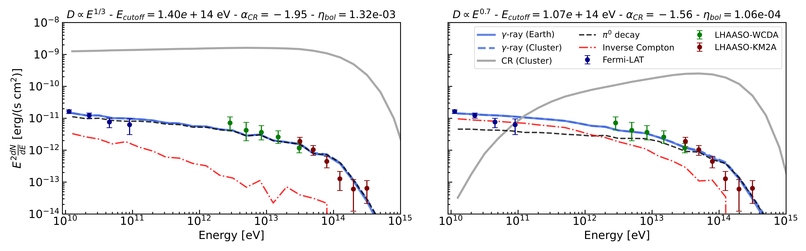
图注：Spectral energy distributions (SEDs) of the $\gamma$-ray emission obtained at Earth for the spherical-shell CR injection models (S1 and S2 in Table \ref{tab:bestfit}), representing particle acceleration at the collective wind shock of the massive stars in the YMSC. The observational data correspond to the measured spectrum of W43, with the different symbols indicating the Fermi-LAT, LHAASO-WCDA, and LHAASO-KM2A measurements \(\citep{2025SCPMA..6879502C},\) as indicated in the legend. The blue solid curves show the total modeled $\gamma$-ray spectrum after propagation to Earth, scaled to the distance of W43. The black dashed curves show the hadronic contribution produced mainly by proton--proton interactions and subsequent $\pi^0$ decay, while the red dash-dotted curves indicate the inverse Compton scattering component. The gray solid curves show the spectrum of CRs escaping from the cluster. The CR injection parameters and the adopted diffusion model are given at the top of each panel. The left panel corresponds to the reference mirror+scattering diffusion model, with $D(E)\propto E^{1/3}$, whereas the right panel shows the comparison case with $D(E)\propto E^{0.7}$, associated with a less favored mirror-dominated diffusion regime.
对应解读：对应“Fermi 与 LHAASO 宽带伽马谱拟合图”“强子与轻子分量分解图”，以及关键图表导读中的图 3、图 4。
入选理由：这是最核心的结果图：同一图中包含 Fermi-LAT、LHAASO-WCDA、LHAASO-KM2A 数据点，总伽马射线模型线、强子 pp 分量、逆康普顿分量，以及逃逸宇宙线谱；左右面板直接比较 D(E)∝\(E^{1/3}\) 与 D(E)∝\(E^{0.7}\)，能支撑日报关于“标准 s≈2 注入在镜像加散射扩散下可连接 GeV 到 PeV，而更强能量依赖扩散需要更硬注入”的核心解读。
来源与置信度：\(arxiv_source\)；high；\(arxiv_source\) / main.tex:figure[7]
Fig08
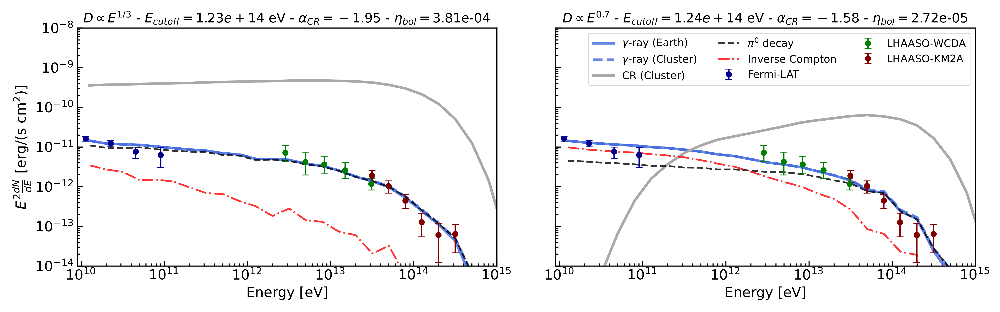
图注：Same as Figure \(\ref{fig:gamma_SED_shell},\) but considering a CR source at the center of the simulated box (models C1 and C2 in Table \ref{tab:bestfit}). While we use the same two regimes for CR diffusion, the total CR power is about one order of magnitude smaller compared to the models presented in Figure \(\ref{fig:gamma_SED_shell}.\)
对应解读：对应“中心注入与球壳注入对比图”，以及关键图表导读中的图 5。
入选理由：该图与 Fig07 结构相同但改为中心源注入，直接检验论文结论中“注入几何主要影响所需 CR 功率而谱形差异较小”。它还保留了强子/轻子分量和两种扩散 regime 的比较，因此比单纯环境或相互作用长度图更能支持日报对注入位置退化的讨论。
来源与置信度：\(arxiv_source\)；high；\(arxiv_source\) / main.tex:figure[8]
Fig12
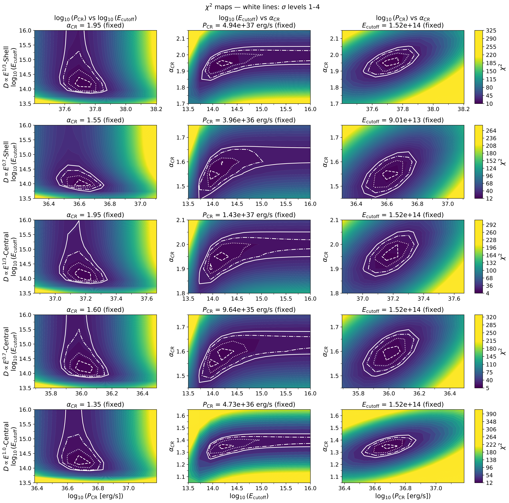
图注：Comparison of $\chi^2$ maps for different fixed CR injection parameters. The left-hand side column shows the maps for fixed CR spectral power law index parameter ($\alpha_\text{CR}$); the center column shows maps with fixed CR power $P_\text{CR}$, and the right-hand side shows maps for fixed spectral energy cutoff ($E_\text{cutoff}$). The color scaling is shown in the right-hand side. White lines show the $\sigma=1$ to $\sigma=4$ levels around the best fit value. The corresponding model of each row is shown in the left-hand side of the figure.
对应解读：对应“参数扫描或残差图”和模型拟合段落中关于 α_CR、\(P_CR\)、\(E_cutoff\) 退化与置信区间的讨论。
入选理由：这是候选图中唯一明确给出 χ² maps 和 1σ–4σ 等高线的参数诊断图，可直接支撑日报关于注入谱指数、CR 功率、截止能量之间退化关系和最佳拟合区域的解读。它比只展示最佳谱线的图更适合说明拟合不唯一性和系统性参数关联。
来源与置信度：\(arxiv_source\)；high；\(arxiv_source\) / main.tex:figure[12]
Fig09
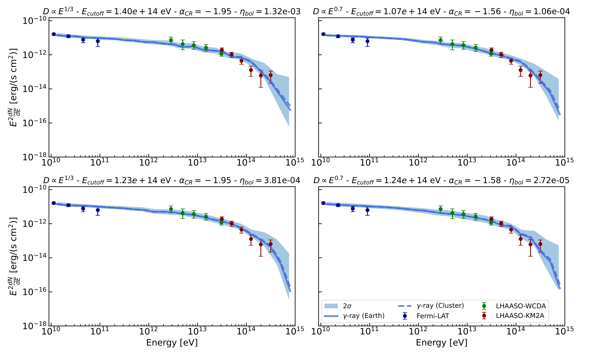
图注：SED variation considering the $2\sigma$ parameters in Figure \(\ref{fig:chi2_maps}.\) Light-blue line and dashed-light-blue line show the best fit SEDs for each model (same as in Figures \(\ref{fig:gamma_SED_shell}\) and \ref{fig:gamma_SED_central}). Shaded region shows the SED variation considering the \(2\sigma\) parameter region shown in Figure \(\ref{fig:chi2_maps}.\) Dark-blue, green and brown dots show the observed SED of W43.
对应解读：对应“参数扫描或残差图”中误差带/置信区间对 SED 的影响，以及宽带谱拟合稳健性讨论。
入选理由：该图把 Fig12 的 2σ 参数区域投影到伽马射线 SED 上，显示最佳拟合曲线周围的模型不确定带，能帮助读者判断模型是否只是穿过某些点，还是在参数误差范围内整体覆盖 Fermi 与 LHAASO 数据。它对日报中“高能端误差条和参数退化不可忽略”的提醒很关键。
来源与置信度：\(arxiv_source\)；high；\(arxiv_source\) / main.tex:figure[9]
Fig01
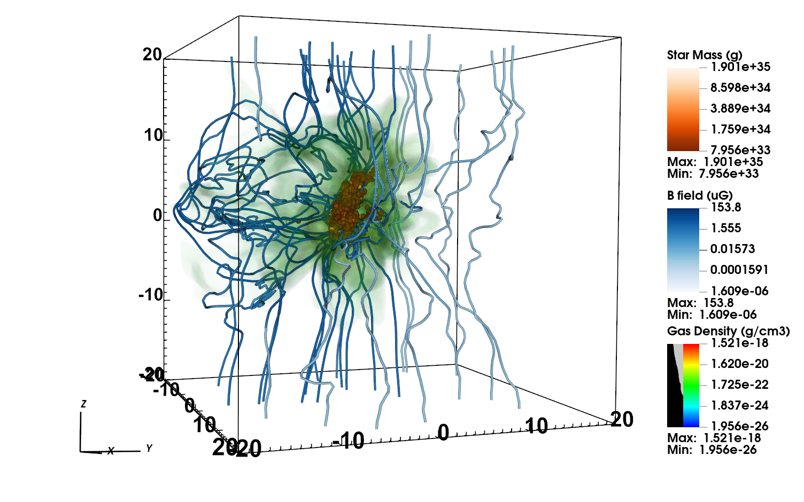
图注：Background YMSCs of the simulation performed by \(\citet{2024A&A...690A..94P}.\) Red spheres show the position of the stars formed in the simulation. Green volumetric distribution shows the denser gas region. Blue and white lines show the magnetic field distribution. The axis scales are in pc.
对应解读：对应“W43 环境场示意或 MHD 切片”，以及关键图表导读中的图 1。
入选理由：该图展示模拟 YMSC 的恒星位置、致密气体分布和磁场线，正好支撑日报中关于非均匀气体、复杂磁场和宇宙线源相对致密气体位置的解读。它为后续强子 pp 发射、磁镜扩散和三维体积分布积分提供物理背景。
来源与置信度：\(arxiv_source\)；high；\(arxiv_source\) / main.tex:figure[1]
Fig06
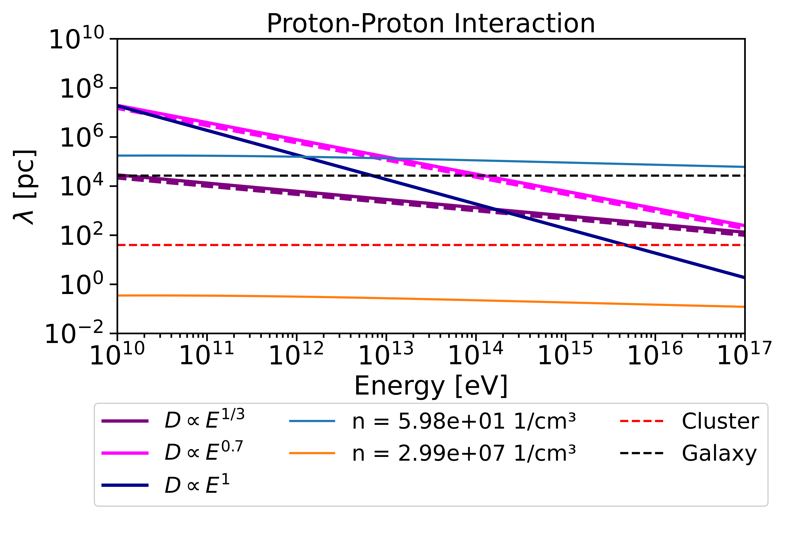
图注：Mean free path for proton-proton interaction considering the lowest (light-blue line) and highest density (orange) values present in the YMSC simulation considering the cross-section of \(\cite{2006PhRvD..74c4018K}.\) Dashed red and black lines show the size of our simulated cluster and the size of our Galaxy, respectively. Purple and magenta lines show the effective size of the cluster for a particle with a given energy, depending on the modeled diffusion coefficient. Solid lines show the effective size for a central source, dashed ones show the effective size for the shell source. See text for further details
对应解读：对应扩散传播诊断、强子 pp 相互作用效率，以及模型拟合段落中关于气体密度和粒子停留时间的退化讨论。
入选理由：虽然候选集中没有单独的 D(E) 扩散系数图，Fig06 用 pp 相互作用平均自由程与不同扩散模型下的有效传播尺度随能量的比较，间接展示了扩散 regime、气体密度和强子伽马射线产额之间的关系。它比纯光子场或同步损失图更贴近 W43 宽带伽马射线中 pp 分量的物理解释。
来源与置信度：\(arxiv_source\)；high；\(arxiv_source\) / main.tex:figure[6]
强相关工作
这篇工作与 LHAASO 对银河 PeVatron 候选体和扩展伽马晕的观测直接相关，也与 HAWC 对 Geminga 周围慢扩散电子晕的解释在概念上相似。共同点是都要求源周围扩散系数低于银河平均值；不同点是本文把重点放在年轻大质量星团和 W43 的复杂三维 MHD 环境，并同时讨论强子与轻子发射。建议检索关键词包括“W43 gamma-ray LHAASO Fermi”、“young massive stellar clusters PeVatron”、“cosmic-ray slow diffusion TeV halos”、“magnetic mirror diffusion pitch-angle scattering”。
在理论背景上，本文可放在银河宇宙线扩散、Kolmogorov 湍流、源周围自限制传播和星团集体风加速的交叉处阅读。与只使用均匀扩散球的模型相比，它的特色是尝试把 MHD 结构带入传播计算；与纯加速模型相比，它强调观测谱形不能直接反推出注入谱。可能存在张力的方向包括：如果未来空间形态显示强能量依赖扩展，或者中微子观测限制强子分量很低，那么本文某些参数组合需要修正。
同一事件 / 同类源线索：
相似工作：
基础理论 / 方法工作：
相反观点 / 张力线索：
（未提供）
2. Launching Jets in Tidal Disruption Events: Magnetic Flux Advection and Plasma Loading
- 来源：arXiv / astro-ph.HE
- 链接：https://arxiv.org/abs/2608.14258v1
- 作者：Rin Oikawa, Yuri Sato
- 评分：novelty 8/10，importance 8/10，relevance 9/10，final 9.35/10
- 推荐理由：Direct astro-ph.HE theory paper on relativistic TDE jet launching, Blandford-Znajek magnetic flux supply, pair loading, and high-energy gamma-ray production; relevant to compact-object transients and prompt emission physics with a concrete new mechanism.
中文题目：潮汐瓦解事件中喷流的启动：磁通量内移与等离子体装载
做了什么：这篇 Letter 讨论为什么只有少数潮汐瓦解事件会产生相对论喷流。作者提出：黑洞在恒星被瓦解前已经有一个低爱丁顿率吸积盘，盘内预存的磁通量在事件发生后被超爱丁顿回落流拖向黑洞；低密度恒星，尤其红巨星，更容易提供足够磁通量，使黑洞进入可由 Blandford--Znajek 机制抽取自旋能的状态。随后近黑洞赤道电流片中的磁重联产生高能伽马光子，光子-光子湮灭生成电子-正电子对，为黑洞磁层补足 Goldreich--Julian 型电荷密度并给喷流辐射区供粒子。核心结论是，喷流型潮汐瓦解事件的稀有性可能同时由“磁通量是否够”和“磁层是否能被等离子体装载”两个门槛控制。
为什么重要：潮汐瓦解事件喷流的两个老问题是：强磁通量从哪里来，以及近黑洞磁层中的带电粒子从哪里来。过去很多模型默认黑洞附近已有足够磁通量和等离子体，但这篇文章试图把这两个边界条件从事件前环境和事件后辐射过程推出来。若这个图像成立，喷流型潮汐瓦解事件不再只是“黑洞自旋高”或“回落率高”的结果，而是对宿主核区残余盘、被瓦解恒星类型和磁层微物理的联合筛选。
理论 / 观测 / 仪器方法价值：理论价值在于把潮汐瓦解事件中的 Blandford--Znajek 喷流启动条件拆成可估算的磁通量输运、磁压积累、重联光子产生和双光子成对装载几步。观测价值在于给出喷流型事件与非喷流型事件的可检验差别：被瓦解恒星结构、前身低亮度活动星系核环境、早期高能辐射和喷流 prompt 发射粒子数之间应有关联。方法价值在于把常被分开处理的全局回落流、磁层电动力学和辐射粒子供给放在同一数量级框架中。
为什么应该关注：如果你关心高能暂现源、黑洞磁层或潮汐瓦解事件人口统计，这篇文章值得看，因为它把“为什么喷流型潮汐瓦解事件少”转化为几个物理门槛，而不是单纯归因于观测选择效应。即使具体数值模型仍简化，它也提醒我们：判定一个潮汐瓦解事件能否出喷流，不能只看峰值回落率，还要看事件前核区磁通量库存、恒星密度结构以及伽马射线能否有效产生电子-正电子对。
展开详细解读：文章讲解、背景、理论、重点章节、图表与相关工作
文章详细讲解
科学问题：潮汐瓦解事件中，恒星碎片回落可以在短时间内形成超爱丁顿吸积流，但只有少数事件表现出相对论喷流。若喷流由 Blandford--Znajek 机制驱动，黑洞视界附近必须积累大尺度有序磁通量，并且磁层必须有足够电荷和等离子体来维持近似力自由电流。问题是，被瓦解恒星本身的磁场通常不一定能直接给出足够大尺度磁通量，而一个真空或欠装载磁层也无法稳定承载 Blandford--Znajek 电流。
作者怎么做：本文提出一个两阶段图像。第一阶段，黑洞在潮汐瓦解前处于低爱丁顿率吸积状态，附近已有低亮度盘或残余盘，磁通量储存在其中。恒星被瓦解后，回落物质形成强吸积流，把这些预存磁通量向内拖曳到黑洞附近。作者估算了不同恒星结构可带来的物质量、回落率和磁通量内移效率，强调低密度恒星如红巨星更容易使系统达到喷流启动所需磁通量。第二阶段，当磁通量在黑洞附近堆积到足够强时，赤道区形成电流片，磁重联产生高能伽马光子，这些光子再通过光子-光子成对产生补充电子-正电子等离子体。
关键结果：文章的中心判断是，磁通量门槛和等离子体装载门槛都可以在同一事件中被满足。足够磁通量使 Blandford--Znajek 功率达到喷流型潮汐瓦解事件所需量级；重联产生的高能光子又可在近黑洞强辐射场中通过 \(\gamma\gamma\) 过程生成足够多的 \(e^\pm\) 对，使电荷密度超过维持磁层电流所需的最小密度。作者还指出，这些新生成的带电粒子不仅是电动力学上必要的，也能为 prompt 辐射提供足够辐射粒子数，从而把喷流启动和早期高能发射联系起来。
局限和下一步：这篇文章更像解析和半解析数量级模型，而不是全局广义相对论磁流体加辐射转移模拟。磁通量如何从预存盘被回落流捕获、内移过程中有多少被扩散或重联耗散、赤道电流片的几何和光谱如何随时间演化，都需要数值模拟检验。观测上，下一步应寻找喷流型潮汐瓦解事件与低亮度活动星系核前身迹象、红巨星瓦解特征、早期硬 \(X\) 射线或伽马射线成分之间的相关性。
关键结果是怎么做出来的
本文最重要的证据链不是来自新观测样本，而是来自一组相互闭合的物理数量级估算。样本层面，作者针对“已知数百个潮汐瓦解事件中只有少数有相对论喷流”这一事实建立解释框架，并以喷流型潮汐瓦解事件的典型功率和 prompt 发射需求作为约束。读者应注意，这里所谓事件数主要用于界定现象稀有性，而不是进行人口统计拟合；文章的核心是判断某种前身环境是否能跨过喷流启动阈值。
第一步是磁通量预算。作者比较恒星瓦解后回落流可搬运的磁通量与 Blandford--Znajek 喷流所需的黑洞磁通量。关键逻辑是：若事件前低爱丁顿盘中已有磁通量，超爱丁顿回落流的高径向输运能力可把这些磁力线推到视界附近。红巨星等低密度恒星因为潮汐半径更大、回落结构和包层条件不同，更容易对应到较大的可捕获磁通量或更合适的吸积几何。支撑这一结论的图表通常会展示所需磁通量随黑洞质量、恒星半径、回落率或喷流功率的变化。
第二步是功率和磁层条件。作者把积累到黑洞附近的磁通量代入 Blandford--Znajek 标度，检查是否能达到观测上喷流型潮汐瓦解事件的各向同性等效或准直修正功率。统计显著性在这里不是 \(p\) 值式的发现显著性，而是参数空间中的可行域：在合理黑洞质量、自旋、磁通量和吸积率范围内，模型是否同时满足能量输出、磁压限制和持续时间约束。读者应重点看参数图中喷流可启动区域与普通主序星、红巨星情形的相对位置。
第三步是等离子体装载。仅有磁通量还不够，若磁层电荷密度低于维持电流所需的 \(n_{\rm GJ}\)，Blandford--Znajek 电路会发生间隙、放电或不稳定。作者假设磁通量堆积后赤道电流片发生重联，产生高能 \(\gamma\) 光子；这些光子与背景光子碰撞，当满足阈值条件时产生 \(e^\pm\) 对。关键诊断量是成对产生光深、对产生率和对密度与 \(n_{\rm GJ}\) 的比值。若图中显示 \(n_\pm/n_{\rm GJ}>1\) 的区域与足够 Blandford--Znajek 功率区域重合，就是本文结论的最强支撑。
系统误差主要来自四类假设：事件前盘中磁通量储量、湍流磁扩散相对于径向内移的效率、重联光谱中超过 \(\gamma\gamma\) 阈值的光子比例，以及喷流辐射区的粒子冷却和逃逸。稳健性检验应包括改变黑洞自旋、盘厚度、磁通量归一化、恒星半径和光子谱形后，可行区域是否仍存在。模型比较上，本文隐含地与“恒星自身磁场直接供磁”“黑洞长期处于磁 arrested disk 状态”“外部气体随机供磁”等方案竞争；它的优势是同时解释磁通量来源和粒子装载，但代价是依赖一个事件前低爱丁顿盘。
展开背景、理论、公式、模型、章节和图表导读
背景知识
潮汐瓦解事件发生在恒星进入黑洞潮汐半径以内时。恒星物质一部分被抛出，一部分保持束缚并按能量分布回落，形成明亮的紫外、光学、软 \(X\) 射线乃至高能辐射暂现源。过去十多年，巡天发现的潮汐瓦解事件数量迅速增长，但具备强相对论喷流证据的事件仍很少，典型代表包括 Swift J1644+57 一类硬 \(X\) 射线明亮事件。
喷流型潮汐瓦解事件的历史难题是，它们看起来需要类似活动星系核喷流的强有序磁场和 relativistic outflow，但潮汐瓦解事件是短暂事件。若黑洞平时安静，为什么恒星刚被撕裂后就能迅速建立一个强磁化、可准直、可持续数天到数月的喷流？单靠恒星自带磁场通常面临磁通量不够或几何不合适的问题，单靠黑洞自旋又不能解释为什么大多数潮汐瓦解事件没有喷流。
观测背景也在变化。软 \(X\) 射线和光学巡天主要发现热辐射潮汐瓦解事件，而硬 \(X\) 射线、射电和未来高能监测更适合发现喷流型事件。随着样本增加，喷流型事件的稀有性、宿主星系核活动状态、射电余辉能量和早期高能光变都可用于反推喷流启动条件。因此，把喷流问题从“能量是否够”推进到“磁通量和等离子体是否同时够”是及时的。
该领域常见误区之一是把超爱丁顿回落率等同于一定有喷流。实际上，超爱丁顿吸积可产生强风和厚盘，但 Blandford--Znajek 型相对论喷流要求视界穿过足够磁通量，并要求磁层电流闭合。另一个误区是认为只要黑洞自旋高就足够；自旋只是能量库，磁通量和载流粒子决定抽取通道是否打开。还有一个误区是把 prompt 辐射粒子当作喷流形成后的附属问题，而本文强调粒子装载本身可能是喷流能否启动的条件。
基础理论 / 方法脉络
基础物理图像从潮汐半径开始。恒星在黑洞潮汐场中被拉伸，当黑洞潮汐力超过恒星自引力时被瓦解。瓦解后的束缚物质按近似 \(t^{-5/3}\) 规律回落，早期回落率可超过爱丁顿率很多倍，从而形成厚盘、强风和快速径向输运环境。厚盘相对于薄盘更容易把外部磁通量拖向黑洞，因为径向速度更大、磁扩散相对不那么容易完全抵消内移。
Blandford--Znajek 机制的关键是旋转黑洞、穿过视界的有序磁通量和可导电磁层。黑洞自旋导致视界附近磁力线以角速度旋转，产生电动势和 Poynting 通量。喷流功率大致随视界磁通量平方和黑洞角频率平方增长。因此，能否达到观测喷流功率，对磁通量极其敏感。
本文的特定假设是：事件前黑洞附近不是完全空的，而是存在低爱丁顿率盘，盘中储存了磁通量；潮汐瓦解后的超爱丁顿回落流将这些磁通量向内带到黑洞附近。这里的关键量包括黑洞质量 \(M_{\rm BH}\)、自旋参数 \(a_\ast\)、恒星质量 \(M_\ast\)、恒星半径 \(R_\ast\)、回落率 \(\dot M_{\rm fb}\)、视界磁通量 \(\Phi_{\rm BH}\) 和喷流功率 \(L_{\rm BZ}\)。红巨星因 \(R_\ast\) 大、平均密度低，在潮汐半径和回落结构上与主序星不同，可能更有利于达到作者要求的磁通量条件。
第二个物理模块是等离子体装载。力自由磁层不是空磁场，它需要足够电荷密度来屏蔽沿磁场方向的电场并承载电流。最低尺度常用 Goldreich--Julian 型密度估计。若电荷不足，磁层会出现间隙放电；若有高能光子场，\(\gamma\gamma\) 成对产生可快速补充 \(e^\pm\)。本文把近黑洞赤道电流片重联作为高能光子来源，并把成对产生率与所需电荷密度比较。
主要退化和系统误差包括：磁通量增加既可来自更强前身盘磁场，也可来自更高内移效率；喷流功率可由更高 \(a_\ast\) 或更大 \(\Phi_{\rm BH}\) 共同提高；prompt 辐射亮度既取决于粒子数，也取决于辐射效率、准直角和多普勒因子。观测上，硬 \(X\) 射线亮度、射电余辉能量和光学热成分都不是喷流功率的直接量，需要模型转换，因此不能把单一波段亮度简单等同于 \(L_{\rm BZ}\)。
公式与推导
第一步是潮汐瓦解条件。把黑洞潮汐加速度与恒星表面自引力相等，可得潮汐半径
这里 \(R_\ast\) 和 \(M_\ast\) 是恒星半径和质量，\(M_{\rm BH}\) 是黑洞质量。该式说明低平均密度、半径大的红巨星会在更远处被瓦解，改变回落时间和磁通量耦合几何。
第二步是回落时间尺度。最束缚碎片的典型回落时间可写成
其中 \(G\) 是引力常数。若能量分布近似平坦，回落率满足
这给出超爱丁顿阶段的物质输运能力，是磁通量能否快速内移的基础。
第三步比较回落率与爱丁顿吸积率。定义
其中 \(\eta\) 是辐射效率，\(c\) 是光速，\(m_{\rm p}\) 是质子质量，\(\sigma_{\rm T}\) 是 Thomson 截面。若 \(\dot M_{\rm fb}/\dot M_{\rm Edd}\gg 1\)，盘厚度和径向速度增大，磁通量内移更有效。
第四步估计黑洞附近可承载的磁通量。若视界半径为 \(r_{\rm H}\)，视界平均磁场为 \(B_{\rm H}\)，则
其中 \(r_{\rm g}=GM_{\rm BH}/c^2\)，\(a_\ast\) 是无量纲自旋。本文关心的是事件前盘和事件后回落流能否使 \(\Phi_{\rm BH}\) 达到喷流所需值。
第五步是 Blandford--Znajek 功率标度。常用近似为
其中 \(\Omega_{\rm H}\) 是视界角速度，\(\kappa\) 是与磁场几何有关的无量纲系数。该式显示喷流功率对 \(\Phi_{\rm BH}\) 和 \(a_\ast\) 都很敏感。
第六步是磁通量饱和或磁 arrested disk 条件。可定义无量纲磁通量
当 \(\phi_{\rm BH}\) 达到几十量级时，磁压可显著影响吸积流动力学。本文的磁通量内移图像可理解为使 \(\phi_{\rm BH}\) 从低值升高到足以产生强 Blandford--Znajek 输出的范围。
第七步是磁层所需电荷密度。Goldreich--Julian 型数密度可估计为
其中 \(\Omega_{\rm F}\) 是磁力线角速度，\(B\) 是局部磁场强度，\(e\) 是元电荷。若实际电子-正电子密度 \(n_\pm 第八步是双光子成对产生阈值。两个光子能量为 \(E_1\) 和 \(E_2\)、夹角为 \(\theta\) 时，阈值近似为 其中 \(m_{\rm e}\) 是电子质量。赤道电流片重联产生的高能 \(\gamma\) 光子若与背景软光子满足该条件，就能生成 \(e^\pm\) 对。 第九步把成对产生写成光深和注入率诊断。若目标光子数密度为 \(n_{\rm ph}\)、相互作用尺度为 \(\ell\)、有效截面为 \(\sigma_{\gamma\gamma}\)，则 这里 \(L_\gamma\) 是重联伽马射线功率，\(E_\gamma\) 是代表性光子能量，\(t_{\rm esc}\) 是逃逸或驻留时间。本文的等离子体装载条件就是检查由此得到的 \(n_\pm\) 是否超过 \(n_{\rm GJ}\)，并是否足以解释 prompt 发射粒子数。 这篇文章主要不是对某个新数据集做参数拟合，而是构建半解析可行性模型。可被“拟合”或约束的量包括 \(M_{\rm BH}\)、\(a_\ast\)、\(M_\ast\)、\(R_\ast\)、前身盘磁场强度、磁通量内移效率、重联辐射效率和喷流准直修正。实际应用时，可用观测到的峰值 \(X\) 射线或射电推断喷流功率范围，再反推出所需 \(\Phi_{\rm BH}\) 与 \(n_\pm\)。 若把该模型用于事件样本，似然可以由多波段光变、光谱能量分布和射电余辉共同构成。热光学/紫外成分约束回落率和再处理层，硬 \(X\) 射线约束 prompt 辐射功率，射电余辉约束喷流动能和外部介质密度。参数后验中 \(a_\ast\) 与 \(\Phi_{\rm BH}\) 会强退化，因为 \(L_{\rm BZ}\) 同时随二者增加；准直角和辐射效率也会与真实喷流功率退化。 残差诊断应重点看时间结构。若模型认为磁通量需要先被回落流内移，则喷流启动可能相对于光学/紫外热峰有延迟；若观测显示硬 \(X\) 射线在最早阶段已极强，说明事件前黑洞附近可能已经接近高 \(\phi_{\rm BH}\) 状态。若模型认为对产生由重联伽马光子驱动，则高能谱形和快速变率应与近黑洞尺度相关；若 prompt 发射更像大半径内激波或外激波，粒子装载解释就要重新评估。 主要系统误差来自前身盘不可见。低爱丁顿盘的磁通量储量很难直接观测，宿主星系核区的弱活动也可能被恒星光或尘埃遮蔽。磁扩散系数、湍流 Prandtl 数和盘厚度决定磁通量是否真的能被内移，这些量在解析模型中通常只能参数化。重联产生的光子谱也存在不确定性，特别是高能端是否足以跨过 \(\gamma\gamma\) 阈值。 模型可能失败的场景包括：多数喷流型事件来自长期活动星系核中已有的强磁 arrested disk，而不是潮汐瓦解触发的磁通量内移；或者喷流粒子主要由中子污染、盘风混入、外部气体 entrainment 提供，而不是 \(\gamma\gamma\) 成对产生。相反，若未来样本显示喷流型事件偏好弱活动核、早期硬高能辐射和红巨星瓦解特征，本文模型会变得更有说服力。 数据/现象动机部分应先读作者如何界定喷流型潮汐瓦解事件的稀有性，以及他们采用哪些典型观测量作为目标，例如喷流功率、持续时间和 prompt 发射粒子需求。这里不要期待完整人口统计，而要看目标量级是否与 Swift J1644+57 类事件相符。 磁通量内移模型部分是全文第一核心。读者应检查作者如何设定事件前低爱丁顿盘、如何估算可储存磁通量、超爱丁顿回落流如何克服磁扩散把磁通量带向黑洞，以及红巨星和主序星情形的差异。关键是看所需参数是否极端。 Blandford--Znajek 功率部分要看 \(L_{\rm BZ}\) 的归一化、黑洞自旋假设和磁通量阈值。若作者给出参数空间图，应关注可产生观测喷流功率的区域是否宽广，还是只存在于很窄的高自旋、高磁场角落。 电流片重联与 \(\gamma\gamma\) 成对装载部分是全文第二核心。应读清楚高能光子来自哪里、光子密度和相互作用尺度如何设定、对产生率如何与 \(n_{\rm GJ}\) 比较，以及这些粒子如何同时满足 prompt 辐射所需数目。 讨论和局限部分要看作者是否承认全局数值模拟、辐射转移和事件前环境观测的缺口。尤其应检查他们对非喷流型潮汐瓦解事件的解释：是不满足磁通量阈值、不满足等离子体装载阈值，还是两者都可能失败。 图 1：若论文给出情景示意图，通常应展示黑洞、事件前低爱丁顿盘、潮汐瓦解回落流、被拖向视界的磁力线、赤道电流片和喷流。读图时不要把示意图当作数值模拟快照；它的价值是说明因果链：预存磁通量被回落流内移，近黑洞重联产生 \(\gamma\) 光子，\(e^\pm\) 对装载磁层。 图 2：磁通量预算图可能以 \(M_{\rm BH}\)、\(R_\ast\) 或 \(\dot M\) 为横轴，以 \(\Phi_{\rm BH}\) 或所需磁场为纵轴。数据点或曲线若区分主序星和红巨星，应看红巨星曲线是否更容易越过 Blandford--Znajek 需求线。读图陷阱是忽略磁通量内移效率；若图中默认效率接近一，实际系统可能更困难。 图 3：喷流功率图通常会画 \(L_{\rm BZ}\) 等值线或可行区域。横轴可能是 \(\Phi_{\rm BH}\)，纵轴可能是 \(a_\ast\) 或 \(M_{\rm BH}\)。关键是观测要求的喷流功率带是否与模型允许区域重合。读图时要区分真实喷流功率和各向同性等效光度，后者受准直角影响很大。 图 4：成对产生诊断图可能显示 \(\tau_{\gamma\gamma}\)、\(\dot n_\pm\) 或 \(n_\pm/n_{\rm GJ}\) 随半径、光子能量或重联效率的变化。若 \(n_\pm/n_{\rm GJ}\) 只在极窄参数下超过一，模型稳健性较弱；若在宽范围内超过一，则说明粒子装载不是瓶颈。读图陷阱是把 \(\tau_{\gamma\gamma}>1\) 简单等同于有效喷流辐射，因为过高光深也可能导致能量热化或改变谱形。 图 5：若有 prompt 发射粒子数或辐射功率比较表，应看模型粒子注入率与观测推断需求之间是否只差一个辐射效率因子，还是差几个数量级。表中的置信区间或范围往往来自准直角、洛伦兹因子和辐射机制假设，不应被理解为严格统计误差。 图 6：稳健性或参数扫描图应重点看结论对黑洞自旋、前身盘磁场、恒星类型和重联光谱的敏感性。如果所有可行点都集中在 \(a_\ast\) 极接近一、重联效率极高和红巨星最有利参数的角落，那么本文机制可能解释少数极端事件；如果可行区较宽，则有机会成为喷流型潮汐瓦解事件的一般模型。模型拟合 / 应用方法
重点章节 / 结果段落怎么读
建议重点查看的图表
关键图表逐图导读
论文原图 / 可嵌入图片
（未提供 verified figure；为避免编造图片链接，本节只在能确认官方图片 URL 或成功提取论文原图时嵌入图片。）
强相关工作
同类观测背景首先是 Swift J1644+57、Swift J2058+05、Swift J1112.2-8238 等喷流型潮汐瓦解事件，以及近年来射电发现的离轴或弱喷流候选体。这些工作提供了喷流功率、洛伦兹因子、射电余辉能量和事件率约束。建议检索关键词包括 “jetted tidal disruption event Swift J1644+57”, “relativistic tidal disruption flare”, “radio afterglow TDE jet”, “off-axis jetted TDE”。
基础理论脉络包括 Rees 的潮汐瓦解回落图像、Blandford--Znajek 机制、磁 arrested disk 模型以及黑洞磁层成对级联。本文与这些工作的关系是把它们组合成一个暂现源启动链条：回落流负责磁通量内移，黑洞自旋和视界磁通量负责 Poynting 通量，重联和 \(\gamma\gamma\) 过程负责载流粒子。可能的相反观点包括：喷流稀有性主要由观测选择效应造成、主要由黑洞自旋分布决定、或由长期活动星系核中已存在的磁 arrested disk 决定。建议检索关键词包括 “magnetic flux problem TDE jets”, “Blandford Znajek tidal disruption event”, “pair loading black hole magnetosphere”, “MAD accretion tidal disruption event”。
同一事件 / 同类源线索：
- https://arxiv.org/abs/2608.14258
- https://arxiv.org/pdf/2608.14258
- https://arxiv.org/abs/1104.3257
- https://arxiv.org/abs/1104.4787
相似工作：
基础理论 / 方法工作：
- https://ui.adsabs.harvard.edu/abs/1977MNRAS.179..433B/abstract
- https://ui.adsabs.harvard.edu/abs/1988Natur.333..523R/abstract
- https://ui.adsabs.harvard.edu/abs/2003PASJ...55L..69N/abstract
相反观点 / 张力线索：
（未提供）
3. High-Energy Neutrinos from Supernova Shock Breakouts in Circumstellar Media: Light Curves, Spectra, and Contribution to the Extragalactic Neutrino Background
- 来源：arXiv / astro-ph.HE
- 链接：https://arxiv.org/abs/2608.13680v1
- 作者：Tal Wasserman, Eli Waxman, Kohta Murase
- 评分：novelty 8/10，importance 8/10，relevance 9/10，final 9.35/10
- 推荐理由：高能中微子与CSM超新星激波突破的清晰天体源和多信使背景关联，给出光变、谱、探测率和弥散背景贡献的解析框架；对TeV中微子和强子辐射源研究高度相关。
中文题目：致密星周介质中超新星激波突破的高能中微子：光变、能谱及其对河外中微子背景的贡献
做了什么：这篇文章研究核心坍缩超新星爆发前短期强质量损失形成的致密星周介质中，非相对论激波突破时能产生多少高能中微子、什么时候产生、能谱长什么样。作者把激波从辐射主导转为无碰撞激波的动力学演化、电磁辐射场、质子加速、介子冷却和光子对产生吸收放在同一个解析框架中，给出中微子光变和能谱的可计算标度关系。主要结论是：若约 \(10\%\) 的无碰撞激波能量进入宇宙线质子，致密星周介质超新星突破可在爆发后数天内释放显著的 \(1\)--\(100\,\mathrm{TeV}\) 中微子，并可能对 IceCube 观测到的河外高能中微子背景有重要贡献，同时由于 \(\gamma\gamma\) 成对吸收，不会相应过量产生可逃逸的高能伽马射线背景。
为什么重要：这项工作重要在于它把“超新星前兆质量损失很常见”这一观测趋势，与“弥散高能中微子背景的天体来源是什么”这个长期问题直接连接起来。普通超新星激波在恒星表面突破时物质柱密度有限，而若爆发前存在半径 \(10^{14}\)--\(10^{15}\,\mathrm{cm}\) 的光学厚星周介质，激波会在外部介质中较长时间保持高密度、高辐射场和可加速质子的无碰撞结构，显著提高 \(pp\) 相互作用产生中微子的效率。
理论 / 观测 / 仪器方法价值：对理论而言，本文提供了从激波动力学、电磁光场、粒子加速到中微子逃逸的统一解析模型，可用于快速扫描超新星星周介质参数空间。对观测而言，它给出了中微子相对于光学峰值提前数天出现的时间窗口、典型能段 \(1\)--\(100\,\mathrm{TeV}\)、以及单个源在 \(1\,\mathrm{km^2}\) 和 \(10\,\mathrm{km^2}\) 级探测器中的事件率预期。对多信使方法而言，它解释了为什么这类源可以是“中微子亮、\(\mathrm{GeV}\) 伽马暗”的候选。
为什么应该关注：如果你关注 IceCube 弥散中微子、瞬变源触发搜寻、核心坍缩超新星前身星质量损失，或 Rubin/LSST 时代超新星早期光变与中微子联合观测，这篇论文都值得读。它给出的不是单个事件解释，而是一套把早期光学光变参数转化为中微子预报的工具；这使得未来可以对附近、强相互作用、早期快速增亮的超新星进行有物理先验的中微子跟踪。
展开详细解读：文章讲解、背景、理论、重点章节、图表与相关工作
文章详细讲解
科学问题：核心坍缩超新星前身星在爆发前几年到数月内可能经历增强质量损失，在恒星外形成半径约 \(10^{14}\)--\(10^{15}\,\mathrm{cm}\)、光学厚度不低的致密星周介质。激波不是简单地在恒星光球突破，而是在星周介质中传播并突破。问题是：这种突破是否能有效产生 \(\mathrm{TeV}\)--\(\mathrm{PeV}\) 中微子？中微子光变是否早于光学峰值？产生的高能伽马射线是否会违反观测到的河外伽马背景？这些问题决定了致密星周介质超新星能否成为 IceCube 弥散高能中微子背景的重要来源。
作者怎么做：论文建立解析模型，跟踪非相对论激波在星周介质中的演化。早期激波由辐射调节，粒子加速受抑；当光学深度下降到与激波速度对应的临界值后，激波转为无碰撞，宇宙线质子可以被加速。作者把星周介质密度、外半径、光学深度、激波速度、辐射温度、光子谱、\(pp\) 相互作用效率、质子最高能量、介子冷却、缪子冷却以及 \(\gamma\gamma\) 吸收光深统一写成随时间变化的函数。这样不仅能估计总能量，还能得到中微子光变和瞬时能谱。
关键结果：典型参数下，相当一部分中微子能量在爆发后几天内释放，常早于电磁光变峰值。\(1\)--\(100\,\mathrm{TeV}\) 中微子可带走被加速质子能量的约 \(10\%\)，前提是 \(pp\) 相互作用在致密星周介质中高效且介子、缪子在衰变前没有被冷却完全压制。与此同时，紧致星周介质中的电磁辐射场使 \(>1\,\mathrm{GeV}\) 光子经历强 \(\gamma\gamma\) 成对吸收，因此高能伽马射线逃逸被抑制。这一点很关键：它允许这类源贡献中微子背景而不必在 Fermi-LAT 的河外伽马背景中留下过强信号。
局限和下一步：模型的主要不确定性来自前身星质量损失率、星周介质几何、激波速度、磁场放大、质子加速效率 \(\epsilon_p\)、电子辐射谱以及真实超新星率中这类致密星周介质事件的占比。论文采用解析结构，适合展示标度关系和参数依赖，但真实源可能有非球对称星周介质、团块、喷流状质量损失和非平稳辐射场。下一步应把该模型接入实际早期光变拟合、光谱速度测量、射电约束和中微子触发搜寻管线，并用附近相互作用超新星样本检验其事件率预测。
关键结果是怎么做出来的
本文最核心的证据链从样本假设而不是具体单源样本开始：作者考虑的是具有致密、光学厚星周介质的核心坍缩超新星族群，星周介质尺度取在观测早期相互作用超新星常见的 \(10^{14}\)--\(10^{15}\,\mathrm{cm}\) 区间。论文的“事件数”不是来自已探测中微子逐个关联，而是通过单源中微子产额、宇宙体积率和探测器有效面积折算出预期探测率。摘要给出的结果是，在 \(1\,\mathrm{km^2}\) 探测器中产生超过一个中微子事件的超新星率约 \(0.05\,\mathrm{yr^{-1}}\)，在 \(10\,\mathrm{km^2}\) 级探测器中约 \(1\,\mathrm{yr^{-1}}\)。
统计显著性在这篇理论论文中并非来自观测检验，而来自可观测量的可积预测：给定星周介质参数、激波速度和质子加速效率，作者计算单源随时间和能量分布的中微子通量，再与探测器面积和背景时间窗结合估计事件数。关键不是单个参数点，而是随 \(R_{\rm CSM}\)、质量柱密度、\(v_s\) 和 \(\epsilon_p\) 的标度关系。读者应重点检查中微子光变、能谱和总背景积分图，确认结论是否由宽参数区间支撑，还是只依赖少数极端致密、快速激波模型。
模型比较的关键在于同时满足两类约束：第一，中微子产生效率要足够高，通常要求 \(pp\) 光深或有效相互作用概率不小；第二，高能伽马射线不能自由逃逸到足以超出观测背景。论文通过随时间演化的电磁谱和 \(\gamma\gamma\) 光深来展示这一点。若只算 \(pp\) 中微子而忽略辐射场对 \(\gamma\) 射线的吸收，就会错误地认为这些源必然被 Fermi 伽马背景强烈排除；本文的结论恰恰是紧致星周介质让中微子和高能伽马射线的逃逸行为分离。
支撑结论的图表应包括：激波从辐射主导到无碰撞阶段的时间演化图；不同参数下中微子光变曲线；时间积分中微子谱；最高质子或中微子能量随时间变化；\(\gamma\gamma\) 光深随能量与时间变化；以及对弥散中微子背景的族群贡献图。稳健性主要应体现在改变星周介质半径、密度归一化、激波速度、光子谱温度和 \(\epsilon_p\) 后，\(1\)--\(100\,\mathrm{TeV}\) 能段仍能保持较高效率。
主要系统误差来自几个方面：星周介质是否球对称会影响光深和突破时间；电磁光谱的非热成分会影响 \(\gamma\gamma\) 吸收；磁场大小会影响质子最高能量和介子同步辐射冷却；宇宙线加速效率 \(\epsilon_p\) 直接线性影响中微子总能量；超新星族群率和致密星周介质占比决定弥散背景归一化。读者需要把摘要中的“可显著贡献”理解为在合理但仍有不确定性的参数与率假设下成立，而不是已经由中微子数据单独证实。
展开背景、理论、公式、模型、章节和图表导读
背景知识
研究对象是核心坍缩超新星爆发时激波与星周介质的相互作用。传统图像中，激波从恒星内部向外传播，在接近恒星表面、光学深度约满足突破条件时释放一个短暂的紫外或软 \(X\) 射线闪光。但越来越多早期光变、窄线谱和强相互作用超新星表明，许多大质量恒星在爆发前不久会抛出大量物质，使真正的突破发生在恒星外部的星周介质中。
历史问题有两个方向。一方面，超新星早期电磁观测不断提示前身星末期演化并不平静，爆发前质量损失可能比稳态恒星风强得多。另一方面，IceCube 发现的河外高能中微子背景需要天体源提供足够的 \(\mathrm{TeV}\)--\(\mathrm{PeV}\) 中微子，同时这些源不能普遍在高能伽马射线中被排除。致密星周介质超新星是自然候选，因为它们有高密度靶物质供宇宙线质子发生 \(pp\) 碰撞。
为什么现在值得重新看？首先，早期瞬变巡天已经能在爆发后数小时到数天内发现超新星，提供星周介质半径和光深的间接约束。其次，IceCube、KM3NeT 和未来更大体积中微子探测器使天区和时间窗关联搜寻更有统计意义。第三，多信使约束越来越严格：一个候选源类不能只解释中微子，还必须解释为什么对应伽马射线、射电或 \(X\) 射线没有过量。
该领域一个常见误区是把“有强相互作用光学信号”直接等同于“高效中微子源”。实际上，早期辐射调节激波可能不利于粒子加速；只有当激波转为无碰撞后，质子才更容易被有效加速。另一个误区是认为高能中微子源一定也应是明亮的高能伽马源。对于致密、光学厚的星周介质，\(\gamma\gamma\) 吸收和级联会把高能伽马能量重处理到较低能段，因此中微子亮而 \(\mathrm{GeV}\) 伽马暗并不矛盾。
还要注意，所谓“星周介质”不是一个单一物理模型。它可能来自红超巨星风、爆发性喷发、双星相互作用或波驱动质量损失；密度剖面可能接近 \(r^{-2}\)，也可能是壳层或团块。不同结构对突破半径、持续时间、温度、粒子加速时长和中微子逃逸均有影响。本文选择解析化参数描述，优点是透明，代价是需要读者把结论理解为对一类模型的标度预报。
基础理论 / 方法脉络
基本物理图像是：超新星激波以速度 \(v_s\) 穿过高密度星周介质。若介质光学深度大，激波前后的能量和动量传递主要由辐射扩散控制，称为辐射调节激波。辐射调节激波的速度跃迁被光子平均自由程展宽，离子尺度上的碰撞less不连续面不明显，因此一阶费米加速效率可能受抑。随着激波接近外层，前方光学深度下降，辐射不能再维持完整调节结构，无碰撞激波形成，宇宙线质子开始被加速。
高能中微子主要来自被加速质子与冷质子碰撞，即 \(pp\) 相互作用。质子能谱通常近似为 \(E_p^{-2}\) 或略有偏离的幂律，碰撞产生带电和中性介子。带电介子衰变链产生 \(\nu_\mu\)、\(\bar{\nu}_\mu\)、\(\nu_e\) 等，中性介子衰变产生高能伽马射线。若介质密度足够高，\(pp\) 相互作用效率高，中微子能量输出接近宇宙线质子能量的一定比例。
本文特定假设包括：星周介质具有给定半径、密度归一化和光学深度；激波为非相对论；无碰撞激波阶段有固定或参数化的质子加速能量分数 \(\epsilon_p\)；电磁辐射场由随时间演化的突破光度和谱温度描述；最高能量由加速时间、动力学时间、\(pp\) 损失、同步辐射损失以及介子/缪子冷却共同限制。关键量包括 \(t_{pp}\)、\(t_{\rm dyn}\)、\(E_{p,\max}\)、\(E_\nu\)、\(f_{pp}\) 和 \(\tau_{\gamma\gamma}\)。
观测上，单源中微子信号要看时间窗、能量窗和方向窗。由于本文预言大量中微子在爆发后数天内、且常早于光学峰值释放，最有效策略不是只围绕光学最大光度搜索，而是用发现时间、回溯爆发时间和早期光变模型设定前峰时间窗。对弥散背景，则要把单源能谱按宇宙体积率、红移演化和宇宙学距离积分。
主要退化关系是：更大的星周介质密度提高 \(pp\) 效率，但也可能加强冷却并改变电磁光变；更快的激波提高可加速最高能量，但源率可能较低；更大的 \(\epsilon_p\) 线性提高中微子归一化，但受宇宙线能量预算约束；更热或更亮的光子场提高 \(\gamma\gamma\) 吸收，同时也影响可观测 \(X\) 射线和紫外信号。系统误差还包括探测器有效面积、低能大气中微子背景、超新星定位误差和爆发时刻不确定性。
公式与推导
第一步是突破条件。辐射调节激波能在上游维持的条件可用前方 Thomson 光学深度表示，当扩散时间与动力学时间相当时发生突破：
这里 \(\tau_{\rm bo}\) 是激波前方到外边界的光学深度，\(c\) 是光速，\(v_s\) 是激波速度。该式说明慢激波需要更大的光学深度才能被辐射调节，而当 \(\tau\) 降到这个量级以下，无碰撞结构和粒子加速更容易出现。
第二步是星周介质密度和光深。若采用风型剖面，密度可写为
其中 \(D\) 是风密度参数，\(\dot{M}\) 是质量损失率，\(v_w\) 是风速。相应光学深度近似为
\(\kappa\) 是不透明度，\(R_{\rm CSM}\) 是星周介质外半径。这个关系把光学突破时间与可由光变约束的星周介质柱密度联系起来。
第三步是激波能量通量。非相对论强激波穿过介质时，单位时间处理的动能量级为
这里 \(r_s\) 是激波半径。若无碰撞激波把一部分能量给宇宙线质子，则
\(\epsilon_p\) 是质子加速效率，本文的关键归一化假设约为 \(0.1\)。该式决定中微子总能量预算的上限。
第四步是 \(pp\) 相互作用效率。质子与靶质子的碰撞时间为
其中 \(n=\rho/m_p\) 是靶质子数密度，\(m_p\) 是质子质量，\(\sigma_{pp}\) 是非弹性 \(pp\) 截面，\(\kappa_{pp}\) 是非弹性能量损失比例。动力学时间可写为
当 \(t_{\rm dyn}\gg t_{pp}\) 时，\(f_{pp}\to 1\)，质子能量高效转化为介子和中微子。
第五步是中微子光度的能量分配。粗略地，带电介子衰变给中微子的能量可写成
因子 \(3/8\) 表示 \(pp\) 产生的介子中约一半能量进入带电介子，带电介子衰变能量中约四分之三进入中微子；精确谱计算会随能量和冷却修正。单个中微子能量与母质子能量的近似关系为
因此 \(1\)--\(100\,\mathrm{TeV}\) 中微子对应约 \(20\,\mathrm{TeV}\)--\(2\,\mathrm{PeV}\) 质子。
第六步是最高能量。若采用 Bohm 标度，加速时间可写为
其中 \(B\) 是磁场，\(e\) 是元电荷，\(\eta\ge 1\) 表示加速效率相对 Bohm 极限的偏离。最高能量由
决定。这个条件说明高密度既提高 \(pp\) 产额，也可能通过损失时间缩短而限制最高能量。
第七步是高能伽马射线逃逸。由中性介子产生的伽马射线在光子场中发生成对吸收，其光深近似为
\(n_\gamma(\varepsilon)\) 是靶光子数密度谱，\(R_{\rm eff}\) 是有效路径长度，\(\sigma_{\gamma\gamma}\) 是成对产生截面。若 \(\tau_{\gamma\gamma}\gg 1\)，\(\mathrm{GeV}\)--\(\mathrm{TeV}\) 伽马射线被吸收并级联，源可以贡献中微子背景而不显著贡献可逃逸高能伽马背景。
第八步是事件数估计。探测器中预期中微子数为
\(\Phi_\nu\) 是到达地球的微分通量，\(A_{\rm eff}\) 是随能量和赤纬 \(\delta\) 变化的有效面积。对族群弥散背景，可写为
这里 \(H_0\) 是 Hubble 常数，\(\xi_z\) 表示源率红移演化修正，\(d\dot{N}_\nu/dE_\nu\) 是本地宇宙单位体积单位时间的中微子产生率谱。该式就是把单源物理接到 IceCube 弥散背景归一化的桥梁。
模型拟合 / 应用方法
本文主要是解析理论预报，但它天然对应一套可拟合框架。对单个超新星，首先由早期光学/紫外光变拟合星周介质半径 \(R_{\rm CSM}\)、密度参数 \(D\)、爆发时刻 \(t_0\)、激波速度 \(v_s\) 和辐射能量。若有窄线谱或射电观测，还可进一步约束上游密度和速度结构。这些电磁拟合参数随后进入中微子模型，预测 \(\Phi_\nu(E_\nu,t)\) 和时间窗内的 \(N_\nu\)。
中微子数据的似然通常可写成时间、方向和能量的联合非齐次 Poisson 似然。拟合量包括源通量归一化、谱指数或物理参数 \(\epsilon_p\)、\(v_s\)、\(D\) 等；背景包括大气中微子、大气缪子误重建以及弥散天体背景。对于理论检验，更常见的是固定电磁参数后，计算 \(N_\nu\) 的上限或堆叠约束，从而反推 \(\epsilon_p\) 或致密星周介质超新星占比。
残差诊断应分两个层次看。电磁端要检查模型是否同时解释上升时间、峰值光度、温度演化和谱线速度；若这些量拟合不好，中微子预报的 \(R_{\rm CSM}\)、\(D\) 和 \(v_s\) 就不可靠。中微子端要看候选事件是否集中在预期的早期时间窗、是否在能量上偏向 \(1\)--\(100\,\mathrm{TeV}\)、方向误差圈是否覆盖源位置，以及与随机背景相比的似然比是否主要由少数低能背景样事件驱动。
主要退化关系包括 \(\epsilon_p\) 与源率占比的退化：弥散背景归一化可由较高的单源效率或较高的事件占比共同提供。\(D\) 与 \(v_s\) 也退化，因为高密度慢激波和低密度快激波可能给出相近光变时间尺度，却产生不同最高中微子能量。磁场参数与最高能量退化，光子谱温度与 \(\gamma\gamma\) 吸收强度退化。若只用单波段光变，很难唯一确定中微子谱形。
模型可能失败的场景很明确：如果激波长期保持辐射调节且无碰撞加速很弱，中微子产额会被高估；如果星周介质高度非球对称，电磁光度不能代表全立体角的相互作用能量；如果强磁场导致介子或缪子在衰变前严重同步辐射冷却，\(\mathrm{TeV}\)--\(\mathrm{PeV}\) 中微子谱会变软或截断；如果真实 \(\epsilon_p\) 远低于 \(0.1\)，族群贡献也会显著下降。实际应用中，应把本文模型作为物理先验和快速预报器，而不是替代辐射流体和粒子输运数值模拟。
重点章节 / 结果段落怎么读
第一，读“模型设定/星周介质与激波动力学”部分时，应抓住作者如何参数化 \(R_{\rm CSM}\)、密度剖面、光学深度和激波速度。这里决定突破时间、无碰撞阶段开始时间和可用激波能量。不要只看 fiducial 参数，要看标度式中哪些量以高次幂影响结果。
第二，读“电磁辐射场与激波状态转变”部分时，应关注辐射调节激波何时转为无碰撞激波，以及作者如何描述光度、温度和光子谱。中微子能否出现不只取决于密度，还取决于粒子加速何时打开；伽马射线能否逃逸则取决于同一光子场。
第三，读“中微子产生、谱和光变”部分时，应重点检查 \(pp\) 效率、最高质子能量、介子/缪子冷却和时间积分谱。这里是全文的核心结果，尤其要看为什么 \(1\)--\(100\,\mathrm{TeV}\) 能段最有利，以及为什么大部分能量在爆发后几天内释放。
第四，读“高能伽马射线吸收”部分时，应看 \(\tau_{\gamma\gamma}\) 对能量和时间的依赖。本文关于“不超产伽马背景”的论点依赖该部分。如果 \(\gamma\gamma\) 光深只在非常早期或非常窄能段大于一，结论会变弱；若在主要中微子产生阶段持续很大，结论更稳健。
第五，读“弥散背景和探测率”部分时，应关注源率、红移演化、\(\epsilon_p\) 和探测器有效面积假设。摘要中的 \(0.05\,\mathrm{yr^{-1}}\) 与 \(1\,\mathrm{yr^{-1}}\) 是把理论产额折算到 \(1\,\mathrm{km^2}\) 与 \(10\,\mathrm{km^2}\) 探测器后的结果，读者需要检查这些数值对阈值、背景和距离分布的敏感性。
建议重点查看的图表
-
激波和星周介质结构演化图：看横轴时间或半径，纵轴应包括光学深度、激波速度、密度或突破条件；重点确认无碰撞阶段开始是否早于主要光学峰值。
-
电磁光变与温度演化图：看模型光度和温度如何随时间变化，因为它们同时决定观测可发现性和 \(\gamma\gamma\) 吸收。需要注意是否采用黑体近似以及谱硬尾是否被忽略。
-
中微子光变图：看不同能段的 \(L_\nu(t)\) 或通量随时间变化，特别是 \(1\)--\(100\,\mathrm{TeV}\) 能段是否在爆发后数天内占主导，是否明显早于电磁峰值。
-
时间积分中微子谱图：看 \(E_\nu^2 dN_\nu/dE_\nu\) 的峰值能量、谱斜率和高能截断；检查介子/缪子冷却是否导致谱变陡。
-
最高质子或中微子能量诊断图：看 \(t_{\rm acc}\)、\(t_{pp}\)、\(t_{\rm dyn}\)、同步辐射冷却时间的交点；这决定论文是否真的能稳定产生 \(\mathrm{TeV}\)--\(\mathrm{PeV}\) 粒子。
-
\(\gamma\gamma\) 光深图：看 \(\tau_{\gamma\gamma}(E_\gamma,t)\) 在 \(>1\,\mathrm{GeV}\) 区间是否大于 \(1\)，以及该阶段是否与主要中微子产生阶段重叠。
-
弥散背景贡献图：看模型曲线与 IceCube 弥散通量数据点的相对位置，并检查是否同时低于 Fermi 河外伽马背景约束。
-
探测率或可见距离表：看不同探测器面积、阈值和源参数下超过一个事件的距离或率，注意这些结果是否被少数高 \(v_s\)、高 \(D\) 模型主导。
关键图表逐图导读
图 1：若论文给出星周介质和激波演化示意或曲线，横轴通常是时间或半径，纵轴可能是光学深度、激波速度、密度和突破判据。读图时要找 \(\tau\simeq c/v_s\) 的位置，它标志辐射调节突破和无碰撞加速可能开始的时间。陷阱是不要把光学峰值时间等同于中微子峰值时间；本文强调中微子可在光学峰值前集中释放。
图 2：电磁光变和温度图通常以时间为横轴，以光度、颜色温度或谱能量分布为纵轴。模型线展示星周介质相互作用如何产生早期亮光变。读者应看温度和光度是否足以提供高 \(n_\gamma\) 的靶光子场，因为这决定 \(\gamma\gamma\) 吸收。读图陷阱是黑体拟合温度未必代表全部高能光子谱，非热尾会改变吸收和级联。
图 3：中微子光变图的横轴多为爆发后时间，纵轴为不同能段的中微子光度或到达地球通量。关键是比较 \(1\)--\(100\,\mathrm{TeV}\) 曲线与总光变，确认主要能量是否在数天内释放。若图中有多组星周介质参数，需看趋势：更致密介质提高早期效率，但也可能压低最高能量。
图 4：中微子能谱图通常画 \(E_\nu^2 dN_\nu/dE_\nu\) 或 \(E_\nu^2\Phi_\nu\) 对 \(E_\nu\)。数据点若为 IceCube 弥散通量，应注意单位是单味还是全味、是否乘以 \(E^2\)。模型线的峰值和截断告诉你最高质子能量和冷却过程是否重要。陷阱是不要只看峰值归一化，还要看低能大气背景严重的区间是否真的可用于瞬变检出。
图 5：若有时间尺度比较图，横轴为质子或介子能量，纵轴为 \(t_{\rm acc}\)、\(t_{pp}\)、\(t_{\rm dyn}\)、\(t_{\rm syn}\) 等。交点给出 \(E_{p,\max}\) 或冷却断裂。读者应确认 \(E_{p,\max}\) 足以覆盖产生 \(100\,\mathrm{TeV}\) 中微子的母质子能量，并看介子/缪子冷却是否在目标能段内已经压制通量。
图 6：\(\gamma\gamma\) 光深图可能以 \(E_\gamma\) 为横轴、\(\tau_{\gamma\gamma}\) 为纵轴，或给出时间-能量二维图。关键读法是找 \(\tau_{\gamma\gamma}=1\) 的等值线，并与中微子产生峰期重叠比较。若主要中微子产生期 \(>1\,\mathrm{GeV}\) 光子对应 \(\tau_{\gamma\gamma}\gg1\)，则“中微子亮但伽马暗”的论点成立。
图 7：弥散背景图应把族群积分通量与 IceCube 数据和伽马背景限制放在同一坐标系中。读者要检查红移演化因子、源率归一化和 \(\epsilon_p\) 的标注。陷阱是模型曲线若刚好贴近 IceCube 数据，不代表源类已被识别；它只说明能量预算和多信使约束上可行。
图 8：探测率或可探测距离图/表应显示在 \(1\,\mathrm{km^2}\) 与 \(10\,\mathrm{km^2}\) 级探测器中 \(N_\nu>1\) 的源率。读者应看率对距离、阈值和能量范围的敏感性，也要注意背景时间窗越宽，偶然符合概率越高，因此早期、短时间窗是该模型的观测优势。
论文原图 / 可嵌入图片
（未提供 verified figure；为避免编造图片链接，本节只在能确认官方图片 URL 或成功提取论文原图时嵌入图片。）
强相关工作
这篇工作属于“同类源”研究：核心坍缩超新星、强相互作用超新星和星周介质激波作为高能中微子源。它与 IceCube 弥散中微子背景研究直接相关，也与此前关于超新星激波突破、相互作用超新星中宇宙线加速、以及隐藏源 \(\gamma\) 射线吸收的理论工作相连。检索关键词可用 “supernova shock breakout dense circumstellar medium neutrinos”, “CSM interaction high energy neutrinos”, “hidden cosmic-ray accelerators gamma gamma attenuation”, “IceCube diffuse neutrino background supernovae”。
相反观点或张力主要来自三类约束。第一，若许多相互作用超新星真有高 \(\epsilon_p\)，射电和 \(X\) 射线观测可能对电子加速、磁场和吸收提出约束，但这些约束不总能直接限制质子。第二，Fermi 河外伽马背景限制通常排除透明的强 \(pp\) 源族群，但本文强调致密星周介质中的 \(\gamma\gamma\) 吸收可避免该问题。第三，IceCube 对已知超新星样本的时间和方向关联尚未给出决定性检出，因此这类模型仍处在可行但未证实的阶段；未来更大探测器和更早发现的光学样本将是关键。
同一事件 / 同类源线索：
相似工作：
基础理论 / 方法工作：
相反观点 / 张力线索：
（未提供）
4. Optical Spectroscopy of TeV-emitting BL Lac Candidates
- 来源：arXiv / astro-ph.HE
- 链接：https://arxiv.org/abs/2608.14412v1
- 作者：Cassidy Metzger, Ryan C. Hickox, John R. Thorstensen
- 评分：novelty 6/10，importance 7/10，relevance 10/10，final 8.75/10
- 推荐理由：Provides spectroscopic redshifts for TeV-emitting BL Lac candidates, including new measurements, directly supporting CTA-era TeV blazar studies and interpretation of EBL, jet, and gamma-ray propagation results. Modest sample size, but very relevant to gamma-ray astronomy.
中文题目：TeV 辐射 BL Lac 候选体的光学光谱观测
做了什么：这篇论文用 SALT 和 MDM 望远镜对 16 个可能在 TeV 波段发射的 BL Lac 型耀变体候选体做了中等分辨率光学光谱观测，核心目标是补上这些源的可靠光谱红移。作者从光谱中识别宿主星系吸收线或较弱的发射线，为全样本给出红移，范围约为 \(0.059\) 到 \(0.4\)，其中 5 个是新的光谱红移测量。它的重要性不在于发现了新的极端物理过程，而在于为 CTA 时代的 TeV 源选择、能谱去吸收、河外背景光约束和喷流本征功率估计提供了基础参数。
为什么重要：BL Lac 的连续谱常被相对论喷流淹没，光谱线弱，导致很多 \(\gamma\) 射线 BL Lac 没有可靠红移；但 TeV 光子在传播中会被河外背景光吸收，红移几乎是解释 TeV 能谱的第一输入量。没有 \(z\)，就很难区分一个源本来能谱很硬，还是因为距离远而被 \(\gamma\gamma\) 吸收改形。这篇工作把一批 CTA 相关候选源从“可能有用但距离不明”的状态推进到可以纳入物理建模和观测排程的状态。
理论 / 观测 / 仪器方法价值：对观测而言，论文提供了 16 个 TeV BL Lac 候选体的统一光谱测量和红移判定，直接服务于 CTA、MAGIC、VERITAS、H.E.S.S. 等 TeV 观测的目标优先级排序。对理论而言，红移使研究者能够把观测通量转化为本征光度，并进行 EBL 去吸收、喷流谱能量分布拟合以及宇宙线或轴子样粒子相关传播模型检验。对方法而言，它展示了在 BL Lac 弱线光谱中如何利用宿主星系吸收特征、信噪比和谱线识别来取得实用红移。
为什么应该关注：如果你研究 TeV 耀变体、EBL、CTA 源表、喷流 SED 或多信使候选源，这类“红移清点”论文会决定很多后续结论是否可用。一个 \(z\sim0.06\) 源和一个 \(z\sim0.4\) 源在 TeV 传播、光度、宿主可见性和 CTA 曝光时间上完全不是同一个问题。本文的结果可能不会单独改变 BL Lac 物理图像，但会改变这些具体源在未来观测计划和样本统计中的权重。
展开详细解读：文章讲解、背景、理论、重点章节、图表与相关工作
文章详细讲解
科学问题：TeV BL Lac 是研究相对论喷流、粒子加速和高能 \(\gamma\) 射线传播的关键源类，但它们最常缺少的基础参数恰恰是红移 \(z\)。BL Lac 的光学谱通常由无热喷流连续谱主导，宿主星系吸收线和窄发射线很弱，很多 \(\gamma\) 射线 BL Lac 因此只有光度红移、下限、错误关联，甚至完全没有距离信息。对 TeV 源来说这尤其麻烦，因为 TeV 光子会与河外背景光发生 \(\gamma\gamma\) 吸收，观测到的谱形同时包含源内辐射机制和宇宙传播效应。本文要解决的是一个很具体但很基础的问题：一批 TeV 辐射 BL Lac 候选体到底有多远。
作者怎么做：作者选择了 16 个 TeV-emitting BL Lac candidates，用 SALT 和 MDM 望远镜进行中等分辨率光学光谱观测。中等分辨率的价值在于它不追求极高速度结构，而是尽可能在合理曝光时间内提高连续谱信噪比并解析常见的星系吸收线，如 Ca \(\mathrm{H}\&\mathrm{K}\)、G band、Mg \(b\)、Na \(D\)，以及可能存在的 \([\mathrm{O\,II}]\)、\([\mathrm{O\,III}]\)、H\(\alpha\)、H\(\beta\) 等发射线。对 BL Lac，这类弱特征常常比强发射线更可靠，因为源的分类本身就要求等效宽度较小。
关键结果：论文为全部 16 个目标测得光谱红移，红移范围为 \(0.059\le z\le0.4\)，其中 5 个是新的光谱红移测量。这个范围在 TeV BL Lac 研究中很有意义：低红移源可以作为近邻极高能谱研究对象，中等红移源则对 EBL 吸收更敏感，也更考验 CTA 的灵敏度和能量覆盖。作者的贡献不是简单报出数字，而是把每个源的谱线识别、红移一致性和已有文献状态联系起来，使这些候选体能更可靠地进入 TeV 源人口统计。
局限和下一步：这类工作仍受限于喷流态、宿主星系亮度、光谱信噪比、 telluric 校正、银河消光以及线识别歧义。一次光谱观测可能碰到喷流处于高态，使宿主吸收线被冲淡；低态下复测可能给出更强特征。下一步值得做的是把这些红移纳入 CTA 目标模拟、Fermi-LAT 到 TeV 的宽能段 SED 拟合、EBL 去吸收模型比较，以及对没有强宿主吸收线的 BL Lac 进行更深光谱或高空间分辨率成像约束。
关键结果是怎么做出来的
样本选择方面，本文聚焦 16 个 TeV-emitting BL Lac candidates，而不是一般 BL Lac 总体样本。这个选择使结论直接服务于 TeV 和 CTA 科学：这些源要么已有 TeV 关联或候选身份，要么是未来地面切伦科夫望远镜可能优先关注的目标。样本量 \(N=16\) 不大，但对光谱补红移这类工作是有实际分量的，因为每个对象都需要单独检查光谱特征、文献红移和分类可靠性。
观测证据链的核心是光谱线识别。作者用 SALT 和 MDM 获得中等分辨率光谱后，寻找多个在同一 \(z\) 下自洽的吸收或发射特征。对 BL Lac，最有用的通常是宿主椭圆星系的吸收谱，例如 Ca \(\mathrm{H}\&\mathrm{K}\) break、G band、Mg \(b\) 和 Na \(D\)。如果多个特征给出的 \(z\) 一致，红移可信度明显高于单线判定；如果只有一条弱线，就需要结合谱段覆盖、可能的天空线残差和已有文献判断。
主要结果是全样本均给出光谱红移，\(z\) 落在 \(0.059\) 到 \(0.4\) 之间，并包含 5 个新光谱红移。统计显著性在这类论文中通常不是以 \(5\sigma\) 发现来表达，而是通过谱线测量误差、谱线一致性、信噪比、与历史红移的一致或修正来评估。读者应重点看每个目标的光谱图、红移表、线列表以及作者对个别源的注释，因为真正的证据常在“哪几条线支持该 \(z\)”而非样本平均值。
支撑结论的图表应包括每个源的光谱、标注的谱线位置、红移测量表和可能的目标基本性质表。若图中显示连续谱很平滑，只在预期波长处有弱吸收槽，那么需要检查这些槽是否避开强天空线、是否在不同曝光或不同仪器下可重复、是否与多个宿主特征同时匹配。若论文给出历史红移对比，则应特别关注新红移是否推翻了以往基于单线或低信噪比光谱的数值。
系统误差主要来自弱线识别、波长定标、天空扣除、telluric 吸收、宿主与喷流光比变化，以及谱段覆盖不完整。稳健性检验的关键不是复杂机器学习，而是传统光谱学的交叉一致性：多线是否同红移、吸收线是否符合椭圆宿主模板、发射线是否物理合理、测得红移是否与成像宿主亮度和 \(\gamma\) 射线性质大体相容。对后续使用者来说，最安全的做法是把这些红移与质量标记一起使用，而不是只复制一个数字。
展开背景、理论、公式、模型、章节和图表导读
背景知识
BL Lac 是耀变体的一类，其喷流方向接近视线方向，相对论多普勒增强使非热连续谱非常强。与 FSRQ 不同，BL Lac 的光学发射线弱或几乎不可见，传统分类常以发射线等效宽度小于若干 \(\unicode{x212B}\) 作为经验标准。这个定义看似简单，却带来一个长期问题：越是喷流强、越像典型 BL Lac 的源，越难测红移。
TeV BL Lac 在高能天体物理中占据特殊位置。它们的同步辐射峰和逆康普顿峰常位于较高频率，很多属于高同步峰 BL Lac，即 HBL 或极端 HBL。TeV 辐射告诉我们喷流中至少存在能够产生 \(\gtrsim\mathrm{TeV}\) 光子的高能粒子，因而与磁场、电子最大能量、辐射区尺寸、多普勒因子和可能的强子过程有关。
红移问题的历史背景很实际：Fermi-LAT 发现了大量 \(\gamma\) 射线 BL Lac，但其中相当一部分没有可靠光谱红移。TeV 望远镜的观测时间昂贵，CTA 时代虽然灵敏度大幅提升，但仍需要知道目标的大致距离来估计曝光时间和可探测能段。红移还会影响 EBL 校正，进而影响我们判断本征 TeV 谱是否异常硬，是否需要引入非常规传播或新物理解释。
为什么现在值得重新看？一方面 CTA 即将显著扩展 TeV 源样本，先验红移表会直接影响观测策略；另一方面，多波段巡天已经给出大量候选 BL Lac，但候选身份不等于物理样本可用。中等口径到大口径光学望远镜的系统补光谱，是把 \(\gamma\) 射线源表转化为物理样本的必要步骤。
该领域常见误区是把目录红移当成同等可靠。实际上，BL Lac 的红移可能来自宿主成像、单条弱线、邻近星系关联、错误对应体或低信噪比历史光谱。另一个误区是认为没有红移只影响距离尺度；对 TeV 源，它还影响 EBL 吸收、内禀谱指数、能量预算和是否存在异常透明宇宙等更深层解释。
基础理论 / 方法脉络
基础物理图像从耀变体喷流开始。喷流中相对论电子在磁场中产生同步辐射，从射电到 X 射线形成低能谱峰；同一电子群还可通过同步自康普顿或外康普顿过程把低能光子提升到 GeV–TeV，形成高能峰。由于喷流以洛伦兹因子 \(\Gamma\) 接近视线运动，观测到的通量被多普勒因子 \(\delta\) 显著增强，连续谱会压过宿主星系的恒星吸收线。
红移测量的基本逻辑是比较谱线的观测波长和实验室静止波长。若一个吸收特征的静止波长为 \(\lambda_{\rm rest}\)，观测到 \(\lambda_{\rm obs}\)，则 \(z=\lambda_{\rm obs}/\lambda_{\rm rest}-1\)。对 BL Lac，最常依赖宿主椭圆星系吸收线，因为窄线区发射可能很弱。多条吸收线在同一 \(z\) 下对齐，是红移可信度的关键。
本文的观测方法属于中等分辨率光学光谱学。其关键量包括谱分辨率 \(R\)、每像素或每分辨元信噪比 \(\mathrm{S/N}\)、波长定标误差、等效宽度 \(W_\lambda\)，以及连续谱拟合。弱线能否被探测，不只取决于望远镜口径，也取决于喷流当时是否处于高态；高态会提高连续谱，降低同一宿主吸收线的观测等效宽度。
从 TeV 解释角度，红移进入两个层面。第一，给定观测通量后，光度距离 \(d_L(z)\) 决定各向同性等效光度。第二，TeV 光子传播时的光学深度 \(\tau_{\gamma\gamma}(E,z)\) 随能量和红移增加而增大，观测谱 \(F_{\rm obs}(E)\) 与本征谱 \(F_{\rm int}(E)\) 之间满足指数衰减关系。红移错误会直接转化为本征谱重建错误。
常见退化包括喷流连续谱与宿主星系光的比例退化、弱吸收线与天空残差的混淆、单线红移的多重识别，以及 EBL 模型和本征谱形之间的退化。本文这种光谱补测的价值就在于先把最基础的 \(z\) 固定住，减少后续 SED 和传播模型中的自由度。
公式与推导
第一步是谱线红移定义。若谱线静止波长为 \(\lambda_{\rm rest}\)，观测波长为 \(\lambda_{\rm obs}\)，则
这里 \(z\) 是宇宙学红移；对本文的 \(z\lesssim0.4\) BL Lac，宿主星系吸收线的系统速度误差通常远小于宇宙学距离尺度，但波长定标和线心拟合仍会影响小数位。
第二步是多条谱线的一致红移估计。若第 \(i\) 条线给出 \(z_i\)，测量不确定度为 \(\sigma_i\)，加权平均可写为
这不是复杂物理模型，而是弱线红移判定的核心诊断：多线一致比单线更可靠。
第三步是等效宽度，它刻画弱线相对于连续谱的强度：
其中 \(F_\lambda\) 是观测谱通量密度，\(F_{c,\lambda}\) 是连续谱。对吸收线 \(W_\lambda>0\) 的约定常见；不同文献符号可能相反。BL Lac 中 \(F_{c,\lambda}\) 常由喷流主导，使 \(W_\lambda\) 被稀释。
第四步是连续谱稀释。若宿主星系线的本征等效宽度为 \(W_{\rm host}\)，宿主连续谱和喷流连续谱分别为 \(F_{\rm host}\) 与 \(F_{\rm jet}\)，观测等效宽度近似为
这解释了为什么同一个 BL Lac 在喷流高态时更难测红移，也解释了深光谱和低态观测的重要性。
第五步是光谱分辨率与速度尺度。仪器分辨率 \(R\) 定义为
中等分辨率光谱足以分辨宽度不太小的星系吸收特征，并降低天空线混淆；但若 \(R\) 或 \(\mathrm{S/N}\) 不足，弱线线心和等效宽度都会变得不稳定。
第六步是从红移到光度距离。平直 \(\Lambda\)CDM 中
其中 \(H_0\)、\(\Omega_m\)、\(\Omega_\Lambda\) 是宇宙学参数。本文给出的 \(z\) 使后续研究者可以把通量转换为光度，而不是只比较表观亮度。
第七步是通量到光度的基本关系。若在某能段测得能量通量 \(F\)，各向同性等效光度为
其中 \(K(z)\) 是 \(K\)-校正，取决于谱形。对耀变体，\(L_{\rm iso}\) 不等于真实喷流功率，但它是样本比较和 SED 拟合的常用量。
第八步是 TeV 光子的 EBL 吸收。观测谱与本征谱关系通常写成
其中 \(E\) 是观测光子能量，\(\tau_{\gamma\gamma}\) 是由 EBL 模型给出的光学深度。红移越大，同一 \(E\) 下 \(\tau_{\gamma\gamma}\) 通常越大，因此本文的红移直接影响 TeV 谱去吸收。
第九步是光谱拟合中的简单似然诊断。若像素 \(j\) 的观测通量为 \(f_j\)，误差为 \(\sigma_j\)，模型为连续谱加红移模板 \(m_j(\theta,z)\)，可用
评估不同 \(z\) 或模板参数 \(\theta\)。这里的 \(\theta\) 可包括连续谱斜率、归一化、宿主贡献和线强度。即使论文主要以线识别报告红移，这个统计图像也说明了读者应如何理解残差和可信度。
模型拟合 / 应用方法
本文本身的核心拟合不是复杂的喷流辐射模型，而是光学光谱中的红移测量。实际操作通常包括波长定标、通量定标或相对响应校正、天空扣除、连续谱拟合、谱线线心测量，以及把观测特征与静止系吸收或发射线表匹配。拟合量包括 \(z\)、连续谱斜率、线心、线宽、等效宽度和线强度。
参数估计可理解为在不同 \(z\) 下比较谱线模板与观测谱的匹配程度。若信噪比较高，多条吸收线会在同一 \(z\) 同时出现，后验分布或 \(\chi^2\) 曲线会有单一清晰极小值；若只有一条弱线，多个红移解释可能共存。此时需要引入先验信息，例如对象的 BL Lac 分类、宿主星系常见谱型、已有目录红移、成像宿主亮度以及 \(\gamma\) 射线性质。
主要退化来自连续谱分解。观测光谱可近似看作喷流幂律连续谱、宿主星系恒星谱和可能的窄线发射叠加。喷流越亮，宿主吸收线越浅，导致 \(W_\lambda\) 下降；宿主贡献越强，Ca break 等特征越明显。这个退化会让同一个目标在不同光学状态下有不同的“可测红移难度”，但不会改变真实 \(z\)。
系统误差包括波长定标零点、天空线残差、telluric 吸收、狭缝损失、二阶光污染、银河消光校正和绝对通量标定误差。对红移而言，绝对通量误差通常不是最大问题；更关键的是弱特征是否真实、是否受强天空线影响、是否在多个光谱段或多个特征间相互支持。读者看残差时应关注标注线附近是否存在系统性过拟合或未扣干净的夜天光。
实际应用场景是把这些红移作为后续 TeV 模型的固定输入或带误差先验。SED 拟合会用 \(z\) 计算 \(d_L\)、进行 EBL 校正并估计同步峰与逆康普顿峰光度。CTA 曝光模拟会用 \(F_{\rm obs}(E,z)\) 和 \(\tau_{\gamma\gamma}(E,z)\) 预测可探测性。若未来更深光谱修正个别红移，相关源的本征 TeV 谱和光度估计也需要同步更新。
重点章节 / 结果段落怎么读
数据和样本部分应首先阅读。这里会说明 16 个 TeV BL Lac 候选体如何选出、它们与 TeV 目录或候选列表的关系、已有红移状态，以及为什么这些对象值得用 SALT 和 MDM 补光谱。读者应区分“已有但不可靠红移”“只有红移下限”“完全无光谱红移”和“本文首次测得”。
观测与数据处理部分是判断结果可靠性的基础。重点看望远镜、光谱仪设置、波长覆盖、分辨率 \(R\)、曝光时间、信噪比、标准星校正和天空扣除策略。对 BL Lac 弱线光谱，谱段覆盖是否包含 Ca \(\mathrm{H}\&\mathrm{K}\) 或其他强宿主特征非常关键。
红移测量方法部分应重点看谱线识别原则。读者需要检查作者是否依赖多条线、是否报告等效宽度、是否解释疑难目标，以及是否把可能的 telluric 或天空线区域排除。若某个新红移只由一条弱特征支持，使用时应更谨慎。
主结果部分通常是红移表和光谱图。这里应逐个目标读，而不是只看总体范围 \(0.059\le z\le0.4\)。对后续研究者，最有用的信息是每个源的最终 \(z\)、识别到的线、与文献值是否一致，以及 5 个新光谱红移分别属于哪些源。
讨论和结论部分应关注这些红移对 TeV 观测的影响。作者可能讨论 CTA 目标选择、EBL 吸收解释、源分类确认和未来观测需求。读者应把这部分与自己的 TeV 模型或样本选择联系起来：哪些源现在可进入完整物理建模，哪些仍值得深光谱复测。
建议重点查看的图表
-
全样本或目标列表表格：检查每个源的名称、坐标、已有分类、历史红移、本文红移和观测设施；尤其看 5 个新红移的标记是否清楚。
-
每个目标的光学光谱图：检查横轴是否为观测波长或静止系波长，纵轴是相对通量还是绝对通量；重点看标注的 Ca \(\mathrm{H}\&\mathrm{K}\)、G band、Mg \(b\)、Na \(D\) 或发射线是否真的可见。
-
谱线测量表：检查线心、识别、等效宽度、单线红移和误差；多条线给出的 \(z\) 是否一致是最关键的可靠性指标。
-
红移分布或与文献红移对比图：看本文是否修正了以往红移，是否存在系统偏移，是否有从未知红移到 \(z\sim0.4\) 的重要更新。
-
信噪比或观测条件诊断：若论文提供，检查低信噪比目标的红移是否仍由多特征支持；不要把所有红移质量视作相同。
-
个别疑难源注释或附录图：关注可能受天空线、telluric 吸收、谱段边缘影响的特征；这些往往决定红移是否应作为确定值使用。
-
与 TeV 可观测性相关的表或讨论：若给出 TeV 候选状态、Fermi-LAT 性质或 CTA 相关说明，应看红移变化如何影响源优先级和 EBL 吸收强度。
关键图表逐图导读
图 1：如果论文给出样本概览图或目标分布图，横轴可能是红移、源名或 \(\gamma\) 射线性质，纵轴可能是目标数、光学亮度或 TeV 候选类别。读者应看 16 个目标是否覆盖了低红移和中等红移范围，以及 5 个新红移是否集中在某类源中。读图陷阱是样本并非完整体积限制样本，不能直接从红移分布推出 TeV BL Lac 的真实空间密度。
图 2：每个源的光学光谱是本文最关键的证据图。横轴若为观测波长，标注线应落在 \(\lambda_{\rm rest}(1+z)\) 位置；若为静止系波长，常见宿主吸收线应回到实验室波长。纵轴通常是相对通量，连续谱斜率不宜过度物理解读，因为狭缝损失和相对定标会影响形状。真正要看的是弱吸收或发射特征是否与同一 \(z\) 自洽。
图 3：若有谱线局部放大图或红移模板匹配图，应关注数据点、平滑谱、模板线和残差。坐标轴通常围绕 Ca \(\mathrm{H}\&\mathrm{K}\) 或其他关键特征展开。主要结论应是某些弱线在噪声之上可见，并且残差没有显示明显的天空扣除伪迹。陷阱是过度相信平滑后的视觉特征；应回到未平滑谱和误差数组判断。
图 4：若论文提供红移对比表的可视化，横轴可能是文献红移，纵轴是本文红移。落在一比一线附近说明确认，偏离点说明修正或新判定。读者应看偏离是否来自旧值质量差，而不是简单认为本文或文献之一必错。对单线历史红移，本文多线吸收测量通常更可信。
图 5：若有 TeV 或 EBL 相关讨论图，可能展示不同 \(z\) 下的 \(\tau_{\gamma\gamma}(E,z)\) 或预期 TeV 衰减。横轴通常是能量 \(E\)，纵轴是光学深度或通量衰减因子。读者应看从 \(z\sim0.06\) 到 \(z\sim0.4\) 时 TeV 透明度差异有多大；陷阱是把观测谱软化完全归因于 EBL，而忽略本征谱曲率。
论文原图 / 可嵌入图片
（未提供 verified figure；为避免编造图片链接，本节只在能确认官方图片 URL 或成功提取论文原图时嵌入图片。）
强相关工作
这篇工作属于 BL Lac 红移补测和 TeV 候选源确认这一类文献。相似工作通常会使用大口径光学望远镜对 Fermi-LAT BL Lac、TeV 候选 BL Lac 或极端 HBL 进行深光谱，目标是寻找宿主星系吸收线、给出红移下限或修正错误目录值。建议检索关键词包括 “BL Lac spectroscopic redshift”, “TeV BL Lac optical spectroscopy”, “Fermi BL Lac redshift”, “CTA blazar candidates redshift”, “host galaxy absorption BL Lac”。
与基础理论和观测框架相关的工作包括耀变体统一模型、BL Lac 光谱分类、Fermi-LAT \(\gamma\) 射线源表、TeV 源目录、EBL 吸收模型以及 CTA 科学书。本文不会直接解决 EBL 模型张力或轴子样粒子问题，但它提供这些问题所需的红移输入。相反观点或张力主要来自两个方面：一是某些 BL Lac 历史红移可能由低质量单线识别给出，后续深光谱会修正；二是 TeV 谱异常硬有时被解释为新物理或 EBL 偏低，但红移不确定会显著削弱这类论证。若要追踪同类源和历史原型，可从 TeVCat、Fermi-LAT 4FGL、Roma-BZCAT、CTA blazar science 以及具体源名的 NASA ADS 检索入手。
同一事件 / 同类源线索：
- https://arxiv.org/abs/2608.14412
- https://arxiv.org/pdf/2608.14412
- https://tevcat.uchicago.edu/
- https://fermi.gsfc.nasa.gov/ssc/data/access/lat/4yr_catalog/
- https://www.cta-observatory.org/
相似工作：
基础理论 / 方法工作：
相反观点 / 张力线索：
（未提供）
5. The second Arcminute Microkelvin Imager -- Large Array Gamma-ray burst radio afterglow catalog
- 来源：arXiv / astro-ph.HE
- 链接：https://arxiv.org/abs/2608.13697v1
- 作者：L. Rhodes, D. Ibrahim, N. Sqalli, G. E. Anderson, R. Fender, A. J. van der Horst, J. S. Bright, A. K. Hughes
- 评分：novelty 7/10，importance 7/10，relevance 9/10，final 8.70/10
- 推荐理由：大型GRB射电余辉目录，包含210个暴、1035次AMI-LA观测及若干未发表光变曲线分析；GRB属于高优先级HE主题，目录型结果对余辉物理和后续样本研究有复用价值。
中文题目：第二版 AMI-LA 伽马暴射电余辉巡天目录
做了什么：这篇论文发布第二版 Arcminute Microkelvin Imager Large Array（AMI-LA）伽马暴射电余辉目录：共包含对 210 个伽马暴的 1035 次观测，观测时间覆盖爆发后约 \(0.04\) 到 \(900\) 天。作者在其中探测到 19 个射电对应体，流量密度约为 \(0.1\)–\(40\,\mathrm{mJy}\)，并对 6 个此前没有系统发表光变曲线的事件做了个例分析。核心结论是：AMI-LA 样本中的射电余辉亮度分布跨越约五个数量级，比光学和 X 射线余辉的动态范围更大；在有足够光变信息的个例中，反向激波成分出现得相当频繁，约 \(60\%\) 的射电对应体显示反向激波证据；两个余辉还显示星际闪烁，可用于限制爆发后几十天时的源角尺度。
为什么重要：射电余辉是伽马暴余辉物理里最能直接触及喷流动力学、外部介质密度、自吸收频率、反向激波和非相对论转变的波段之一，但长期受限于跟进不均匀、非探测未系统公开、样本选择复杂。这份目录的重要性在于把 AMI-LA 多年的 \(\sim 15\,\mathrm{GHz}\) 跟进观测整理成可统计使用的数据集，不只报告亮的探测源，也保留大量上限，从而能研究射电探测率、亮度函数和观测选择效应。
理论 / 观测 / 仪器方法价值：对理论而言，目录给出了检验标准外激波模型、反向激波出现率、喷流-环境参数分布的射电约束。对观测而言，它提供了 210 个伽马暴的统一射电跟进记录，可用于与 VLA、ALMA、MeerKAT、ATCA、e-MERLIN 等样本交叉比较。对方法而言，文章展示了如何把非均匀触发、不同历元、探测与非探测、红移子样本和星际闪烁诊断结合起来，构造射电余辉人口统计。
为什么应该关注：如果你关心伽马暴喷流的真实能量、洛伦兹因子分布、外部介质、反向激波磁化或下一代射电巡天的触发策略，这篇目录型论文值得关注。它提醒我们：射电波段看到的余辉多样性可能比光学和 X 射线更大，因此只用高能或光学样本推断爆发物理参数，可能低估了环境和喷流结构的离散度。
展开详细解读：文章讲解、背景、理论、重点章节、图表与相关工作
文章详细讲解
科学问题：伽马暴余辉的多波段辐射通常用外激波同步辐射解释，但不同波段对物理参数的敏感性并不相同。X 射线和光学余辉常在爆发后较早时刻被密集跟进，而射电余辉峰值通常更晚，且受到自吸收、反向激波、星际闪烁和望远镜灵敏度影响。本文要回答的不是单个伽马暴是否有漂亮的射电光变曲线，而是：在一个长期、相对统一的 AMI-LA 跟进计划中，射电余辉实际多常见、亮度分布有多宽、哪些事件需要反向激波或闪烁解释。
作者怎么做：文章整理了第二版 AMI-LA 伽马暴射电余辉目录，共 1035 次观测、210 个爆发，覆盖爆发后 \(0.04\)–\(900\) 天。AMI-LA 的工作频率适合捕捉厘米波段余辉在数天到数十天的演化。作者把每次观测的流量密度或上限统一归档，识别与伽马暴位置一致的射电对应体，并对 19 个探测事件给出流量范围和光变行为。其中 6 个事件的射电光变此前没有在其他论文中系统发表，因此本文对它们做了更细的个例分析。
关键结果：全目录 210 个爆发中有 19 个射电探测，对应体流量密度约 \(0.1\)–\(40\,\mathrm{mJy}\)。在可做个例建模或形态判断的探测余辉中，作者认为约 \(60\%\) 显示反向激波证据，这说明早期或中早期射电发射不能总被简单地归入前向激波。两个探测余辉显示明显星际闪烁，作者利用闪烁对源角尺度敏感这一点，在爆发后几十天尺度上给出源大小限制。对有红移的 50 个事件，作者构造射电余辉亮度分布，发现跨度约五个数量级，明显宽于光学和 X 射线余辉常见的亮度范围。
局限和下一步：目录型工作天然面临非均匀采样、触发选择、红移不完备、上限处理和跨仪器标定等问题。AMI-LA 样本不是体积完备样本，也不是简单的通量限制样本；哪些伽马暴被跟进，往往受卫星定位精度、可见性、当时的多波段兴趣、观测排期和天气影响。因此射电探测率不能直接等同于宇宙伽马暴总体的射电明亮比例。下一步应把这些数据与其他射电阵列、光学/X 射线余辉、宿主星系环境和喷流开角估计联合建模，特别是把非探测上限纳入层级贝叶斯框架，以分离真实物理分布和观测选择效应。
关键结果是怎么做出来的
本文最重要的证据链从样本定义开始：作者给出的目录包含 210 个伽马暴、1035 次 AMI-LA 观测，时间从爆发后 \(0.04\) 天延伸到 \(900\) 天。这个时间范围很关键，因为厘米波段余辉峰值经常落在数天至数十天，而晚期观测又能检查前向激波衰减、宿主或背景源污染、以及可能的非相对论转变。读者应首先查看目录表：每个爆发是否被观测、观测历元、流量密度、噪声、上限、是否有红移，是所有统计结论的基底。
探测结果方面，作者报告 19 个事件存在与伽马暴相关的射电发射，流量密度覆盖 \(0.1\)–\(40\,\mathrm{mJy}\)。对于目录论文，关键不是简单的 \(19/210\) 比例，而是哪些观测足够深、足够接近预期峰值时间，以及非探测上限是否真的低于典型余辉亮度。若论文中给出探测与非探测的观测时间分布、噪声分布或流量上限分布，这些图表应与探测率一起读；否则探测率很容易被误解为内禀发生率。
反向激波结论来自个例光变曲线的形态与模型解释。射电反向激波通常表现为早期较亮、随后较快衰减的成分，或在前向激波模型无法同时解释早期射电点和后期演化时被引入。作者称射电对应体中约 \(60\%\) 显示反向激波证据，读者应重点看支撑这一比例的 6 个详细个例和其他已发表光变曲线：是否存在多频数据、是否能区分反向激波与密度起伏、闪烁或前向激波峰值穿越，模型比较是否只是定性形态判断还是给出了拟合优度差异。
闪烁结果是另一个较强的诊断。两个余辉显示星际闪烁，作者利用这一点限制几十天时的源大小。证据链通常是：观测到超出热噪声和标定误差的流量起伏；起伏幅度随时间减弱，符合源角尺度增大后闪烁被平均掉的预期；再结合银河系电子密度模型给出该视线方向的 Fresnel 角或散射角尺度。这里的系统误差包括绝对通量标定、邻近源混淆、背景源变源性和银河系散射模型不确定性。
亮度分布使用 50 个有红移事件构造。红移子样本允许把观测流量密度转换为静止系谱光度，但也引入红移可测性选择效应：有红移的伽马暴往往有较好光学定位、较低消光或更强多波段跟进。作者发现射电亮度跨度约五个数量级，这个结论应结合 \(K\)-修正、观测历元统一化方式、是否取峰值亮度或固定时刻亮度、以及上限是否进入统计分析来判断。最有说服力的图表应是红移子样本的射电光度分布，以及与光学/X 射线亮度动态范围的对比。
展开背景、理论、公式、模型、章节和图表导读
背景知识
伽马暴余辉来自相对论喷流与周围介质相互作用。爆发后，喷流驱动前向激波扫入外部介质，同时可能有反向激波回穿喷流抛射物。加速电子在磁场中产生同步辐射，形成从射电到 X 射线的宽带余辉。射电波段通常较晚变亮，因为早期发射区光学厚、自吸收强，且同步谱峰从高频向低频演化。
历史上，射电余辉在少数经典伽马暴中提供了关键证据，例如确认相对论膨胀、测量闪烁导致的源尺寸增长、估计真实能量和介质密度。与光学和 X 射线相比，射电跟进更受望远镜资源限制，且探测率长期偏低。许多非探测没有进入统一数据库，这导致理论模型常被少数明亮、采样密集的射电余辉主导。
AMI-LA 这类长期跟进计划的重要性在于，它能在相对固定的频段、相似的数据处理框架下积累大量爆发的探测和上限。\(\sim 15\,\mathrm{GHz}\) 频段对早期自吸收较低频厘米波段更友好，又比毫米波更容易长期监测，因此对数天到数十天余辉演化尤其有价值。随着 Swift、Fermi 和地面快速响应网络积累了大量伽马暴，重新整理射电目录能把个例物理推进到人口统计。
这个问题现在值得重新看，还有一个原因是下一代射电设施正在改变余辉搜寻方式。MeerKAT、ASKAP、ngVLA、SKA 路径机以及快速响应亚毫米/毫米阵列将发现更多暗弱或晚峰射电余辉。要设计观测策略，必须知道真实的流量分布和时间分布，而不能只依赖少数亮事件。
该领域常见误区包括：把射电非探测直接理解为没有余辉；把早期射电亮点自动归因于前向激波；忽略星际闪烁对单频光变的调制；以及把有红移子样本当作无偏总体。本文的价值恰在于把这些问题放到一个目录框架中，让读者能同时看到探测、非探测、个例建模和总体亮度分布。
基础理论 / 方法脉络
基本物理图像是相对论外激波同步辐射。喷流以初始洛伦兹因子 \(\Gamma\) 向外传播，扫入外部介质后减速，激波把一部分能量分配给非热电子和磁场，常用微物理参数 \(\epsilon_e\)、\(\epsilon_B\) 和电子谱指数 \(p\) 描述。同步谱由若干特征频率控制，包括自吸收频率 \(\nu_a\)、注入频率 \(\nu_m\)、冷却频率 \(\nu_c\) 和峰值流量 \(F_{\nu,\max}\)。
射电观测的特殊性在于 \(\nu_a\) 和 \(\nu_m\) 经常在观测频段附近演化。早期若 \(\nu<\nu_a\)，源对自身同步辐射不透明，流量被压低；当 \(\nu_m\) 或 \(\nu_a\) 穿过 AMI-LA 频段时，光变可能出现峰值。反向激波会在喷流抛射物中产生另一套同步谱，早期可能在射电较亮，随后因壳层膨胀和电子冷却而快速衰减。
本文涉及的关键观测量是某一观测历元 \(t_{\rm obs}\) 和频率 \(\nu_{\rm obs}\) 下的流量密度 \(F_\nu\)，以及在已知红移 \(z\) 时换算出的谱光度 \(L_\nu\)。若要比较不同红移事件，必须考虑 luminosity distance、时间膨胀和频率 \(K\)-修正。若没有多频谱指数，\(K\)-修正会带来模型依赖。
星际闪烁提供了独立的角尺度诊断。对非常小的射电源，银河系电离介质中的电子密度涨落会造成相干散射，使观测流量产生随机调制。随着余辉角尺度增大，源面亮度被多个散射斑平均，闪烁调制指数下降。因此闪烁不是纯粹的噪声；在控制标定误差后，它能反推出源大小或膨胀速度量级。
主要退化关系包括：较高外部密度 \(n\) 与较高 \(\epsilon_B\) 都可增强射电峰值；喷流能量 \(E\)、开角、视角和介质剖面会共同改变峰值时间；反向激波、密度突变和闪烁都可能造成早期射电偏离光滑前向激波模型。目录分析还必须面对选择效应：有红移、有早期定位、被射电望远镜及时跟进的爆发并不是全体伽马暴的随机抽样。
公式与推导
第一步从观测流量密度到谱光度。若源红移为 \(z\)， luminosity distance 为 \(D_L\)，观测频率为 \(\nu_{\rm obs}\)，静止系频率为 \(\nu_{\rm em}=(1+z)\nu_{\rm obs}\)，则谱光度和流量密度满足
这里 \(F_{\nu_{\rm obs}}\) 是 AMI-LA 测到的流量密度，因子 \((1+z)^{-1}\) 来自频率带宽和时间膨胀。本文对 50 个有红移事件构造亮度分布时，本质上依赖这一转换。
若假设局部谱为幂律 \(F_\nu\propto \nu^\beta\)，把不同红移事件换算到共同静止系频率 \(\nu_0\) 可写成
其中 \(\beta\) 是谱指数。若没有同时多频数据，\(\beta\) 的选择会成为亮度分布的系统误差，尤其当观测频率接近 \(\nu_a\) 或 \(\nu_m\) 时。
标准前向激波模型中，电子能谱常写为
这里 \(\gamma_e\) 是电子洛伦兹因子，\(p\) 控制 optically thin 同步谱斜率，\(C\) 为归一化。这个假设把激波动力学和观测谱联系起来，是解释射电、光学和 X 射线余辉的基本出发点。
同步特征频率由电子能量和磁场决定，量级关系为
其中 \(q_e\) 和 \(m_e\) 是电子电荷和质量，\(B'\) 是共动系磁场，\(\Gamma\) 是流体洛伦兹因子。随着激波减速，\(\Gamma\)、\(B'\) 和 \(\gamma_m\) 演化，使 \(\nu_m\) 随时间向低频移动。
对均匀外部介质的绝热 Blandford-McKee 演化，常用标度为
这里 \(E_{\rm iso}\) 是各向同性等效能量，\(n\) 是外部数密度，\(m_p\) 是质子质量，\(t\) 是观测者时间。该式说明射电峰值时间和亮度对 \(E_{\rm iso}\) 与 \(n\) 都敏感，因此亮度分布宽不一定只代表能量分布宽。
分段同步谱可概括为
这个表达式强调：同一个 \(15\,\mathrm{GHz}\) 点在不同时间可能位于不同谱段。若只用单频光变判断峰值，很容易把谱峰穿越、反向激波和闪烁混在一起。
反向激波的一个经验判据是早期射电通量超过前向激波外推，即
这里 \(F_{\nu,{\rm FS}}\) 是前向激波模型预测，\(\sigma_F\) 是观测和标定误差合成后的不确定度，\(k\) 是显著性阈值。本文称相当比例的射电对应体有反向激波证据，读者应检查这一超额是否连续出现在多个历元，而非单点波动。
星际闪烁的 Fresnel 角尺度可写为
其中 \(\lambda\) 是观测波长，\(D_{\rm scr}\) 是等效散射屏距离。若源角尺度 \(\theta_s\lesssim \theta_F\)，闪烁调制强；若 \(\theta_s\gg\theta_F\)，调制被平均。
简化地，扩展源的调制指数可写成
其中 \(m_0\) 是点源调制指数，\(\eta\) 取决于散射区制和湍流谱。观测到的流量起伏幅度若大于热噪声和标定误差，就能给出 \(\theta_s\) 的上限或量级估计。
目录中的探测显著性通常可用信噪比或高斯似然表述：
这里 \(M_\nu(t_i;\boldsymbol{\theta})\) 是给定参数 \(\boldsymbol{\theta}\) 的模型光变，\(F_{\nu,i}\) 和 \(\sigma_i\) 是第 \(i\) 个数据点及误差。这个公式可用于比较仅前向激波模型与前向加反向激波模型，也可用于把非探测上限纳入删失数据分析。
模型拟合 / 应用方法
这类射电余辉目录的拟合有两个层次。第一层是个例光变拟合：对探测事件，用前向激波模型、前向加反向激波模型，或经验幂律/破裂幂律描述 \(F_\nu(t)\)。拟合量通常包括峰值时间、峰值流量、衰减指数、可能的早期额外成分幅度，以及在物理模型中对应的 \(E_{\rm iso}\)、\(n\)、\(p\)、\(\epsilon_e\)、\(\epsilon_B\) 和喷流开角等。
第二层是人口统计拟合：对 210 个爆发的探测与非探测、50 个有红移事件的亮度分布进行统计。理想情况下，应使用包含上限的似然函数，例如把非探测表示为模型预测流量低于观测阈值的概率，而不是简单丢弃。若只用探测源构造亮度函数，会偏向射电明亮、近距离或被早期密集跟进的事件。
参数退化很严重。射电峰值可以由较高能量、较高外部密度、较高磁场能量分数或较小距离共同造成；早期射电过亮可以由反向激波、闪烁、密度增强或前向激波谱峰穿越解释。没有多频数据时，\(\nu_a\)、\(\nu_m\) 和 \(F_{\nu,\max}\) 难以同时确定；没有光学/X 射线联合约束时，\(p\) 和冷却频率位置也会不稳。
残差诊断应重点看时间相关性。若早期几个点系统性高于前向激波模型，随后快速衰减，反向激波解释较自然；若残差正负交替且幅度随时间减弱，闪烁可能更合适；若所有晚期点高于衰减模型，还要考虑宿主星系射电发射或无关背景源污染。单点 \(>3\sigma\) 偏差在射电余辉中并不自动意味着新物理。
系统误差包括通量标定、相位校准、波束内混淆、背景活动星系、伽马暴位置误差、观测时间不均匀和触发选择。对于亮度分布，还要考虑红移不完备和 \(K\)-修正。实际应用上，这份目录可作为未来快速响应策略的输入：给定望远镜灵敏度和可观测时间窗，可估计在爆发后几天、几十天进行跟进时的预期探测数，并优化对反向激波或晚期前向激波的采样。
重点章节 / 结果段落怎么读
-
数据与目录部分应优先阅读。这里定义了 210 个伽马暴、1035 次观测的来源、观测时间范围、数据处理和探测/上限判据。读者要确认目录是否包含所有触发目标，还是只包含满足某些可见性、定位或数据质量标准的子样本。
-
探测事件汇总部分是论文的统计核心。这里列出 19 个射电对应体及其流量密度范围。建议把探测事件的观测历元与非探测样本的历元分布一起看，因为射电余辉的可探测性高度依赖爆发后时间。
-
六个未在其他地方发表完整射电光变的个例分析值得细读。这些段落最能显示作者如何区分前向激波、反向激波和闪烁。读者应注意模型是否依赖外部多波段数据，以及每个事件是否有足够时间采样支撑反向激波判断。
-
反向激波出现率讨论部分需要谨慎阅读。\(60\%\) 是很有物理含义的数字，但它很可能适用于“有可解释射电对应体的样本”，而不是所有伽马暴总体。应检查作者如何定义“证据”、是否存在边界案例、是否受早期观测缺失影响。
-
闪烁与源大小限制部分连接了观测光变和角尺度物理。读者应看作者采用的银河系散射模型、调制指数估计和时间尺度，确认流量起伏是否显著超过仪器和标定误差。
-
红移子样本和亮度分布部分是面向人口统计的重点。这里要关注 50 个有红移事件如何从流量转换为光度，是否统一到相同静止系时间和频率，以及如何处理上限和非均匀采样。
建议重点查看的图表
-
全目录观测时间分布图：看 \(t_{\rm obs}\) 从 \(0.04\) 到 \(900\) 天的覆盖是否集中在少数时间段，探测与非探测是否有不同时间分布。
-
流量密度或灵敏度分布图：看 AMI-LA 的典型噪声、上限深度，以及 \(0.1\)–\(40\,\mathrm{mJy}\) 探测源相对上限的位置。
-
19 个探测事件的光变曲线汇总：看哪些事件有多历元演化，哪些只是少数点探测；注意早期高点、晚期衰减和可能的平台。
-
六个新分析事件的个例拟合图：看前向激波模型线、反向激波成分线、总模型线与数据点的残差；判断反向激波是否由多个点支撑。
-
闪烁诊断图或表：看流量起伏幅度、调制指数随时间变化、与预期热噪声/标定误差的比较，以及由此得到的源角尺度限制。
-
红移子样本的射电光度分布：看 50 个有红移事件是否覆盖宽红移范围，亮度跨度五个数量级是否由少数极端源主导。
-
与光学/X 射线亮度范围的对比图：看比较是否在相同静止系时间、相似选择标准下完成，避免把不同时间和不同选择函数混为一谈。
关键图表逐图导读
图 1：若论文给出样本或观测时间分布，横轴通常是爆发后时间 \(t_{\rm obs}\)，纵轴可能是观测次数或事件数。读图时要区分每次观测和每个伽马暴：1035 次观测并不等于 1035 个独立事件。若探测点集中在数天到数十天，而非探测集中在过早或过晚阶段，探测率就不能简单解释为物理发生率。
图 2：探测与上限的流量密度分布通常以 \(F_\nu\) 为横轴或纵轴。数据点可能表示探测，倒三角表示上限。关键是看上限是否足够深到排除典型射电余辉；如果大量上限高于 \(0.1\,\mathrm{mJy}\) 以上，那么未探测并不说明源本身暗。
图 3：19 个射电对应体的光变汇总应显示 \(F_\nu\) 随 \(t\) 的演化。模型线若存在，通常包括前向激波或经验幂律。读图陷阱是把所有早期峰都当作反向激波；实际还需要检查多频谱、闪烁幅度和光变斜率是否一致。
图 4：六个重点个例的拟合图最能检验作者结论。若图中有虚线表示前向激波、点线表示反向激波、实线表示总模型，应看早期射电超额是否显著降低残差。若只有一两个早期点高于模型，反向激波证据应视为提示而非强检出。
图 5：闪烁诊断图可能展示归一化残差、调制指数 \(m\) 或源角尺度上限随时间变化。横轴若是时间，预期趋势是早期调制较强、晚期减弱。若起伏没有随源膨胀衰减，需警惕标定误差或背景源污染。
图 6：红移子样本光度分布图的横轴可能是 \(L_\nu\) 或红移 \(z\)，纵轴可能是事件数或累积分布。关键结论是射电亮度跨五个数量级。读图时要看极亮和极暗端是否来自少数事件、是否有大量上限未显示，以及是否做了 \(K\)-修正。
图 7：若有与光学/X 射线动态范围的比较图，读者应检查比较基准。射电峰值通常比光学/X 射线更晚，若不同波段取样时间不同，动态范围差异可能混入时间演化效应。可靠比较应尽量使用静止系统一时间或模型插值后的亮度。
论文原图 / 可嵌入图片
Fig04
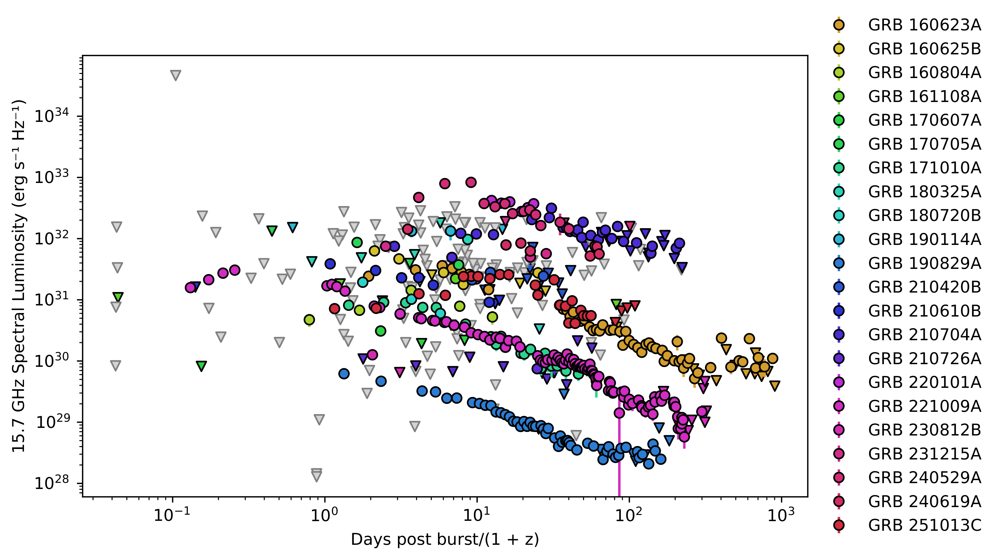
图注：The \(\textit{k}-corrected\) spectral luminosity light curves of the AMI-GRB-2 catalog events included 22 detected afterglows in the rest frame. The GRBs are color-coded for distinction, with their detections represented as dots and their 3$\sigma$ upper-limits represented as inverse triangles. The GRBs with a redshift measurement which were observed but non-detected by AMI are represented by gray triangles \(\citep{2017GCN.21987....1T,2019GCN.25252....1R,2018GCN.22996....1V,2019GCN.25565....1V,2021GCN.30271....1P,2021GCN.30692....1Z,2021GCN.30000....1M,2021GCN.30164....1Z,2021GCN.29684....1H,2021GCN.31107....1R,2021GCN.29853....1D,2021GCN.30182....1F,2021GCN.30545....1K,2021GCN.30436....1W,2022GCN.31423....1C,2022GCN.31800....1D,2022GCN.31423....1C,2022GCN.31453....1R,2022GCN.32648....1D,2022GCN.31359....1F,2023GCN.34409....1D,2023GCN.34485....1M,2023GCN.34485....1M,2023GCN.35373....1T,2024GCN.36498....1D,2024GCN.36574....1D,2024GCN.37469....1D,2024GCN.37129....1S,2024GCN.37467....1D,2025GCN.38759....1Z,2025GCN.42227....1M}\)
对应解读：建议重点查看的图表第6项、关键图表逐图导读图6，以及详细解读中“红移子样本的射电光度分布”段落。
入选理由：该图直接给出经K修正后的静止系射电谱光度光变曲线，包含有红移的探测余辉和非探测上限，最能支撑“射电光度跨度约五个数量级”这一核心结论，也能检查极亮/极暗端是否由少数事件主导。
来源与置信度：\(arxiv_source\)；high；\(arxiv_source\) / sample701.tex:figure[4]
Fig01
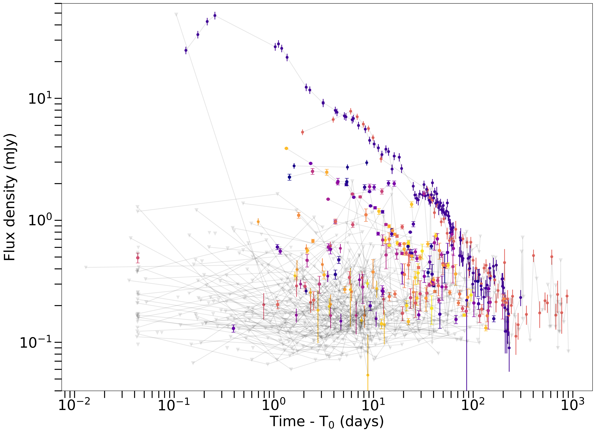
图注：A compilation of all the GRBs observed between January 2016 and January 2025 (i.e. AMI-GRB-2). The downwards facing triangles represent 3$\sigma$ upper limits and the lines connect individual events.
对应解读：建议重点查看的图表第2、3项，以及关键图表逐图导读图2、图3中关于探测点、上限和19个射电对应体光变汇总的讨论。
入选理由：该图汇总2016至2025年AMI-GRB-2全部观测，明确区分3σ上限并用连线连接单个事件，是理解1035次观测、探测与非探测、流量范围和多历元光变行为的总览图。
来源与置信度：\(arxiv_source\)；high；\(arxiv_source\) / sample701.tex:figure[1]
Fig03
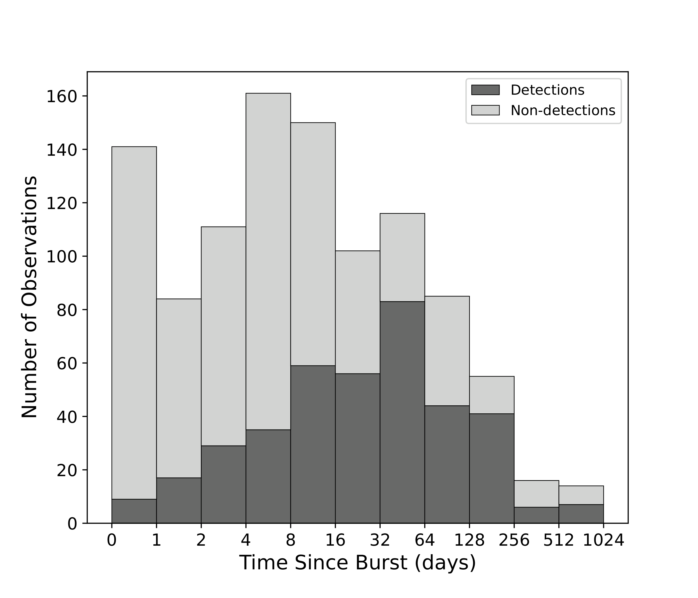
图注：A stacked histogram summarizing observing times elapsed since burst for the AMI-GRB-2 catalog. The light gray and dark gray bars, respectively, represent the non-detections and detections in the data.
对应解读：建议重点查看的图表第1项，以及关键图表逐图导读图1中关于爆发后观测时间分布和探测/非探测时间偏差的讨论。
入选理由：该堆叠直方图以爆发后经过时间为核心变量，并区分非探测和探测，最适合判断AMI-LA观测是否集中在特定时间窗，以及探测率是否受到观测时机选择效应影响。
来源与置信度：\(arxiv_source\)；high；\(arxiv_source\) / sample701.tex:figure[3]
Fig09
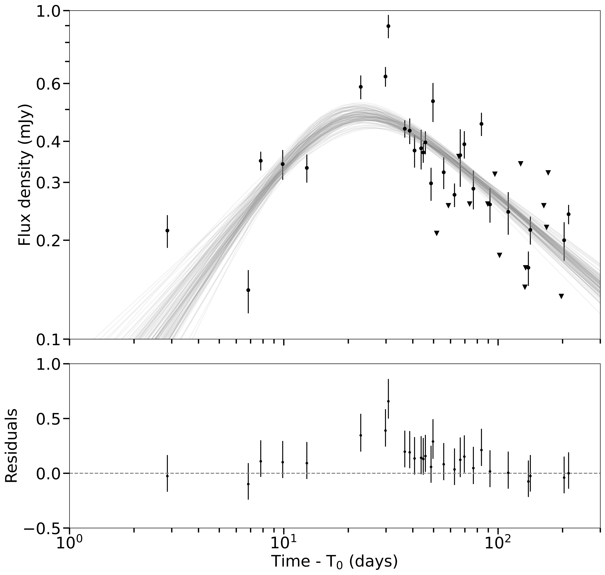
图注：The AMI--LA light curve for GRB 210704A. There are large, rapid fluctuations in the light curve over the duration of our observing campaign which we attribute to scintillation. Overlaid is are 100 instances of the posterior distributions from a broken power law fit applied to the detections only. At all times there is large scatter about the posterior distribution.
对应解读：建议重点查看的图表第5项、关键图表逐图导读图5，以及模型拟合段落中关于闪烁与残差时间相关性的讨论。
入选理由：该图展示GRB 210704A的AMI-LA射电光变中快速大幅起伏，并叠加破裂幂律后验样本；它直接对应作者将散布归因于星际闪烁的诊断，是检验“两个余辉显示闪烁并用于限制源大小”结论的关键图之一。
来源与置信度：\(arxiv_source\)；high；\(arxiv_source\) / sample701.tex:figure[9]
Fig05
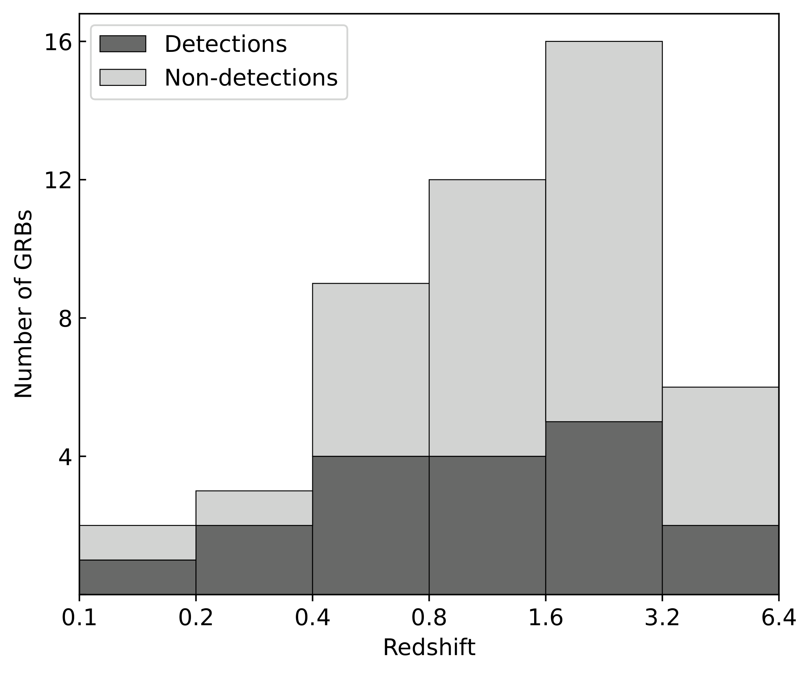
图注：A stacked histogram showing the redshift distribution of the 53 GRBs from AMI-GRB-2 with redshift measurements including 22 detections.
对应解读：建议重点查看的图表第6项，以及关键图表逐图导读图6中关于有红移子样本覆盖范围和选择效应的讨论。
入选理由：该图给出AMI-GRB-2中有红移测量GRB的红移分布，并区分探测样本，有助于判断光度分布是否受红移不完备、近距离偏置或少数高红移/低红移事件影响。
来源与置信度：\(arxiv_source\)；high；\(arxiv_source\) / sample701.tex:figure[5]
Fig10
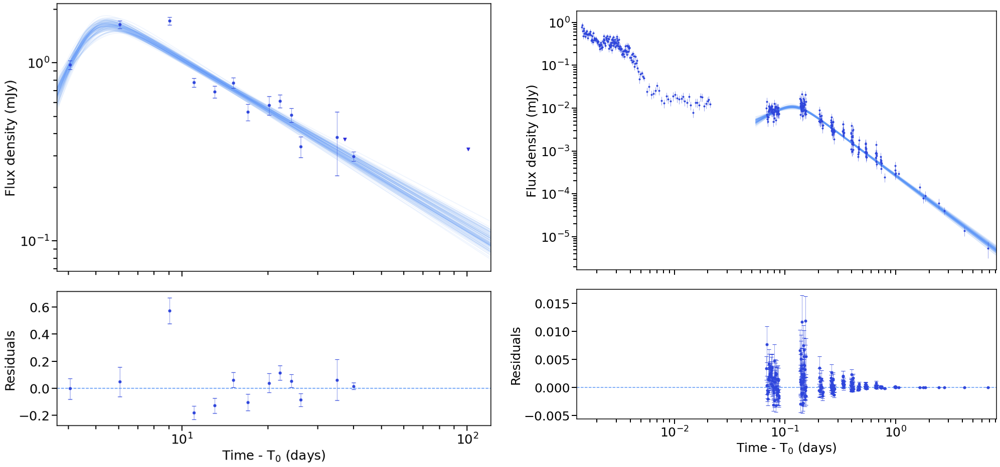
图注：The AMI--LA light curve and model fit for GRB 240529A.
对应解读：建议重点查看的图表第4项，以及模型拟合段落中关于个例射电光变拟合、前向/反向激波解释和早期射电超额的讨论。
入选理由：该图是GRB 240529A的AMI-LA射电光变及模型拟合，属于新分析个例中最直接展示射电数据与模型关系的候选图，可用于检查模型线是否真正由多历元射电点支撑。
来源与置信度：\(arxiv_source\)；high；\(arxiv_source\) / sample701.tex:figure[10]
强相关工作
这篇论文属于伽马暴射电余辉目录和人口统计研究，与早期 VLA 射电余辉样本、Swift 时代多波段余辉统计、以及单个明亮事件的详细建模互补。应检索关键词包括 “GRB radio afterglow catalog”, “AMI-LA gamma-ray burst afterglow”, “radio afterglow luminosity distribution”, “reverse shock radio GRB”, “interstellar scintillation GRB afterglow”。特别值得对照的是 Chandra 与 Frail 关于射电余辉样本的工作，以及 Sari、Piran、Narayan 和 Granot、Sari 的标准余辉谱理论。
在相反或张力方向上，需关注两类问题：一是反向激波是否普遍存在，还是只在早期射电采样足够密集、喷流磁化适中的事件中容易被看见；二是射电亮度分布宽是否反映真实物理参数离散，还是主要由观测时间、灵敏度和红移选择造成。相关检索关键词包括 “GRB reverse shock magnetization”, “radio dark gamma-ray bursts”, “GRB afterglow selection effects”, “censored luminosity function upper limits”。
同一事件 / 同类源线索：
相似工作：
基础理论 / 方法工作：
- https://arxiv.org/abs/astro-ph/9712005
- https://arxiv.org/abs/astro-ph/0108027
- https://arxiv.org/abs/astro-ph/9901234
相反观点 / 张力线索：
6. Observational Constraints on Horizonless Compact Objects from Thermal Emission in AGNs
- 来源：arXiv / astro-ph.HE
- 链接：https://arxiv.org/abs/2608.13645v1
- 作者：Ekin Oran, Avery Broderick, Kiana Salehi
- 评分：novelty 7/10，importance 8/10，relevance 8/10，final 8.70/10
- 推荐理由：利用BASS本地AGN样本对无视界致密天体的热光球辐射作群体约束，将M87/Sgr A式视界检验扩展到AGN群体；对黑洞/AGN高能天体物理有较高相关性和潜在重要性。
中文题目：用活动星系核热辐射约束无视界致密天体
做了什么：这篇文章把“黑洞是否真的有事件视界”这个通常在少数近邻源上讨论的问题，扩展到一个活动星系核总体样本。作者使用 Swift BAT AGN Spectroscopic Survey 第二版，即 BASS DR2 中的低红移亮 AGN，检验如果中央天体没有事件视界、而是有可吸收并再辐射吸积能量的物理表面或光球，那么它应当产生的热谱成分是否出现在观测中。结果是：在样本中没有发现这种预期的热光球特征；对相当一部分源，现有数据已经能排除这种热发射表面；对其余源，作者认为只需温和提升灵敏度和波段覆盖就能做出更强排除。这项工作的重要性在于，它把以往针对 Sgr A 和 M87 的视界尺度论证，转化为基于本地 AGN 群体的统计约束。
为什么重要：如果一个高吸积率超大质量致密天体没有事件视界，落入深势阱的能量不能像 Kerr 黑洞那样永久越过视界消失，而应在有限时间内堆积并从表面或光球以近热辐射形式释放。AGN 的吸积功率大、样本多、光谱资料相对成熟，因此它们提供了比单个银河系中心或 M87* 更具统计性的检验。该文的核心意义不是给出某个具体 exotic compact object 模型的细节参数，而是利用能量守恒和热再辐射这个相当普适的预言，测试一大类无视界替代物是否还能与真实 AGN 光谱共存。
理论 / 观测 / 仪器方法价值：对理论而言，本文把无视界模型的自由度压缩到一个很难逃避的可观测后果：吸积能量必须去哪里。对观测而言，它给出了一套可在大样本 AGN 光谱中寻找或排除冷/温热表面成分的方法。对方法而言，它强调了样本选择、宿主星系污染、尘埃消光、吸积盘连续谱、红外再处理和仪器波段覆盖在视界检验中的作用。它还为未来用更宽波段 UV/光学/IR 以及更好核区分辨率的观测来扩大“需要事件视界”的源数提供了路线图。
为什么应该关注：如果你关心强引力、黑洞替代理论、AGN 能量预算或多波段光谱建模，这篇文章值得看，因为它把一个经常停留在概念层面的判断变成了可批量执行的观测检验。它不依赖 EHT 级角分辨率，也不要求解析视界阴影，而是问一个更朴素的问题：吸积释放的能量若撞到表面，热光应该在哪里、为什么我们没看到。这个问题直接关系到“暗而紧致”是否足以冒充黑洞，还是必须有真正的事件视界。
展开详细解读：文章讲解、背景、理论、重点章节、图表与相关工作
文章详细讲解
科学问题：本文要检验的是一大类无视界致密天体在 AGN 环境中是否还能隐藏。若中央天体是 Kerr 黑洞，吸积物质穿过事件视界后，其剩余能量可以不再与外界通信；若它是裸奇点、黑洞模仿体或其他有物理表面的 exotic compact object，吸积物质最终会撞击某个表面或形成热化光球。只要吸积持续时间长于热化和扩散时间，表面应达到准稳态，并以近黑体或灰体形式释放吸积功率的一部分。本文正是利用这一点：不追问具体无视界模型的微观结构，而追问热再辐射这个宏观后果是否存在。
作者怎么做：他们从 BASS DR2 中挑选低红移、亮、具有较好光谱测量的 AGN 子样本。BASS 的优势在于硬 X 射线选择相对不易受中等吸收影响，并且有系统的光学/红外/高能配套数据。作者根据每个源的黑洞质量、吸积光度或相应代理量，估算如果中心天体存在表面，则应有的光球温度、峰值波段和总热光度。随后将这一预期谱成分与已有多波段光谱能量分布或可用光谱约束比较，寻找是否存在未被普通 AGN 组分解释的热峰，或反过来判断该热峰是否会超出观测上限。
关键结果：他们没有在样本中发现可归因于无视界表面/光球的热谱成分。更强的是，对显著一部分 AGN，预期热成分在观测波段内应足够明亮，因此非探测本身就能排除这类表面。对于没有被强排除的源，问题通常不是模型完全安全，而是光球峰值落在观测覆盖较差的波段，或被宿主星系、尘埃、传统吸积盘连续谱和核区光度不确定性掩盖。作者因此把源分成已可排除、接近可排除和需要额外数据的类别，用总体样本说明“没有视界但有表面”的情形并非容易藏在 AGN 光谱中。
局限和下一步：这类检验的系统误差主要来自黑洞质量估计、吸积功率推断、辐射效率假设、表面半径与引力红移、各向异性发射、尘埃吸收再辐射、AGN 本身的变光以及宿主星系污染。本文的结论对“吸积能量最终热化并在天文学短时间内释放”这一假设最敏感；如果某些模型能把能量长期储存、转入不可见粒子或以强非热各向异性方式释放，就需要单独讨论。下一步显然是扩展 UV 到中红外覆盖、改进核区光度分解、使用时域信息区分稳定表面热光和普通 AGN 变光，并把同样框架用于更多硬 X 射线选择或光学巡天 AGN 样本。
关键结果是怎么做出来的
本文最重要的证据链从样本选择开始。作者选用 BASS DR2，是因为它是本地宇宙亮 AGN 的硬 X 射线选样，红移大致限制在 \(z<0.1\)，相对减少了普通光学选样中由遮蔽和宿主星系选择效应带来的偏差。真正进入检验的应是具有可用黑洞质量、核区光度或吸积率估计、并且在预期热峰附近有足够光谱/光度约束的子样本。读者需要特别关注论文中样本裁剪表：哪些源因质量不确定、SED 覆盖不足、强吸收、强星暴或光谱分类问题被剔除，因为这些决定了“总体约束”能否代表本地 AGN 群体。
第二步是把每个 AGN 的吸积功率转化为无视界表面的预期热信号。通常逻辑是：用硬 X 射线或多波段 bolometric correction 得到 \(L_{\rm bol}\)，再假定其中某个数量级相当的功率最终被表面吸收并热化。给定中心质量 \(M\) 和表面半径 \(R\)，有效温度大致由 Stefan-Boltzmann 关系决定；质量越大、半径越接近引力半径，表面面积越大但引力红移也越重要，热峰可能落到近红外、光学或紫外。论文的关键图表应展示每个源的预期热峰相对观测 SED 或上限的位置。
第三步是排除判据。本文摘要说“在任何实例中都没有这样的谱特征，并且可在相当一部分目标中排除其存在”。这意味着作者并不只是做目视比较，而是至少构造了某种源级别的可检验条件：若模型预测的热通量 (F_{\
u,\
m surf}) 在某些频段超过观测核区通量、误差条或保守上限，则该源排除；若低于上限或位于未覆盖波段，则暂不排除。显著性或置信度很可能由光度误差、质量误差、bolometric correction 散布和测光误差传播得到。读者应检查论文中是否采用固定阈值、逐源置信区间，还是基于似然的模型比较。
第四步是图表支撑。最直接的证据应来自三类图：一是样本参数空间图，例如 \(M\)、\(L_{\rm bol}\)、Eddington 比和红移分布；二是预期表面热峰与观测波段覆盖的对照图；三是排除分数随灵敏度提升、波段扩展或表面参数变化的曲线。表格则应列出每个源的排除状态、主导约束波段和关键系统误差。若论文给出 population-level exclusion fraction，读者要看分母究竟是完整 BASS 低红移样本，还是满足所有质量和 SED 质量要求的清洁子样本。
第五步是系统误差与稳健性。质量估计误差会通过半径和温度影响热峰位置；bolometric correction 影响总热光度；尘埃消光和再辐射可能把 UV/光学热峰转移到 IR；宿主星系会抬高光学/近红外背景，使“额外热峰”更难辨认。稳健性检验应包括改变辐射效率、表面半径、热化效率、吸收修正、核区光度分解方法，以及只使用覆盖最好的子样本。本文的结论若在这些改变下仍能排除一批源，才构成强的总体证据。
展开背景、理论、公式、模型、章节和图表导读
背景知识
研究对象是 AGN 中心的超大质量致密天体。标准图像中，它们是 Kerr 黑洞，质量从 \(10^6\) 到 \(10^{10}M_\odot\) 不等，周围吸积盘、热冕、尘埃环和喷流共同形成从射电到硬 X 射线的复杂 SED。黑洞候选体之所以被称为黑洞，并不只是因为质量大、尺寸小，还因为在广义相对论中存在事件视界：一旦物质和辐射越过视界，外部观测者不能再接收其信号。
历史上，对事件视界的观测论证主要来自两个方向。一类是低光度源的能量预算，例如 Sgr A 这样吸积率很低但表面若存在应会积累并发光的系统；另一类是 EHT 对 M87 和 Sgr A* 的视界尺度成像，检验阴影大小、环结构和亮度分布是否与 Kerr 度规下的黑洞相符。不过，阴影或紧致性本身并不严格等同于事件视界；一些高度紧致的无视界对象也可能在几何外观上近似黑洞。因此，能量去向提供了互补约束。
无视界替代理论的范围很宽，包括有表面的黑洞模仿体、gravastar、boson star、wormhole、裸奇点以及量子引力启发的近视界结构。它们的共同困难是：如果吸积物质不能穿过真正视界消失，那么动能、势能和辐射能最终必须被处理。除非能量被极端长期储存或转入不可见通道，否则表面应发热并产生额外电磁辐射。这一论证相对模型无关，正是本文利用的地方。
为什么现在值得重新看？一方面，BASS DR2 提供了硬 X 射线选样的本地 AGN 大样本，拥有较好的光谱分类、黑洞质量和多波段信息；另一方面，多波段巡天和归档数据已经足以对许多源的核区 SED 给出有用上限。过去单源论证容易受到个别源环境、吸积状态和距离不确定性的限制；总体样本可以把问题转化为：在一批具有不同质量和光度的 AGN 中，是否有任何一个显示了预期热表面，或有多少个已经排除了它。
常见误区有三点。第一，“没有看到阴影以外的东西”不等于证明有事件视界，因为许多辐射转移效应会改变图像。第二，“AGN SED 很复杂”也不等于任何额外热成分都可任意隐藏；只要热光度接近吸积功率，在某些波段会超过可允许预算。第三，事件视界检验不能只看紧致性，还要看长期能量守恒和热平衡，这正是无视界表面最难逃避的约束。
基础理论 / 方法脉络
基本物理图像是吸积能量释放。气体从大半径落入中心势阱，在盘内通过粘滞、磁湍流和辐射过程释放引力束缚能。对黑洞，内盘以内的物质可穿过事件视界；对有表面的致密天体，物质最终撞到表面，残余能量要热化。若表面半径接近 \(R\sim r_g=GM/c^2\)，局域释放能量很大，但远处观测到的光度和温度会受引力红移修正。
本文关心的关键量包括中心质量 \(M\)、吸积光度 \(L_{\rm bol}\)、Eddington 比 \(\lambda_{\rm Edd}=L_{\rm bol}/L_{\rm Edd}\)、表面半径 \(R\)、热化效率 \(\eta_{\rm th}\)、有效温度 \(T_{\rm eff}\) 和观测到的比通量 \(F_\nu\)。如果 \(L_{\rm bol}\) 可由硬 X 射线光度加 bolometric correction 估计，则无视界模型的预测可以写成一个额外热组件，叠加在普通 AGN 盘、尘埃和宿主星系光上。
观测方法的核心不是解析中心表面，而是在 SED 中找能量预算不允许缺席的热峰。热表面的谱形可近似为黑体或灰体，峰值频率由 \(T_{\rm eff}\) 决定，总归一化由表面积和热光度决定。对于超大质量对象，温度可落在 UV、光学、近红外或中红外，取决于 \(M\)、\(L_{\rm bol}\)、\(R\) 和红移修正。因此，波段覆盖本身就是选择函数：没有覆盖热峰的源只能给弱约束。
常见退化包括：较低 \(\eta_{\rm th}\) 与较弱表面光度退化；更大 \(R\) 与更低温度退化；尘埃消光与 UV/光学热峰退化；宿主星系星光与近红外/光学弱热峰退化；bolometric correction 与吸积功率退化。还有方向性问题：AGN 盘和尘埃环高度非球对称，而表面热辐射常被近似为各向同性或弱各向异性，若实际辐射被遮挡或再处理，排除强度会改变。
统计上，最保守的检验是上限检验：模型预测的 (F_{\
u,\
m surf}) 不应超过观测允许的核区通量。更完整的做法是把普通 AGN SED 模型和额外表面组件一起拟合，用似然或信息准则比较“有表面”和“无表面”模型。本文摘要强调没有发现谱特征并排除一部分源，说明它至少采用了逐源的可探测性/可排除性诊断，而不只是展示平均 SED。
公式与推导
第一步从吸积能量预算出发。远处观测到的总吸积光度可写为
其中 \(\dot{M}\) 是质量吸积率，\(c\) 是光速，\(\eta_{\rm acc}\) 是相对于静质量能的辐射效率。对 Kerr 黑洞，\(\eta_{\rm acc}\) 主要由内稳定圆轨道决定；对无视界对象，穿过内盘后的剩余能量还可能在表面释放。
第二步定义 Eddington 标度，便于比较不同质量 AGN：
这里 \(G\) 是引力常数，\(m_p\) 是质子质量，\(\sigma_T\) 是 Thomson 截面，\(\lambda_{\rm Edd}\) 表示吸积强度。本文使用本地 AGN 的 \(M\) 和 \(L_{\rm bol}\) 来估计无视界热光球应有多亮。
第三步把一部分吸积功率分配给表面热化：
其中 \(\eta_{\rm th}\) 是热化并以电磁热辐射释放的比例。若无视界对象要逃过约束，通常需要很小的 \(\eta_{\rm th}\)、很强的遮蔽，或很长的能量储存时间。
第四步由 Stefan-Boltzmann 定律估计有效温度：
其中 \(R\) 是表面或光球半径，\(\sigma_{\rm SB}\) 是 Stefan-Boltzmann 常数，\(T_{\rm loc}\) 是局域温度。该式假设表面近似球对称、热化充分、谱形接近黑体；若为灰体，可在右边乘以频率相关发射率或有效面积因子。
第五步考虑紧致表面的引力红移。若用 Schwarzschild 近似，红移因子可写为
这里 \(g\) 把局域频率移到无穷远处；光度有能量红移和到达率变慢两个因子。旋转和非球对称会改变具体形式，但这个阶梯说明了近视界表面为何可能更冷、更暗。
第六步给出观测比通量。对近黑体表面，远处观测频率 \(\nu_{\rm obs}\) 处有
其中 \(z\) 是宇宙学红移，\(D_L\) 是光度距离，\(L_{\nu_{\rm em}}\) 是源静止系谱光度。低红移 BASS 源的 \(D_L\) 相对可靠，使得模型通量可直接与测光点或光谱上限比较。
第七步写出黑体谱光度的常用近似：
这里 \(h\) 是 Planck 常数，\(k_B\) 是 Boltzmann 常数，\(R_\infty\) 是包含红移和透镜修正后的等效辐射半径。该式决定热峰位置和形状，是寻找额外谱成分的直接理论输入。
第八步给出最简单的排除统计量。若某频段观测核区通量为 \(F_{\}\)
u,i}^{\(\rm\) obs})，误差为 \(\sigma_i\)，普通 AGN 模型为 (F_{\
u,i}^{\(\rm\) AGN}(\theta))，表面模型为 (F_{\
u,i}^{\(\rm\) surf}(\phi))，则
若加入表面组件后无法避免系统性超出观测点或上限，则相应参数 \(\phi\) 被排除。
第九步用似然比表达模型比较：
其中 \(\mathcal{L}_{\rm no\\ surface}\) 是普通黑洞 AGN SED 模型似然，\(\mathcal{L}_{\rm surface}\) 是包含无视界热表面的模型似然。若 \(\Delta\ln\mathcal{L}\) 足够大，数据偏好没有表面；若只是缺乏覆盖，则 \(\Delta\ln\mathcal{L}\) 不大，但未来观测可提升区分度。
模型拟合 / 应用方法
这类工作的拟合对象通常是多波段 SED 或若干关键波段的核区通量/上限。基础模型包括普通 AGN 连续谱，例如吸积盘蓝光/UV、X 射线热冕、尘埃环红外再辐射和宿主星系星光。无视界模型则额外加入一个由 \(M\)、\(L_{\rm bol}\)、\(R\)、\(\eta_{\rm th}\) 和红移因子决定的热表面组件。拟合的关键不是让这个组件改善数据，而是检验它是否会不可避免地超过数据允许范围。
参数估计可采取两种路线。保守路线是逐源上限法：对每个源，在预期热峰附近找最严格的观测约束，传播 \(M\)、\(L_{\rm bol}\)、距离、消光和 bolometric correction 的误差，判断模型预测是否高于某个置信上限。更完整路线是贝叶斯或最大似然 SED 拟合，对普通 AGN 参数 \(\theta\) 和表面参数 \(\phi\) 同时采样，计算后验中被允许的 \(\eta_{\rm th}\) 或 \(R\) 范围。本文摘要措辞更接近前者与可探测性分类的组合。
残差诊断很重要。若热表面存在，它通常不是窄线，而是宽热峰；因此不能只看某一个测光点，而要看连续多个波段是否出现宽带上凸。反过来，若模型热峰位于宿主星系主导的近红外或尘埃主导的中红外，残差可能被模板不确定性吞没。读者应检查论文如何处理非同时观测导致的 AGN 变光、不同孔径造成的宿主混入，以及类型 1/类型 2 AGN 的遮蔽差异。
主要退化包括 \(M\) 与 \(T_{\rm eff}\) 的退化、\(R\) 与峰值波段的退化、\(\eta_{\rm th}\) 与总归一化的退化、尘埃消光与 UV 缺失的退化、以及 bolometric correction 与 \(L_{\rm surf}\) 的退化。如果允许表面极端接近视界，红移可降低远处光度并移动峰值；但越接近视界，模型也越需要解释表面如何稳定存在、如何避免长期能量积累。若允许能量进入不可见通道，则本文这类电磁约束会变成对 \(\eta_{\rm th}\) 的上限，而不是完全排除所有无视界模型。
实际应用场景是给每个 AGN 一个“可否排除表面”的标签，并寻找最有效的后续观测。若某源预测热峰落在未观测 UV，补 UV 就最有价值；若落在近红外但宿主污染强，需要高空间分辨率；若落在中红外，则 JWST 或高质量 IR SED 分解更关键。总体样本拟合还能估计未来灵敏度提升一倍、十倍或增加某一波段后，排除源数如何增长。
重点章节 / 结果段落怎么读
-
引言和物理动机：读者应先看作者如何界定“无视界致密天体”和“热辐射光球”。重点不是具体 exotic compact object 名称，而是吸积能量不能穿过视界后必须热化再辐射的通用论证。这里还会说明与 Sgr A、M87 单源视界检验的关系。
-
BASS DR2 样本和数据选择：这一节决定结论的适用范围。应查看红移、AGN 类型、硬 X 射线选样、黑洞质量来源、bolometric luminosity 估计和剔除条件。尤其要看最终子样本大小、哪些源有足够波段覆盖，以及样本是否偏向高光度、低遮蔽或类型 1 AGN。
-
无视界表面热发射模型：这一节是理论到观测的桥。应关注作者如何设定表面半径、热化效率、引力红移、谱形和辐射各向同性，如何从 \(M\) 与 \(L_{\rm bol}\) 计算 \(T_{\rm eff}\) 和 \(F_\nu\)。如果有 fiducial model 与参数扫描，要先读 fiducial，再看参数变化。
-
逐源约束和总体排除结果：这是论文核心。应看哪些源已经排除、排除依据来自哪个波段、排除强度如何定义，以及非排除源为何暂时不能排除。图中的模型热峰与观测 SED 上限关系，比文字结论更重要。
-
系统误差、稳健性和未来观测：最后应看作者如何处理黑洞质量、消光、宿主星系、尘埃、bolometric correction 和变光。未来策略部分通常能反推出当前约束的短板：是缺 UV、缺 IR、缺核区分辨率，还是缺同步多波段数据。
建议重点查看的图表
-
样本参数分布图：检查 \(M\)、\(L_{\rm bol}\)、\(\lambda_{\rm Edd}\)、红移和 AGN 类型分布。关键是最终可检验子样本是否覆盖足够宽的质量和光度范围。
-
典型源 SED 对比图：看观测测光/光谱点、普通 AGN 模型、无视界热表面模型三者的相对位置。特别关注热峰是否宽而明显、是否被宿主或尘埃模板吸收。
-
逐源排除状态表或图：检查每个源被标为排除、未排除或边界的标准。需要看主导约束波段和置信阈值，而不只看总排除比例。
-
热峰波长或温度分布图：看预期峰值落在 UV、光学、近红外还是中红外。这个图直接告诉读者未来观测应补哪个波段。
-
排除分数随灵敏度/波段覆盖变化的曲线：检查所谓“温和提升观测能力即可排除更多源”的量化依据。看曲线是否由少数边界源驱动。
-
系统误差或参数扫描图：看改变 \(\eta_{\rm th}\)、\(R\)、质量误差、消光或 bolometric correction 后排除结果是否稳定。若结论只在单一 fiducial 参数下成立，需要更谨慎。
-
残差或上限诊断：若有拟合残差图，重点看热表面模型是否在多个相邻波段系统性超出，而不是仅由一个异常点排除。
关键图表逐图导读
图 1：通常应是样本或参数空间图。横轴可能是 \(M\) 或 \(L_{\rm bol}\)，纵轴可能是 \(\lambda_{\rm Edd}\)、红移或预期热峰波长。数据点代表 BASS AGN，颜色可表示排除状态或 AGN 类型。读图时不要只看点数，要看被排除源是否集中在高光度、高质量或低遮蔽区域；若是，结论更像对某类 AGN 最强，而非均匀适用于所有本地 AGN。
图 2：典型 SED 图应展示观测通量随频率或波长变化，常见坐标是 \(\nu F_\nu\) 对 \(\nu\) 或 \(\lambda L_\lambda\) 对 \(\lambda\)。普通 AGN/宿主模型可能用实线，表面热发射用虚线或彩色曲线。关键结论是无视界热峰是否会明显高于观测点或上限。读图陷阱是不同波段数据可能非同时、孔径不同，光学/IR 点可能不是纯核区光。
图 3：排除状态或约束强度图可能以每个源为一行，显示预测热通量与观测上限的比值。若纵轴是 \(F_{\rm pred}/F_{\rm lim}\)，大于 \(1\) 的源可被排除。读者应看误差条是否跨过 \(1\)，以及排序后是否只有少数源强排除、多数源边界。若论文给出置信区间，应检查其是否包含质量和 bolometric correction 散布。
图 4：参数扫描图可能展示排除分数随 \(\eta_{\rm th}\)、\(R/r_g\) 或红移因子的变化。横轴若是热化效率，曲线下降说明只有当表面把很少能量变成电磁热光时才能逃避；横轴若是表面半径，则峰值移动和光度变化共同影响排除。读图时要区分“模型参数被排除”和“所有无视界模型被排除”，后者通常需要额外假设。
图 5：未来观测预测图可能展示灵敏度提升或增加 UV/IR 覆盖后可排除源数。坐标轴可能是通量深度、波长范围或源数比例。主要结论是当前未排除源中有多少只是因为数据不够。读图陷阱是这些预测通常假设系统误差不随灵敏度下降而成为主导；实际中宿主分解和消光可能比 photon noise 更限制结果。
论文原图 / 可嵌入图片
（未提供 verified figure；为避免编造图片链接，本节只在能确认官方图片 URL 或成功提取论文原图时嵌入图片。）
强相关工作
这篇工作与 Sgr A 和 M87 的事件视界论证属于同一大问题，但观测策略不同。Sgr A 的经典论证常利用低辐射效率吸积流和近红外上限：如果有表面，长期吸积能量应在红外发出；M87 则结合 EHT 视界尺度图像和喷流/吸积模型，检验紧致性与暗中央区域。本文把这种思路推广到 BASS AGN 群体，关键词可检索 “event horizon test surface emission Sgr A*”, “M87 event horizon alternatives thermal surface”, “black hole mimickers accretion surface luminosity”。
它也与 exotic compact objects 的理论文献相关，但本文约束的是一类共同现象，而非某个具体模型。类似 gravastar、boson star、wormhole 或近视界量子结构模型常试图在外部度规上接近 Kerr，从而躲过轨道动力学和阴影大小约束；然而一旦允许普通重子物质吸积，能量热化问题就很难绕开。相反观点通常会强调能量可被强红移压低、被喷流带走、被尘埃遮蔽、以非电磁通道释放或在超长时间尺度储存。检索关键词可用 “horizonless compact objects accretion constraints”, “black hole mimickers photosphere thermal emission”, “AGN SED event horizon test”, “BASS DR2 AGN bolometric luminosity”。
同一事件 / 同类源线索：
相似工作：
基础理论 / 方法工作：
相反观点 / 张力线索：
（未提供）
7. Blazar Boosted Dark Matter in IceCube
- 来源：arXiv / astro-ph.HE
- 链接：https://arxiv.org/abs/2608.14549v1
- 作者：Alberto M. Gago, Jaime Hoefken Zink, Joel Jones-Pérez, Gabriel D. Zapata
- 评分：novelty 8/10，importance 7/10，relevance 8/10，final 8.65/10
- 推荐理由：IceCube sensitivity to blazar-boosted sub-GeV dark matter connects blazars, high-energy astroparticle data, and beyond-standard-model constraints. The astrophysical-source context and use of IceCube make it relevant, though the main impact is more particle-phenomenology than gamma-ray astronomy.
中文题目：IceCube 中的耀变体加速暗物质
做了什么：这篇文章研究一种低质量暗物质探测思路：耀变体喷流中的高能质子与超大质量黑洞周围暗物质尖峰相互作用，把原本非相对论的亚 GeV 暗物质粒子加速到可在 IceCube 中产生可见核子散射信号的能区。作者选取 324 个耀变体，用多波段观测推断的质子谱计算弥散耀变体加速暗物质通量，并在暗物质与核子散射截面中同时纳入弹性散射、共振单 pion 产生和深度非弹性散射，再结合暗物质穿过地球时的衰减来估计 IceCube 事件率。核心结论是：在暗物质质量低于约 \(1\,\mathrm{GeV}\) 时，IceCube 对部分参数空间的约束可超过传统地下直接探测；信号主要由深度非弹性散射贡献，因此相对更偏好较重媒介子；共振单 pion 通道本身不是主导项，但会在阈值附近把总事件率降低到最高约 \(9\%\)，说明中间能区的强子物理处理不能随便忽略。
为什么重要：亚 GeV 暗物质是传统核反冲直接探测最困难的区域之一，因为本征银河系暗物质速度太低，沉积能量通常低于阈值。耀变体加速暗物质机制把这个问题转化为高能天体物理束流问题：如果活动星系核喷流中确有足够强的强子成分，暗物质可被散射到高能，并在大型中微子望远镜中留下类中微子强相互作用事件。本文的重要性在于把源端耀变体样本、暗物质尖峰、传播衰减、强子散射分区和 IceCube 数据约束放进一个相对完整的计算链条，而不是只做量级估算。
理论 / 观测 / 仪器方法价值：对理论而言，本文给出费米子暗物质加 massive vector mediator 耦合夸克模型在高能散射区的可检验约束，并强调从弹性区到深度非弹性区之间的共振单 pion 过程会改变事件率。对观测而言，它把 IceCube 中已有的高能事件数据重新解释为亚 GeV 暗物质探针，展示了中微子望远镜在传统直接探测盲区的互补性。对方法而言，文章的价值在于把多波段耀变体推断出的质子谱、324 个源的弥散叠加、地球衰减和分能区核子散射截面统一到同一套事件率预测中。
为什么应该关注：如果你关心低质量暗物质，这篇文章值得看，因为它说明 IceCube 这样的千兆吨级探测器不只是中微子仪器，也可在特定天体加速场景下成为亚 GeV 暗物质实验。如果你关心耀变体高能强子成分，它也提供了一个反向约束：暗物质信号预测高度依赖喷流质子谱和黑洞周围暗物质分布。即使你不接受暗物质尖峰的具体假设，文中对 \(\mathrm{DM}\)-核子高能散射和地球衰减的处理仍是评估类似 boosted dark matter 方案时必须面对的技术细节。
展开详细解读：文章讲解、背景、理论、重点章节、图表与相关工作
文章详细讲解
科学问题：传统地下直接探测对 \(m_\chi\lesssim 1\,\mathrm{GeV}\) 的暗物质非常不友好，因为银河系晕暗物质速度只有 \(v\sim 10^{-3}c\)，核反冲能量随 \(m_\chi^2\) 快速下降。boosted dark matter 的基本想法是让某个高能天体粒子群先把暗物质加速，再让被加速的暗物质进入大型探测器。本文聚焦耀变体：其喷流近似沿视线方向，可能含有高能质子；中心超大质量黑洞附近可能存在暗物质密度增强的尖峰。这两个条件叠加后，可以产生从许多耀变体来的弥散加速暗物质通量。
作者怎么做：文章采用一个费米子暗物质模型，暗物质 \(\chi\) 通过 massive vector mediator \(V\) 与夸克相互作用。源端方面，作者使用 324 个耀变体的样本，并采用由多波段观测推断的质子谱，而不是假定所有源有同一个任意归一化的宇宙线谱。暗物质分布方面，作者在超大质量黑洞周围采用保守的 spike profile。传播和探测方面，作者计算暗物质到达 IceCube 前穿过地球时的衰减，并把 IceCube 中由暗物质-核子散射产生的事件率与已有中微子数据比较，从而给出模型参数约束。
关键结果：在所考察的参数空间内，IceCube 对 \(m_\chi\lesssim 1\,\mathrm{GeV}\) 的约束可以超过传统直接探测实验。这不是因为 IceCube 的单事例阈值天然更低，而是因为耀变体加速机制把 \(\chi\) 的能量推到足以产生可见强相互作用事件的范围。文章还发现总信号主要由深度非弹性散射贡献，因此对较重的媒介子质量更敏感；这点和只考虑低能弹性核反冲的直觉不同。共振单 pion 产生通道位于弹性和深度非弹性之间，虽然不是主导贡献，却在实验阈值附近可使事件率降低最高约 \(9\%\)，说明若忽略共振区会对阈值附近约束产生系统偏差。
局限和下一步：最大的天体物理不确定性来自耀变体喷流中的质子含量、质子最大能量、源的演化以及超大质量黑洞附近暗物质尖峰能否长期存活。若黑洞并非绝热增长、经历过并合或强烈反馈，尖峰密度会被削弱，通量随之下降。粒子物理方面，vector mediator 与夸克的耦合还会受到实验室实验、宇宙学和间接探测约束，需要在全局参数空间中联合比较。下一步值得做的是：用 IceCube 方向和能量信息进行专门似然分析，而不只是重解释现有中微子数据；加入不同耀变体子类和时变 flare；并把 IceCube-Gen2、KM3NeT、Baikal-GVD 等探测器的灵敏度纳入同一框架。
关键结果是怎么做出来的
本文的证据链从样本构建开始。作者不是选取一个代表性耀变体做标度估算，而是使用 324 个耀变体样本，并为每个源采用由多波段观测约束的质子谱。关键在于，耀变体加速暗物质通量近似由源内高能质子数密度、暗物质尖峰密度和 \(p\chi\) 散射截面共同决定，因此单个极亮源和大量中等亮度源都可能影响总弥散通量。读者应特别注意样本是否按红移、光度、谱型或观测完备性筛选，以及作者是否对缺失源或未解析源群作额外外推。
事件率计算的核心是把源端产生的 \(\chi\) 能谱传播到地球，再乘以 IceCube 有效靶质量、核子数、能量阈值和暗物质-核子相互作用概率。文章特别强调地球衰减：当 \(\chi\)-核子截面变大时，探测器内相互作用概率上升，但穿越地球时被吸收或降能的概率也上升，这会造成事件率对截面的非线性依赖。约束曲线通常不应被理解为简单的 \(N_\mathrm{sig}\propto \sigma^2\) 或 \(N_\mathrm{sig}\propto \sigma\) 标度，而要看源端产生、地球传输和探测端相互作用三者的竞争。
统计比较方面，作者使用 IceCube neutrino data 推导排除区域。虽然摘要未给出具体观测事件数和 test statistic 数值，读者在正文中应检查作者采用的是 binned 还是 unbinned likelihood，背景是否取自大气中微子、大气 muon 和天体中微子通量模型，以及置信区间是否通过 profile likelihood、Poisson 上限或其他近似得到。最关键的表或图应包括：模型参数平面上的 IceCube 排除线、事件率随 \(m_\chi\) 和 \(m_V\) 的变化、不同散射通道对总事件数的分解，以及考虑或不考虑地球衰减时的差异。
强子散射处理是本文最具体的技术结果之一。作者把 \(\chi N\) 散射分为弹性、共振单 pion 产生和深度非弹性散射三个区域，并强调共振单 pion 过程用于平滑连接弹性和深度非弹性区域。结论是总信号由深度非弹性散射主导，这使约束对较重媒介子更敏感；共振过程在阈值附近带来最高约 \(9\%\) 的事件率降低。读者应检查对应图中不同通道曲线是否在不变质量 \(W\) 或四动量转移 \(Q^2\) 的边界处连续，以及是否存在双计数或遗漏中间区的风险。
系统误差方面，最重要的不是 IceCube 有效面积的小修正，而是源端强子物理和暗物质尖峰。若质子谱归一化降低、最大能量下降、喷流中强子成分弱于假设，通量会整体下移；若 spike profile 被动力学过程破坏，约束会显著变弱。稳健性检验应包括不同 spike 斜率、不同耀变体质子谱、不同地球入射方向衰减、不同能量阈值和不同背景归一化。本文的主要结论在这些变化下是否仍能保持 \(m_\chi\lesssim 1\,\mathrm{GeV}\) 区域优于传统直接探测，是判断其说服力的关键。
展开背景、理论、公式、模型、章节和图表导读
背景知识
研究对象是 blazar boosted dark matter，即耀变体加速暗物质。耀变体是活动星系核的一类，喷流接近指向地球，因此电磁辐射被相对论多普勒增强。若喷流内存在高能质子，这些质子可与中心黑洞附近或宿主星系核区的暗物质粒子散射，把一部分暗物质加速到相对论能量。与太阳、银河宇宙线或超新星遗迹加速暗物质相比，耀变体有两个特殊优势：高能质子谱可能很硬且能量上限高，中心区域暗物质密度可能因黑洞增长形成尖峰。
历史问题来自低质量暗物质直接探测的阈值困境。常规地下实验测量的是暗物质与原子核或电子的低能反冲。对于 \(m_\chi\) 低于 \(1\,\mathrm{GeV}\) 的粒子，若只具有银河晕速度，核反冲能量往往低于实验阈值，即使截面不小也难以看见。boosted dark matter 通过引入一个外部加速源绕过这个限制，因此 IceCube、Super-Kamiokande、DUNE、XENONnT 等不同类型实验都可被重新用于寻找轻暗物质。
观测背景则与 IceCube 的高能事件样本有关。IceCube 主要为 TeV-PeV 中微子天文学而建，探测的是冰中 Cherenkov 光，由带电二次粒子产生。若相对论暗物质在冰中与核子发生强相互作用，也可能产生 hadronic shower 或 track-like 拓扑，从而在某些分析中表现为类似中微子事件的额外贡献。本文利用这种类比，把 IceCube 中未被背景解释的可允许事件数转化为暗物质模型参数约束。
为什么现在值得重新看：一方面，多波段耀变体观测和高能中微子天文学的发展使喷流强子成分问题更具体，尤其 IceCube 对某些 blazar flare 的关注促使人们认真讨论 AGN 是否能加速 hadron。另一方面，低质量暗物质实验室搜索正在快速推进，但不同探测技术之间的系统误差和阈值差异很大。利用天体加速源和大型中微子探测器提供了完全不同的系统误差结构，可以作为互补检验。
该领域常见误区有三个。第一，不应把 boosted dark matter 通量只看成暗物质截面的单调函数，因为截面同时控制源端产生、地球吸收和探测器相互作用。第二，耀变体电磁亮并不自动等于质子亮，leptonic 与 hadronic 辐射模型的退化会直接进入暗物质通量不确定性。第三，黑洞周围 spike profile 不是普适事实，而是依赖黑洞增长历史、恒星散射、并合和暗物质自湮灭或自相互作用的模型假设。
基础理论 / 方法脉络
基本物理图像可以分成三步。第一步是源端加速：高能质子 \(p\) 与静止或低速暗物质 \(\chi\) 散射，把一部分质子动能转移给 \(\chi\)。第二步是传播：被加速的 \(\chi\) 从耀变体到达地球，宇宙空间中基本不被电磁场偏转，但在穿过地球时可能与岩石或冰中的核子发生散射而衰减。第三步是探测：剩余 \(\chi\) 在 IceCube 有效体积内与核子散射，产生可见 shower 或其他能量沉积。
本文的粒子模型是假设 \(\chi\) 是费米子，通过质量为 \(m_V\) 的矢量媒介子 \(V\) 与夸克耦合。这样的模型在低能极限下可表现为暗物质-核子有效相互作用，在高能区则必须考虑传播子结构和 parton distribution functions。参数通常包括暗物质质量 \(m_\chi\)、媒介子质量 \(m_V\)、暗物质-媒介子耦合 \(g_\chi\)、夸克-媒介子耦合 \(g_q\)，或等效的暗物质-核子散射截面 \(\sigma_{\chi N}\)。
散射动力学不能只用一个常数截面描述。低能时可用弹性散射；中间能量会激发重子共振并产生单个 pion；更高能时进入深度非弹性散射，\(\chi\) 实际上与核子内部 parton 相互作用。本文的一个方法重点就是显式加入 resonant single-pion production，使弹性和深度非弹性之间的过渡更平滑。这对 IceCube 阈值附近尤其重要，因为探测可见能量、入射 \(\chi\) 能量和强子末态之间并非一一对应。
观测和统计逻辑是把理论事件数与 IceCube 数据比较。事件数由入射通量、地球生存概率、探测器有效面积或有效体积、散射截面、曝光时间和选择效率共同决定。若预测事件数超过 IceCube 数据在相应能区和拓扑下允许的额外贡献，就可排除相应参数。这里的常见退化包括：较大 \(\sigma_{\chi N}\) 增强探测概率但也增强地球吸收；较大 \(m_V\) 改变高能传播子的 \(Q^2\) 依赖；较硬的质子谱可模拟更强的粒子物理耦合。
主要系统误差也有明确来源。源端有耀变体质子谱、喷流多普勒因子、最大加速能、源距离和未解析源贡献；暗物质分布有 spike 斜率和归一化；传播端有地球密度剖面和能量损失；探测端有 IceCube 有效面积、能量重建和背景模型。这些误差并非都能用一个全局归一化吸收，尤其当它们改变能谱形状或入射方向分布时，会影响约束曲线的形状。
公式与推导
第一步，从源端的散射产生率出发。若耀变体中质子微分通量或数密度为 \(\Phi_p(E_p)\)，暗物质数密度为 \(n_\chi(r)=\rho_\chi(r)/m_\chi\)，则单位体积单位时间的加速暗物质产生率可写成示意形式
这里 \(E_p\) 是入射质子能量，\(E_\chi\) 是出射暗物质能量，\(d\sigma_{p\chi\to p\chi}/dE_\chi\) 决定能量转移概率。该式说明源端通量同时依赖天体质子谱、暗物质密度和粒子相互作用。
第二步，黑洞附近的暗物质尖峰常用幂律近似描述：
其中 \(\rho_0\) 和 \(r_0\) 是归一化尺度，\(\gamma_\mathrm{sp}\) 是 spike 斜率，\(r_\mathrm{min}\) 与 \(r_\mathrm{sp}\) 是内外边界。源的总产生光度近似与 \(\int 4\pi r^2 n_\chi(r)dr\) 加权后的散射率有关，因此对 \(\gamma_\mathrm{sp}\) 和内边界非常敏感。
第三步，把单源产生率转换为地球处通量。对位于光度距离 \(d_L\) 的第 \(i\) 个耀变体，忽略宇宙学细节时可写成
324 个源的弥散贡献为
这两式让读者检查总通量是否由少数近邻亮源主导，还是由大样本叠加主导。
第四步，vector mediator 给出的 parton 级振幅具有传播子抑制。示意地，若四动量转移为 \(Q^2\)，则矩阵元标度可写成
这里 \(g_\chi\) 和 \(g_q\) 分别是暗物质与夸克耦合，\(s\) 是 Mandelstam 不变量，\(\mathcal{K}\) 包含自旋和运动学因子。该式解释了为什么媒介子质量 \(m_V\) 会改变高能深度非弹性散射贡献。
第五步，深度非弹性区的核子截面需要对 parton 分布求和：
其中 \(x\) 是 Bjorken 变量，\(f_q(x,Q^2)\) 是夸克 parton distribution function，\(d\hat{\sigma}_{\chi q}/dQ^2\) 是 parton 级截面。本文发现事件率主要由该项主导，因此 PDF、\(Q^2\) 选择和 DIS 阈值处理会直接影响约束。
第六步，中间共振区可用不变质量 \(W\) 区分：
其中 \(m_N\) 是核子质量，\(\nu\) 是传给强子系统的能量。弹性区对应 \(W\simeq m_N\)，单 pion 共振区对应 \(W\) 接近 \(\Delta\) 等重子共振，DIS 区通常要求 \(W\) 足够大。引入该变量可避免在弹性和 DIS 之间硬切换。
第七步，穿过地球的生存概率可近似写成指数衰减：
这里 \(\theta_z\) 是天顶角，\(n_N\) 是地球物质中的核子数密度。该式说明当 \(\sigma_{\chi N}\) 增大时，探测率未必无限增加，因为进入探测器前的通量会被削弱。
第八步，IceCube 预期信号事件数可写为
其中 \(T\) 是曝光时间，\(A_\mathrm{eff}\) 是包含相互作用概率、有效体积和选择效率的有效面积。若用体积形式，也可将 \(A_\mathrm{eff}\) 分解为靶核子数、\(\sigma_{\chi N}\) 和重建效率。
第九步，参数约束通常来自 Poisson 或 binned likelihood。对第 \(k\) 个能量或拓扑 bin，可写成
这里 \(n_k\) 是观测数，\(b_k\) 是背景，\(s_k\) 是由模型参数 \(\boldsymbol{\theta}=(m_\chi,m_V,g_\chi,g_q,\ldots)\) 预测的信号。排除线可由
或相应上限准则得到。读者可用这组公式检查文章中 IceCube 约束如何从通量预测转化为参数空间排除。
模型拟合 / 应用方法
本文的拟合或约束对象主要是费米子暗物质与 vector mediator 模型参数。实际展示通常会投影到 \((m_\chi,\sigma_{\chi N})\)、\((m_\chi,m_V)\) 或耦合组合平面上。由于源端产生和探测端相互作用都依赖同一粒子物理耦合，信号对截面常呈非线性关系；再加上地球衰减，简单把事件数按截面平方缩放会失效。
似然构建需要把 IceCube 观测数据拆成与暗物质信号可比的量：能量沉积、方向、事件拓扑或综合有效面积。若作者采用保守上限，通常会要求暗物质贡献不超过某个能区允许的额外事件数；若采用更完整似然，则需同时拟合大气中微子、大气 muon、各向同性天体中微子和暗物质信号。读者应检查背景归一化是否被固定，还是作为 nuisance parameter profile 掉。
残差诊断的重点不是寻找一条窄线，而是看暗物质信号是否在能谱和方向分布上与已知中微子背景可区分。耀变体加速暗物质的方向分布由 324 个源叠加决定，可能呈现近似各向同性但带有源分布各向异性的特征；地球衰减又会引入天顶角依赖。如果只用总事件数，约束较保守但信息损失大；若用方向和能量联合拟合，灵敏度可能显著提高，但也更依赖 IceCube 响应矩阵。
主要退化关系包括 \(m_V\) 与耦合强度的传播子退化、\(m_\chi\) 与可见能量阈值的退化、质子谱归一化与暗物质尖峰归一化的退化，以及地球衰减与探测截面的反相关。特别是当 \(\sigma_{\chi N}\) 较大时，源端产生增加但生存概率降低，约束曲线可能出现饱和或转折。这类形状如果在图中出现，不应误读为数值不稳定。
模型可能失败的地方也很清楚。如果耀变体喷流主要是 leptonic，或者可用于加速 \(\chi\) 的高能质子密度远低于多波段拟合的 hadronic 解释，通量会被高估。若黑洞周围不存在显著暗物质尖峰，324 个源叠加也可能不足以给 IceCube 可见信号。粒子物理上，若 mediator 还耦合轻子或存在不可忽略的不可见衰变宽度，截面和实验室约束的对应关系也会改变。实际应用中，应把本文结果看作特定保守 spike 与质子谱假设下的 IceCube 可达性基准，而不是完全模型无关的亚 GeV 暗物质上限。
重点章节 / 结果段落怎么读
-
引言和物理动机：读者应先抓住本文与普通直接探测的差别。重点不是 IceCube 阈值低，而是耀变体质子把低质量 \(\chi\) 加速到高能，使千兆吨级冰体成为有效靶。这里还会说明为什么选择 blazar 而不是普通 AGN 或银河宇宙线。
-
模型与散射截面：这一部分最值得仔细读。需要看清楚费米子暗物质、massive vector mediator、夸克耦合的定义，以及作者如何把低能弹性、共振单 pion 和深度非弹性散射拼接起来。特别注意 \(Q^2\)、\(W\) 和能量阈值的分区，避免把不同强子过程重复计数。
-
耀变体样本和源端通量：这一节应关注 324 个耀变体如何选择，质子谱如何由多波段观测推断，暗物质 spike profile 采用何种保守参数。读者应检查通量是否被少数源主导，以及红移、光度和谱型分布是否会造成选择效应。
-
地球传播与 IceCube 事件率：这里是理论通量转化为实验事件的关键。重点看地球衰减如何计算、入射方向如何处理、IceCube 有效面积或有效体积如何使用，以及可见能量阈值如何映射到 \(\chi N\) 散射运动学。
-
结果与约束：读者应重点看参数空间排除图、与传统直接探测的对比、不同散射通道贡献图和共振区修正图。结论中 \(m_\chi\lesssim 1\,\mathrm{GeV}\) 的优势是否依赖某个特定源端假设，是判断本文结果外推价值的关键。
-
讨论和稳健性：若正文或附录提供不同 spike、质子谱、阈值、背景和地球衰减假设下的结果，应优先阅读。这些检验比单条最佳约束曲线更能说明 IceCube 方法是否稳健。
建议重点查看的图表
-
耀变体样本与质子谱分布图：看 324 个源的红移、光度或质子谱归一化分布，判断总通量是否由少数极端源控制。
-
单源和弥散 \(\chi\) 通量图：看横轴是否为 \(E_\chi\)，纵轴是否为 \(d\Phi_\chi/dE_\chi\) 或 \(E_\chi^2 d\Phi_\chi/dE_\chi\)，比较不同 \(m_\chi\)、\(m_V\) 或 spike 假设下的谱形变化。
-
\(\chi N\) 散射截面分解图：必须检查 elastic、resonant single-pion、DIS 三个贡献如何随能量变化，尤其在阈值和过渡区是否连续。
-
地球衰减或生存概率图：看 \(P_\mathrm{surv}\) 随 \(E_\chi\)、\(\sigma_{\chi N}\) 和天顶角的变化，判断约束曲线中的饱和或转折是否来自吸收。
-
IceCube 事件率分解图：看不同散射通道、不同源群或不同能区对总 \(N_\mathrm{sig}\) 的贡献。摘要提到 DIS 主导和共振修正最高约 \(9\%\)，对应诊断图应能直接支撑。
-
参数空间约束图：看 IceCube 排除线与传统直接探测实验的比较，尤其 \(m_\chi\lesssim 1\,\mathrm{GeV}\) 区域。注意坐标轴是 \(\sigma_{\chi N}\)、耦合还是 mediator 参数，不能混读。
-
稳健性或系统误差带：若有阴影带或多条虚线，检查它们代表 spike、质子谱、背景还是阈值变化。真正的系统误差往往比统计误差更重要。
关键图表逐图导读
图 1：建议首先看样本或源端输入图。若横轴为红移或 luminosity，纵轴为源数或权重，应判断 324 个耀变体是否覆盖主要贡献区。若图中有不同 blazar 子类，注意 FSRQ 与 BL Lac 的质子谱和距离分布可能不同。读图陷阱是把电磁亮度直接等同于高能质子功率；两者依赖辐射模型。
图 2：弥散加速暗物质通量图通常以 \(E_\chi\) 为横轴，以 \(E_\chi^2 d\Phi_\chi/dE_\chi\) 或 \(d\Phi_\chi/dE_\chi\) 为纵轴。数据点若不存在，模型线就是主要信息。应比较不同 \(m_\chi\) 和 \(m_V\) 下峰值能量与高能尾部变化。陷阱是只看归一化，不看谱形；IceCube 灵敏度高度依赖谱形是否落在有效面积大的能区。
图 3：散射截面分解图应包含 elastic、resonance 和 DIS 三类曲线。横轴可能是入射 \(E_\chi\)、\(Q^2\) 或强子不变质量 \(W\)。关键结论是 DIS 主导总事件率，而 resonance 在阈值附近修正可达约 \(9\%\)。读图时要确认三类贡献的定义域是否重叠，过渡处是否平滑，否则可能隐藏双计数。
图 4：地球衰减图若以天顶角或柱密度为横轴，纵轴为 \(P_\mathrm{surv}\)，应看上行和下行事件的差异。较大 \(\sigma_{\chi N}\) 下，上行穿地球路径更长，衰减更强。陷阱是把截面增大必然理解为事件增多；在强吸收区，进入 IceCube 的通量可能先被削弱。
图 5：事件率或 IceCube 预期数图应显示 \(N_\mathrm{sig}\) 随 \(m_\chi\)、\(m_V\) 或 \(\sigma_{\chi N}\) 的变化，并可能分通道堆叠。应看 DIS 是否确实支配总数，以及 resonance 修正是否主要集中在低可见能量阈值附近。若有背景水平线或观测上限线，交点就是排除边界的直观来源。
图 6：参数空间约束图是文章主图。横轴可能为 \(m_\chi\)，纵轴为 \(\sigma_{\chi N}\) 或耦合组合；IceCube 曲线应与传统直接探测曲线对比。重点看 \(m_\chi\lesssim 1\,\mathrm{GeV}\) 时 IceCube 是否进入其他实验尚未覆盖的区域。陷阱是不同实验曲线可能基于不同相互作用类型、不同归一化到核子截面的约定和不同置信度，不能只按视觉上下直接比较。
论文原图 / 可嵌入图片
（未提供 verified figure；为避免编造图片链接，本节只在能确认官方图片 URL 或成功提取论文原图时嵌入图片。）
强相关工作
同类工作应放在 boosted dark matter 文献脉络中看。最早一批研究主要讨论宇宙线、太阳或银河中心等高能粒子源如何把轻暗物质加速，并用 Super-Kamiokande、XENON、DUNE 或 IceCube 进行约束。本文的区别是把加速源换成耀变体，并将多源弥散通量、暗物质尖峰和 IceCube 数据结合。检索关键词可用：blazar boosted dark matter、cosmic-ray boosted dark matter、IceCube sub-GeV dark matter、boosted dark matter vector mediator、dark matter spike supermassive black hole。
基础理论方面，相关背景包括 AGN/blazar 强子模型、黑洞绝热增长形成暗物质 spike、深度非弹性散射中的 parton distribution functions，以及 IceCube 高能中微子事件选择。相反或张力观点主要来自两类：一类认为多数耀变体电磁辐射可由 leptonic 模型解释，喷流质子功率未必足够；另一类认为黑洞并合、恒星动力学加热或反馈会破坏尖峰，从而降低暗物质靶密度。检索关键词可用：hadronic blazar model neutrino、leptonic versus hadronic blazar emission、dark matter spike survival、IceCube AGN neutrino constraints。
同一事件 / 同类源线索：
- https://arxiv.org/abs/2608.14549
- https://arxiv.org/pdf/2608.14549
- https://icecube.wisc.edu/data-releases/
相似工作：
基础理论 / 方法工作：
相反观点 / 张力线索：
（未提供）
8. Time-dependent multi-energy neutrino emission from symbiotic recurrent novae: the role of accretion disks
- 来源：arXiv / astro-ph.HE
- 链接：https://arxiv.org/abs/2608.13814v1
- 作者：Rui Xu, Yudong Cui, Yihan Shi, Lili Yang
- 评分：novelty 8/10，importance 7/10，relevance 8/10，final 8.65/10
- 推荐理由：Astrophysical-source neutrino paper with explicit hadronic shock acceleration in recurrent novae, RS Oph benchmark modeling, time-dependent MeV/GeV components, and multi-messenger implications; relevant to high-energy neutrino and cosmic-ray source studies.
中文题目：共生复发新星的时变多能段中微子辐射：吸积盘的作用
做了什么：这篇文章建立了一个用于共生复发新星的时变中微子模型，把热核失控阶段产生的 \(\mathrm{MeV}\) 中微子和新星抛射物激波中强子相互作用产生的 \(\mathrm{GeV}\) 中微子放在同一框架中计算。作者以 RS Oph 为基准源，比较了激波只穿过红巨星风和同时撞上白矮星周围致密吸积盘两种环境。主要结论是：中微子信号应呈现两个时间成分，先是随核燃烧快速出现的 \(\mathrm{MeV}\) 成分，随后是由激波传播和质子加速控制的 \(\mathrm{GeV}\) 成分；吸积盘可显著增强爆发后最初数小时的 \(\mathrm{GeV}\) 中微子通量。
为什么重要：共生复发新星过去主要被当作光学、X 射线和 \(\gamma\) 射线暂现源研究，但 RS Oph 的高能 \(\gamma\) 射线观测已经说明这类系统能在非常致密的星周介质中加速强子。若中微子能够被探测，它将直接检验 \(\gamma\) 射线是否来自 \(\pi^0\) 衰变以及激波中质子加速的效率，而不是只依赖光子辐射模型的间接推断。
理论 / 观测 / 仪器方法价值：本文的价值在于把新星中微子的两个物理来源区分开来，并强调星周几何结构，尤其是吸积盘，不只是影响光变曲线和吸收，也会改变强子相互作用靶密度和早期中微子时间结构。对理论而言，它给出连接热核燃烧、激波动力学、宇宙线加速和中微子产额的建模路线；对观测而言，它提示未来中微子搜索应重点关注爆发后小时级时间窗，而不是只做长时间积分。
为什么应该关注：如果你关注暂现源多信使天文学，这篇文章值得看，因为它把一个通常被视为“银河系小爆发”的系统放进了中微子时域观测的语境中。即使当前探测器难以看到 RS Oph 类源的 \(\mathrm{MeV}\) 中微子，近邻新星的 \(\mathrm{GeV}\) 中微子和与 \(\gamma\) 射线同步的强子诊断，可能成为下一代探测器、宽视场 \(\gamma\) 射线监测和快速光学触发协同的具体科学目标。
展开详细解读：文章讲解、背景、理论、重点章节、图表与相关工作
文章详细讲解
科学问题：共生复发新星是在白矮星从红巨星伴星吸积物质后发生热核失控的系统。爆发一方面释放核燃烧中微子，能量典型在 \(\mathrm{MeV}\)；另一方面，抛射物撞入红巨星风或吸积盘形成激波，若质子被加速到相对论能量，它们会通过 \(pp\) 碰撞产生带电介子并衰变为 \(\mathrm{GeV}\) 量级中微子。核心问题是：这两类中微子在时间上如何分离，星周结构如何改变强子中微子通量，以及 RS Oph 这类源是否值得作为未来中微子探测目标。
作者怎么做：文章构造了一个时变、多能段框架。低能端采用热核失控阶段的核反应能量释放和中微子产生率来描述 \(\mathrm{MeV}\) 成分；高能端则跟踪新星激波在红巨星风和白矮星附近吸积盘中的传播、质子加速、\(pp\) 相互作用以及介子衰变中微子产额。以 RS Oph 为基准源的意义在于，它有复发新星身份、红巨星风环境和高能 \(\gamma\) 射线观测证据，是测试强子模型的典型系统。
关键结果：模型预言中微子信号具有清楚的双成分时间结构。第一成分来自爆发初期热核燃烧，随核反应率快速上升并在早期衰减，能量主要在 \(\mathrm{MeV}\)。第二成分来自激波强子过程，其峰值受激波到达高密度介质、质子加速效率、\(pp\) 冷却时间和几何覆盖因子控制。相较于只有红巨星风的情形，加入致密吸积盘后，爆发后最初数小时内的靶物质密度显著提高，使早期 \(\mathrm{GeV}\) 中微子通量出现一个更突出的峰或平台。这是本文最有辨识度的结果：早期 \(\mathrm{GeV}\) 中微子不是单纯由总体抛射能量决定，而对内区星周结构非常敏感。
局限和下一步：摘要显示当前结论主要依赖模型预言和可探测性估计，而不是已有中微子探测。实际系统中的吸积盘质量、盘厚度、倾角、被爆发摧毁的时间、红巨星风非球对称性、磁场放大和质子最大能量都会带来显著不确定性。下一步应把模型与 RS Oph 的多波段光变，尤其是早期 \(\gamma\) 射线、射电成像和 X 射线吸收演化联合拟合，并把预言转换为针对 IceCube、KM3NeT、Hyper-K、JUNO 或未来 \(\mathrm{GeV}\) 中微子望远镜的实时触发搜索策略。
关键结果是怎么做出来的
本文最重要的证据链不是“是否已经探测到新星中微子”，而是“在合理的 RS Oph 类参数下，吸积盘会不会在爆发最初几小时制造一个风模型没有的 \(\mathrm{GeV}\) 中微子增强”。样本选择上，作者采用 RS Oph 作为基准源，而不是做大样本统计；这是因为 RS Oph 具有共生复发新星、红巨星风、已知距离量级和高能 \(\gamma\) 射线探测等多信使建模所需条件。读者应把它理解为源物理模型论文，而不是巡天目录论文。
事件数或样本量方面，文章通常会从模型通量转化为探测器期望事件数 \(N_{\rm det}\)，并比较当前与下一代探测器阈值。摘要明确指出 \(\mathrm{MeV}\) 成分低于当前探测阈值，而近邻系统的 \(\mathrm{GeV}\) 成分可能进入下一代探测器可及范围。因此，关键不是某个现有数据集中有多少候选事件，而是不同星周介质模型给出的 \(N_{\rm det}\)、信噪比和时间窗是否有可区分性。
统计和模型比较的重点应落在两个场景：风主导模型与风加吸积盘模型。风模型中靶密度随半径近似下降，早期 \(pp\) 相互作用效率受限；盘模型则在小半径提供高密度靶物质，因此通量曲线在爆发后小时级有更强响应。支撑结论的图表通常应包括激波半径与速度随时间演化、介质密度剖面、质子谱或最大能量演化、中微子光变曲线和探测器事件数随距离的变化。
显著性或置信度计算若出现，应关注作者如何定义背景时间窗和能量窗。对 \(\mathrm{MeV}\) 中微子，背景可能来自太阳、反应堆、大气和探测器本底；对 \(\mathrm{GeV}\) 中微子，背景主要是大气中微子和误重建方向事件。一个合理的稳健性检验是改变吸积盘密度、盘尺度高度、质子加速效率、爆发能量和距离，看早期 \(\mathrm{GeV}\) 峰是否仍是盘模型的稳定特征，而不是某组参数的偶然产物。
系统误差中最关键的是星周介质结构。RS Oph 的红巨星风可能非球对称，吸积盘可能在爆发初期被烧蚀或截断，激波也可能在不同方向上速度不同。如果模型把盘当成轴对称、稳定、均匀靶，就可能高估早期 \(pp\) 光深。另一个系统误差是 \(\gamma\) 射线约束：若观测到的 \(\gamma\) 射线有显著轻子逆康普顿或轫致辐射贡献，则由 \(\gamma\) 射线反推强子中微子通量会偏高。
展开背景、理论、公式、模型、章节和图表导读
背景知识
共生复发新星由白矮星和演化晚期伴星组成。白矮星从红巨星风或吸积盘获得氢富物质，当积累层底部温度和压力足够高时发生热核失控，短时间内释放大量能量并抛出物质。与经典新星相比，复发新星的白矮星通常质量较高、复发时间较短，星周环境也更致密，因此抛射物与外部介质相互作用更强。
RS Oph 是这类系统的代表。它的爆发历史清楚，伴星为红巨星，爆发后会产生强激波、多波段非热辐射和高能 \(\gamma\) 射线。近年的 Cherenkov 望远镜和空间 \(\gamma\) 射线观测强化了一个认识：新星并不只是低能热辐射源，也可以在天文单位尺度的致密环境中高效加速粒子。这使它们成为研究低能量爆炸中强子加速的近邻实验室。
历史上，新星中微子常被分成两个几乎互不相干的话题：热核燃烧的 \(\mathrm{MeV}\) 中微子和高能强子过程的中微子。前者直接关联核反应网络和白矮星包层结构，但距离和能量限制使其难以探测；后者依赖激波、磁场和星周密度，在 \(\gamma\) 射线观测出现后更受关注。本文的切入点是把这两个能段放在同一时间轴上，强调它们对应不同物理时钟。
现在值得重新看这个问题，是因为三方面条件正在变化。第一，RS Oph 等新星已有高能 \(\gamma\) 射线实证，说明强子或至少非热粒子加速不可忽略。第二，时域天文学可以在爆发后小时级发出触发，为中微子望远镜提供窄时间窗搜索。第三，下一代中微子探测器会提高低能和中高能段灵敏度，使“单个银河系暂现源的期望事件数很小”不再必然意味着完全不可检验。
常见误区之一是把新星的 \(\gamma\) 射线亮度直接等同于中微子亮度。只有当 \(\gamma\) 射线主要来自强子 \(pp\) 相互作用时，中微子才与 \(\pi^0\) 衰变 \(\gamma\) 射线紧密相关；若轻子过程占主导，这种对应会被破坏。另一个误区是只用球对称红巨星风描述星周环境。对共生复发新星而言，吸积盘、赤道密度增强和非球对称喷流都可能显著改变早期强子相互作用率。
基础理论 / 方法脉络
基本物理图像可以从两个能量库开始。第一个能量库是白矮星表面氢燃烧释放的核能，单位质量能量约由氢到氦的质量亏损决定，产生光子、热能、动能和少量弱相互作用中微子。这里的中微子能量通常在 \(\mathrm{MeV}\) 量级，时间演化跟随热核反应率和包层温度。第二个能量库是抛射物动能。抛射物撞入红巨星风或吸积盘后形成激波，把一部分动能转化为非热质子，质子再与环境质子发生 \(pp\) 碰撞，产生 \(\pi^\pm\) 和 \(\pi^0\)，最终产生中微子和 \(\gamma\) 射线。
对强子中微子，关键量是靶密度 \(n_{\rm H}\)、激波速度 \(v_{\rm sh}\)、激波半径 \(R_{\rm sh}\)、非热质子能谱 \(N_p(E_p,t)\)、质子加速效率 \(\epsilon_p\)、\(pp\) 相互作用截面 \(\sigma_{pp}\) 和源距离 \(d\)。红巨星风的密度通常近似按 \(r^{-2}\) 下降，而吸积盘可在小半径提供高得多、几何上更局域的密度。因此，即便爆发总能量相同，盘模型的早期中微子产额也会更高。
本文的模型假设可以概括为：热核阶段给出一个随时间变化的 \(\mathrm{MeV}\) 中微子源项；激波阶段给出一个随时间变化的强子注入、加速和冷却方程；星周介质由红巨星风和可能存在的吸积盘共同决定。观测上，真正可比较的不是源内总产额，而是地球处微分通量、在给定探测器有效面积下的期望事件数，以及相对于背景的统计显著性。
这里存在几个重要退化。较高的质子加速效率 \(\epsilon_p\)、较高的盘密度、较大的盘覆盖因子或更近的距离都能提高观测通量，单独用一次非探测很难区分它们。相反，早期 \(\gamma\) 射线光变、X 射线吸收柱密度和射电成像可以帮助约束介质结构。另一个退化是最大质子能量 \(E_{p,\max}\) 与磁场强度、加速时间和冷却时间有关；若 \(E_{p,\max}\) 太低，\(\mathrm{GeV}\) 中微子谱会被截断，即使总强子功率很高也未必在目标能段可见。
公式与推导
第一步是写出红巨星风的基准密度。若伴星以质量损失率 \(\dot M_{\rm w}\) 和风速 \(v_{\rm w}\) 各向同性外流，则半径 \(r\) 处的氢数密度可写为
这里 \(m_p\) 是质子质量。该式给出风主导模型中 \(pp\) 靶密度随 \(r^{-2}\) 下降的基本尺度，也是判断吸积盘是否重要的参照。
第二步，把吸积盘作为额外靶物质。若盘面密度为 \(\Sigma_{\rm d}(R,t)\)，尺度高度为 \(H_{\rm d}(R)\)，则盘内平均数密度可近似写成
这里 \(R\) 是盘柱坐标半径。只要 \(n_{\rm d}\gg n_{\rm w}\)，激波早期穿过盘时的强子相互作用效率就会明显高于纯风情形。
第三步，激波动力学给出相互作用时钟。最简单的运动学关系为
其中 \(R_{\rm sh}\) 和 \(v_{\rm sh}\) 分别是激波半径和速度。更完整模型会让 \(v_{\rm sh}\) 随扫掠质量增加而下降；但即便只看这个关系，也能理解为什么早期小时级信号对应小半径内区结构。
第四步，非热质子注入功率可用激波动能流的一部分表示：
这里 \(\rho_{\rm CSM}\) 是星周介质质量密度，\(f_\Omega\) 是有效覆盖因子，\(\epsilon_p\) 是转化为非热质子的效率。盘模型的增强主要通过较大的 \(\rho_{\rm CSM}\) 和非球对称 \(f_\Omega\) 进入。
第五步，质子谱常用幂律加指数截断描述：
其中 \(s\) 是谱指数，\(Q_0(t)\) 由 \(\int E_p Q_p(E_p,t)dE_p=L_p(t)\) 归一化，\(E_{p,\max}\) 由加速和损失竞争决定。
第六步，\(pp\) 冷却时间给出质子转化为介子的效率：
这里 \(\kappa_{pp}\) 是非弹性系数，\(\sigma_{pp}\) 是 \(pp\) 截面，\(c\) 是光速，\(n_{\rm H}\) 是靶氢密度。早期盘增强本质上就是让 \(t_{pp}\) 变短，使同样的质子能量更快转化为介子。
第七步，中微子源函数可写成卷积形式：
这里 \(N_p(E_p,t)\) 是源内质子数谱，\(d\sigma_{pp\rightarrow \nu}/dE_\nu\) 是产生能量 \(E_\nu\) 中微子的微分截面或产额核。该式连接了粒子加速模型和可观测中微子谱。
第八步，地球处通量由几何稀释给出：
其中 \(d\) 是源距离。由于通量随 \(d^{-2}\) 下降，本文关于“附近系统可能可探测”的结论对距离非常敏感。
第九步，探测器期望事件数可写为
这里 \(A_{\rm eff}\) 是有效面积，\(\Omega\) 表示方向，\(P_{\rm sel}\) 是选择效率。小时级窗口的优势在于减少背景积分时间，同时保留盘模型早期峰。
第十步，若采用泊松统计，给定背景期望 \(B\) 和信号期望 \(S\)，常用显著性近似为
该式说明，即使总信号数不大，只要时间窗和方向窗把 \(B\) 压低，早期 \(\mathrm{GeV}\) 中微子搜索仍可能比长时间盲搜更有竞争力。
模型拟合 / 应用方法
这类工作的拟合量首先包括星周介质参数：红巨星风的 \(\dot M_{\rm w}\)、\(v_{\rm w}\)，吸积盘的质量、半径、尺度高度、密度剖面和覆盖因子。它们决定 \(n_{\rm H}(r,t)\) 和激波扫掠质量，是早期 \(\mathrm{GeV}\) 中微子峰的主要控制量。若有 X 射线吸收柱密度、射电自由-自由吸收或光学谱线速度，可以把这些量作为先验或联合约束。
第二组拟合量是激波和非热粒子参数，包括爆发抛射质量、抛射能量、\(v_{\rm sh}(t)\)、磁场放大效率、质子加速效率 \(\epsilon_p\)、谱指数 \(s\) 和最大能量 \(E_{p,\max}\)。这些量通常通过 \(\gamma\) 射线光变和谱形间接约束。若模型预言的中微子增强同时伴随过强的 \(\gamma\) 射线或不合理的 X 射线吸收，就说明参数组合可能不成立。
似然层面，可以把多波段数据写成联合似然：光学或 X 射线光变约束热和动力学参数，\(\gamma\) 射线数据约束强子或轻子非热成分，中微子数据则以泊松计数或未触发上限进入。对于没有探测的中微子数据，关键不是拟合一个最佳通量，而是给出上限并排除高密度盘或高 \(\epsilon_p\) 的部分参数空间。
残差诊断应特别关注时间结构。如果纯风模型能解释晚期 \(\gamma\) 射线但系统性低估爆发后最初数小时的高能信号，而盘模型能改善早期残差，这就是吸积盘参与强子相互作用的证据。反之，如果早期 \(\gamma\) 射线和中微子都没有增强，可能意味着盘质量低、盘被快速破坏、质子加速启动较晚，或高能辐射主要是轻子过程。
主要退化关系是 \(\epsilon_p n_{\rm H}\) 退化、距离 \(d\) 与源内 luminosity 退化、盘覆盖因子与盘密度退化，以及 \(E_{p,\max}\) 与谱指数 \(s\) 的退化。实际应用中，最有前景的做法是用光学发现时间锁定 \(t_0\)，用 \(\gamma\) 射线给出强子活动时间窗，再在中微子数据中做窄时间、窄方向、能段加权搜索。
重点章节 / 结果段落怎么读
数据/基准源部分应先看作者如何定义 RS Oph 的系统参数，包括距离、爆发能量、抛射质量、红巨星风参数和吸积盘参数。这里决定了所有通量的绝对归一化。读者要特别留意哪些参数来自观测，哪些只是典型值或自由扫描值。
热核 \(\mathrm{MeV}\) 中微子模型部分应关注核燃烧时间尺度、总中微子能量、谱形和光变。这个部分的结论大概率是当前探测器不可及，但它为双成分时间结构提供早期基准。
激波与强子 \(\mathrm{GeV}\) 中微子部分是核心。应检查激波如何在风和盘中传播，质子注入如何归一化，\(pp\) 产额如何计算，以及盘模型相对风模型的早期增强来自密度、几何还是速度变化。
可探测性部分应重点读事件数估计、探测器有效面积或有效体积假设、背景处理和距离标度。判断一篇中微子预言论文是否可信，不能只看峰值通量，还要看积分事件数和背景显著性。
讨论和稳健性检验部分应看作者是否改变盘密度、盘半径、加速效率、风质量损失率和源距离。若早期 \(\mathrm{GeV}\) 峰只在极端盘参数下出现，那么结论应被视为可能性而非稳健预言；若在广泛参数范围内存在，则是很有观测指导意义的特征。
建议重点查看的图表
-
星周介质密度剖面图：检查红巨星风与吸积盘在小半径处的密度差异，尤其是激波在爆发后数小时所在半径处的 \(n_{\rm H}\)。
-
激波半径和速度随时间演化图：看盘是否导致激波减速、能量耗散增强或传播时间延迟；这决定 \(\mathrm{GeV}\) 成分何时出现。
-
\(\mathrm{MeV}\) 与 \(\mathrm{GeV}\) 中微子光变图：应确认两个成分在时间上是否清楚分离，以及盘模型早期增强是否明显超过风模型。
-
中微子能谱或 \(E_\nu^2\Phi_\nu\) 图：检查谱峰位置、截断能量和不同时间片的谱演化，避免只看 bolometric 通量。
-
探测器事件数或灵敏度比较图：看模型曲线是否超过 IceCube、KM3NeT、Hyper-K、JUNO 或未来探测器的阈值；注意阈值是否对应同一时间窗和置信度。
-
参数扫描或不确定性带：重点看盘密度、\(\epsilon_p\)、距离和风质量损失率变化时，早期 \(\mathrm{GeV}\) 峰是否仍存在。
-
若有 \(\gamma\) 射线对比图：检查同一强子模型是否同时解释 \(\gamma\) 射线观测和中微子预言，避免出现中微子很强但 \(\gamma\) 射线过量的情况。
关键图表逐图导读
图 1：通常应是系统示意图或星周介质结构图。横轴若为半径，纵轴可能是密度或柱密度；风模型会呈现近似 \(r^{-2}\) 下降，盘模型则在内区出现高密度结构。读图时不要把盘的局部高密度误解为全空间平均密度，几何覆盖因子同样重要。
图 2：激波动力学图可能给出 \(R_{\rm sh}(t)\) 和 \(v_{\rm sh}(t)\)。横轴是爆发后时间，纵轴是半径或速度。若盘模型中速度下降或耗散率上升，这说明抛射物在早期遇到更大扫掠质量。读图陷阱是只看速度大小而忽略激波动能流中 \(\rho v_{\rm sh}^3\) 对密度的强依赖。
图 3：中微子光变图应是全文最关键图之一。横轴为时间，纵轴为通量、能量通量或 luminosity，曲线区分 \(\mathrm{MeV}\) 热核成分、\(\mathrm{GeV}\) 强子成分、风模型和盘模型。主要结论应是早期 \(\mathrm{MeV}\) 先出现，而盘模型在小时级给出纯风模型没有的 \(\mathrm{GeV}\) 增强。注意不同能段通量单位不能直接肉眼比较。
图 4：能谱图可能以 \(E_\nu\) 为横轴，以 \(E_\nu^2\Phi_\nu\) 或微分通量为纵轴。模型线若在不同时间片变化，说明质子加速和 \(pp\) 冷却随激波演化改变。读者应检查谱截断是否由 \(E_{p,\max}\) 决定，以及是否落在探测器有效面积较高的能段。
图 5：可探测性图可能显示事件数随距离、时间窗或探测器类型的变化。横轴可能是距离 \(d\)，纵轴是 \(N_{\rm det}\) 或显著性 \(Z\)。结论应是 \(\mathrm{MeV}\) 成分低于现有阈值，而近邻系统的 \(\mathrm{GeV}\) 成分在下一代仪器中更有希望。读图时要确认背景假设和时间窗是否与模型峰值一致。
图 6：参数敏感性或不确定性图若存在，应显示盘密度、\(\epsilon_p\)、盘半径或风质量损失率对通量的影响。这里要看结论是否稳健：如果早期峰随参数变化只改变幅度而不消失，说明它是几何结构的稳健诊断；如果只有极端高密度盘才出现，则应降低对可探测性的期待。
论文原图 / 可嵌入图片
Fig04
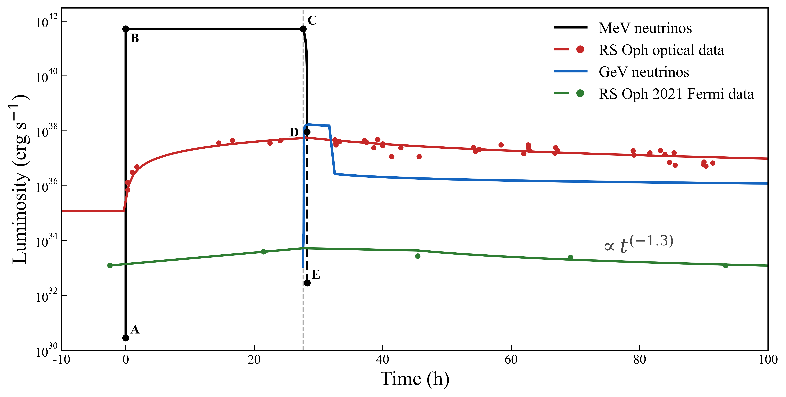
图注：RS Oph 2021 optical data and fitting curve (red), RS Oph 2021 high-energy band data and fitting curve observed by \(\textit{Fermi}-LAT\) (green), estimated MeV neutrino light curve generated by TNR (black), estimated GeV neutrino light curve generated by hadron processes (blue).
对应解读：对应“建议重点查看的图表”第3项MeV与GeV中微子光变图，以及“关键图表逐图导读”中关于图3/光变双成分结构的核心解读。
入选理由：这是最直接支撑论文主结论的图：同一图中给出RS Oph 2021的光学拟合、Fermi-LAT高能数据拟合、TNR产生的MeV中微子光变和强子过程产生的GeV中微子光变，可用于确认MeV早期成分与GeV延迟/增强成分的时间关系，也能把中微子预言与实际电磁观测联系起来。
来源与置信度：\(arxiv_source\)；high；\(arxiv_source\) / arxiv.tex:figure[4]
Fig06
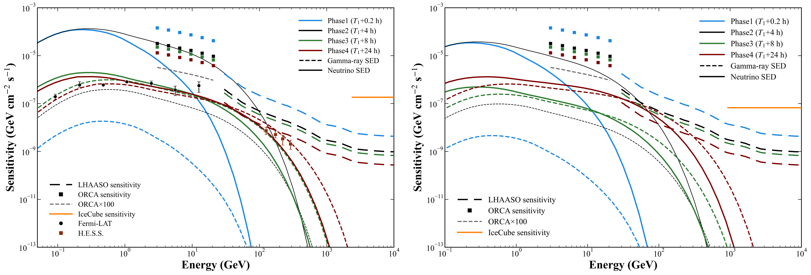
图注：The GeV neutrino (solid line) and gamma rays (dashed line) spectra at four phases during the early stages of RS Oph (top) and T CrB (bottom). The detection limits of ORCA (squares), ORCA$\times 100$ (grey dashed){\(\color{black},IceCube(orange)\) }and LHAASO (long-dashed) are marked. The neutrino spectra, ORCA sensitivity, LHAASO sensitivity for Phase 1-4 are in blue, black, green and red respectively. The observations by \(\textit{Fermi}-LAT\) \(\cite{MAGIC:2022rmr}\) and H.E.S.S. \(\cite{HESS:2022qap}\) are labeled as blue circle and red squares.
对应解读：对应“建议重点查看的图表”第4项中微子能谱、第5项探测器灵敏度比较、第7项gamma射线对比图，以及模型拟合段落中用gamma射线约束强子模型的讨论。
入选理由：该图同时展示RS Oph和T CrB早期四个相位的GeV中微子谱与gamma射线谱，并叠加ORCA、ORCA×100、IceCube、LHAASO灵敏度及Fermi-LAT、H.E.S.S.观测点，是评估谱峰、时间演化、探测可行性和强子模型是否过量产生gamma射线的最关键图。
来源与置信度：\(arxiv_source\)；high；\(arxiv_source\) / arxiv.tex:figure[6]
Fig05
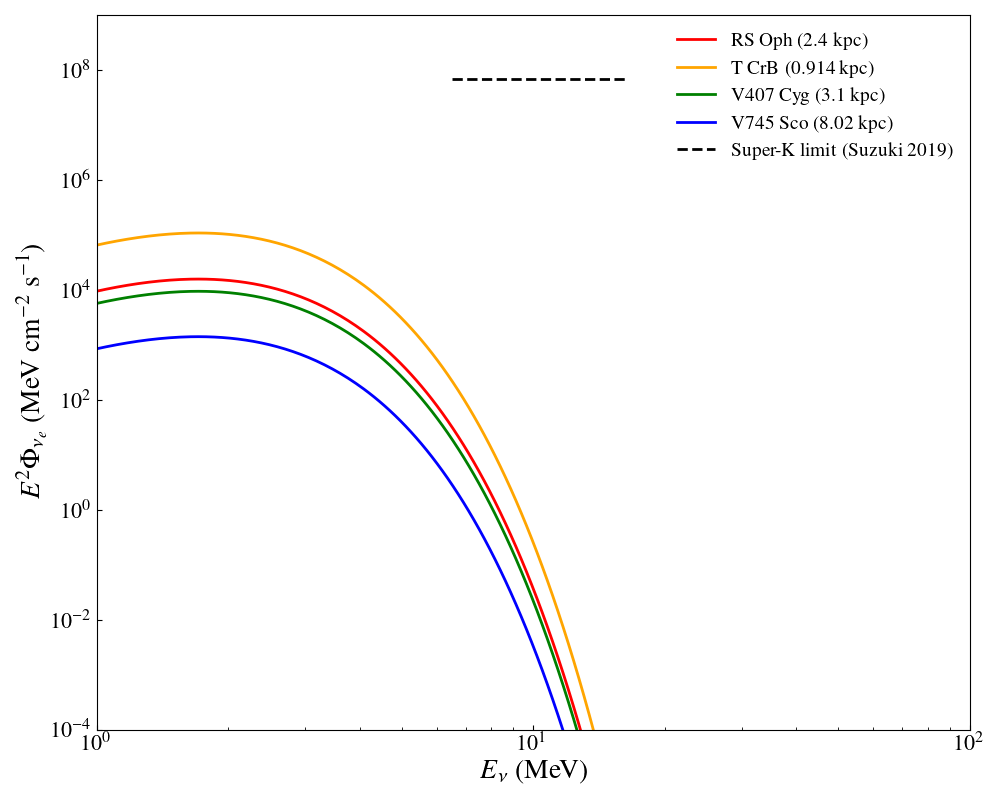
图注：The comparison of MeV neutrino spectrum reaching the Earth from RS Oph, T CrB, V407 Cyg, and V745 Sco (red, orange, green and blue solid line). The detection upper limit of Super-Kamiokande on electron neutrino flux (black dotted line).
对应解读：对应“建议重点查看的图表”第4项MeV中微子能谱和第5项探测器事件数或灵敏度比较中关于MeV成分低于现有阈值的解读。
入选理由：该图比较RS Oph、T CrB、V407 Cyg和V745 Sco到达地球的MeV中微子谱，并给出Super-Kamiokande电子中微子通量上限，直接支撑‘MeV成分目前难以探测’这一可探测性结论。
来源与置信度：\(arxiv_source\)；high；\(arxiv_source\) / arxiv.tex:figure[5]
Fig01
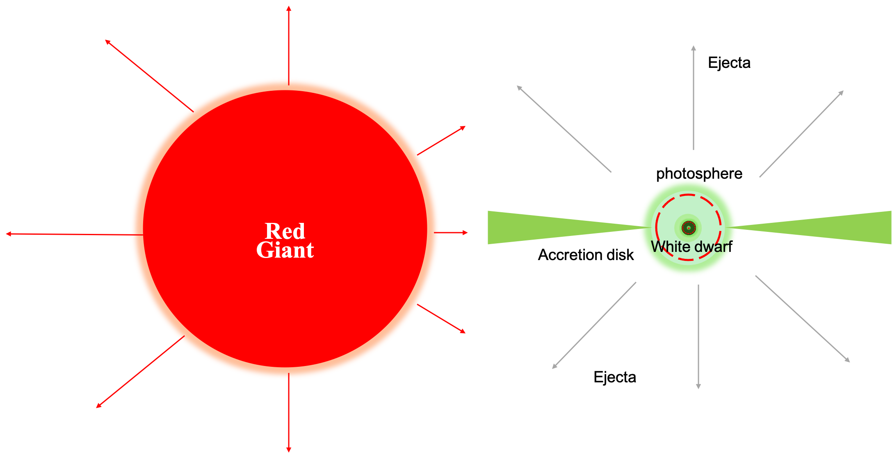
图注：Schematic diagram of the geometric structure of a SymRN.
对应解读：对应“建议重点查看的图表”第1项星周介质/几何结构，以及“关键图表逐图导读”中图1系统示意图的解读。
入选理由：虽然不是定量密度剖面，但它是候选图中唯一明确展示共生复发新星几何结构的图，有助于理解红巨星风、白矮星附近吸积盘和新星激波的相对位置，是解释盘为何能增强早期GeV中微子的必要背景图。
来源与置信度：\(arxiv_source\)；high；\(arxiv_source\) / arxiv.tex:figure[1]
Fig07
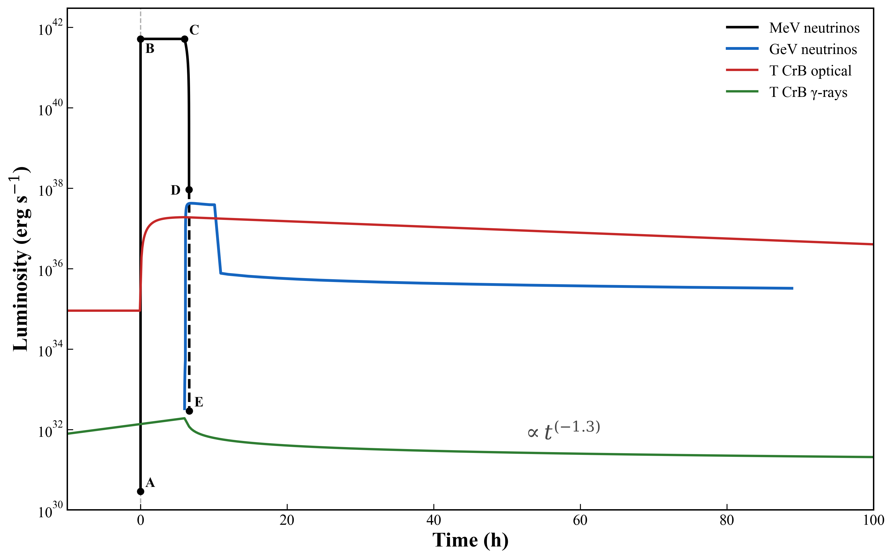
图注：The predicted luminosity of T CrB for MeV (black) and GeV (black) neutrinos. Estimated optical (red) and gamma-ray (green) light curves for the next outburst of T CrB.
对应解读：对应“建议重点查看的图表”第3项中微子光变图和第5项未来探测前景，尤其是对T CrB下一次爆发的预报部分。
入选理由：该图给出T CrB下一次爆发的MeV和GeV中微子预期光变，并同时展示估计的光学与gamma射线光变，可用于把RS Oph基准模型外推到未来实时多信使搜索目标。
来源与置信度：\(arxiv_source\)；high；\(arxiv_source\) / arxiv.tex:figure[7]
Fig02
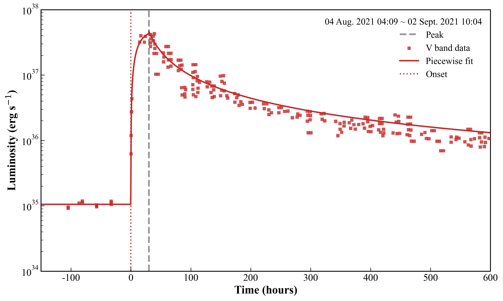
图注：Optical data (red points) and fitting curve (solid line) of RS Oph from 4th August to 2nd September 2021. The peak of optical luminosity is about 27.6 h after the starting point of the eruption. The onset and peak time are presented with red dotted and grey dashed lines.
对应解读：对应模型拟合段落中用光学光变锁定爆发时间、峰值时间和热核失控时序的讨论。
入选理由：该图展示RS Oph 2021光学数据及拟合曲线，并标出起始和峰值时间；虽然不直接显示中微子或强子过程，但为确定TNR MeV成分的时间零点和后续高能光变相位提供基础约束。
来源与置信度：\(arxiv_source\)；high；\(arxiv_source\) / arxiv.tex:figure[2]
强相关工作
这篇工作与 RS Oph 的高能 \(\gamma\) 射线观测直接相关。H.E.S.S. 对 RS Oph 2021 爆发的甚高能 \(\gamma\) 射线探测被广泛解读为新星激波中粒子加速的强证据，并且强子模型是主要解释之一。本文进一步问：如果 \(\gamma\) 射线中确有强子成分，那么伴随中微子在什么时间、什么能段出现，吸积盘会如何改变这个预言。检索关键词可用 “RS Ophiuchi 2021 gamma rays hadronic acceleration H.E.S.S.”、“recurrent nova neutrinos”、“symbiotic nova particle acceleration”。
它也与经典新星 \(\gamma\) 射线研究和新星宇宙线加速理论相连。Fermi-LAT 发现多颗新星有 \(\mathrm{GeV}\) \(\gamma\) 射线后，领域中一直存在轻子过程与强子过程的解释张力。中微子是区分二者的关键，因为轻子逆康普顿或轫致辐射不会产生相同比例的中微子。检索关键词可用 “Fermi LAT novae gamma rays leptonic hadronic”、“nova shocks cosmic ray acceleration”、“pp neutrino emission novae”。
同源和同类背景方面，RS Oph 是明确的同一源对象；H.E.S.S. 2021 爆发论文属于同源、同事件或近同事件的高能观测背景。Fermi-LAT 新星目录和经典新星 \(\gamma\) 射线论文属于同类源背景。若要找相反观点，应检索强调轻子 \(\gamma\) 射线解释、低强子效率或中微子不可探测性的模型论文。
同一事件 / 同类源线索：
相似工作：
基础理论 / 方法工作：
（未提供）
相反观点 / 张力线索：
（未提供）
9. Explosions from Rotating Very Massive Star Collapses to Black Holes: Effects of Nuclear Burning
- 来源：arXiv / astro-ph.HE
- 链接：https://arxiv.org/abs/2608.13642v1
- 作者：Sho Fujibayashi, Alan Tsz-Lok Lam, Yuichiro Sekiguchi, Masaru Shibata
- 评分：novelty 8/10，importance 7/10，relevance 8/10，final 8.65/10
- 推荐理由：数值相对论研究旋转甚大质量恒星坍缩成黑洞并产生极高能量抛射物和Ni合成，涉及极端爆发现象和黑洞形成；对HE瞬变和早期宇宙大质量恒星结局有较好价值。
中文题目：旋转超大质量恒星坍缩成黑洞时的爆炸：核燃烧的作用
做了什么：这篇论文用数值相对论模拟研究质量约为 \(2\times10^{3}\!-\!5\times10^{4}M_\odot\) 的旋转超大质量恒星核心坍缩成黑洞时，核反应网络和中微子冷却如何改变黑洞、吸积盘、抛射物和 \(^{56}{\rm Ni}\) 的形成。作者发现，较低质量、由电子正负电子对不稳定触发坍缩的核心更容易在黑洞外留下大量物质，形成大质量盘并通过盘反弹和黏滞演化抛出 \(10\!-\!10^{3}M_\odot\) 物质，动能可达 \(10^{53}\!-\!10^{55}{\rm erg}\)。只有较低质量模型能显著合成铁族元素，尤其是 \(^{56}{\rm Ni}\)。
为什么重要：超大质量恒星坍缩通常被看作直接形成中等质量或超大质量黑洞种子的通道，但这篇文章强调：如果核心有足够旋转，并且核燃烧、中微子冷却与广义相对论动力学一起处理，坍缩未必是“安静吞没”。它可能伴随极端能量的抛射和可观的放射性镍产物，从而为早期宇宙高红移瞬变、黑洞种子形成和金属富集提供同一个物理场景。
理论 / 观测 / 仪器方法价值：理论价值在于把旋转、广义相对论、不稳定触发机制、\(\alpha\) 链核反应和中微子冷却放进同一套模拟，区分了低质量对不稳定核心与高质量广义相对论不稳定核心的坍缩行为。观测价值在于给出了抛射质量、动能和 \(^{56}{\rm Ni}\) 产额量级，可直接进入超亮超新星、高红移红外瞬变和早期化学富集模型。方法价值在于说明盘形成时刻、黑洞外剩余质量和黏滞盘风可能比单纯预坍缩质量更决定可见信号。
为什么应该关注：如果你关心第一代恒星、黑洞种子、极端瞬变或早期宇宙金属污染，这篇文章值得看，因为它把“超大质量星坍缩是否完全暗掉”这个问题变成了可计算的爆炸问题。它还提醒我们，\(M_{\rm core}\)、角动量分布、冷却和核燃烧之间的耦合会决定是否有亮的电磁对应体，而不是只由最终黑洞质量决定。
展开详细解读：文章讲解、背景、理论、重点章节、图表与相关工作
文章详细讲解
科学问题：本文问的是旋转很强的超大质量恒星核心在坍缩成黑洞时，会不会产生真正意义上的爆炸式抛射，以及核燃烧和中微子冷却在其中扮演什么角色。传统图像里，质量达到 \(10^{3}M_\odot\) 以上的核心容易被认为会快速形成黑洞，绝大部分物质被吞入，留下的可见信号有限。但如果核心有显著角动量，离心支撑会让一部分物质在黑洞外形成盘；盘的反弹、核能释放、黏滞加热和中微子冷却会共同决定是否有大质量抛射和铁族元素合成。\n\n作者怎么做：作者构造了一组初始核心质量在 \(2\times10^{3}M_\odot\) 到 \(5\times10^{4}M_\odot\) 的新模型，并用数值相对论模拟它们的坍缩。较低质量模型的坍缩由电子正负电子对不稳定触发，较高质量模型则由广义相对论径向不稳定触发。模拟中加入 \(\alpha\) 链核反应网络和中微子冷却，使得热压、核能释放、光致裂解和冷却不只是背景修正，而是会反馈到动力学。部分代表性模型还继续计算黑洞形成后吸积盘的黏滞演化，以估计长期盘风对抛射质量和动能的贡献。\n\n关键结果：高质量核心更接近同调坍缩，黑洞初始吞入核心的大部分质量，外部残留盘和抛射相对受限。低质量对不稳定核心因为达到更高密度和温度时中微子冷却更有效，坍缩更接近 runaway；同时其紧致度较低，允许更大的无量纲角动量，黑洞形成初期只包含较小核心质量分数，更多物质留在黑洞外形成盘。盘反弹本身即可驱动 \(10\!-\!10^{3}M_\odot\) 量级抛射，动能达到 \(10^{53}\!-\!10^{55}{\rm erg}\)。显著 \(^{56}{\rm Ni}\) 产额主要出现在最低质量模型；当引入黏滞演化时，\(\lesssim10^{4}M_\odot\) 的模型还可从达到核统计平衡的盘物质中产生富 \(^{56}{\rm Ni}\) 的抛射。\n\n局限和下一步：本文的关键不确定性仍在初始模型和角动量分布。真实第一代或低金属丰度超大质量星的演化会受质量损失、磁场、对流混合、旋转输运和二元相互作用影响，预坍缩核心未必落在本文参数化模型覆盖范围内。黏滞演化多半以有效黏滞处理，不能完全替代三维磁流体湍流和喷流形成。下一步需要把三维磁场、辐射输运、长期盘风和光变曲线合成接起来，才能判断这些事件在 \(z\gtrsim10\) 宇宙中对 \({\rm JWST}\)、\({\rm Roman}\) 或未来红外巡天是否可见。
关键结果是怎么做出来的
本文最重要的证据链从样本构造开始。作者没有只跑一个示例模型，而是围绕 \(M_{\rm core}\simeq2\times10^{3}\!-\!5\times10^{4}M_\odot\) 做主参数扫描，覆盖由对不稳定触发坍缩的较低质量核心和由广义相对论不稳定触发坍缩的较高质量核心。读者应特别注意每个模型的初始紧致度、角动量分布、热状态和触发机制，因为这些量决定黑洞形成时还有多少物质具有足够比角动量留在视界外。\n\n事件数或样本量在这里不是观测天体数，而是数值实验的模型组数和每个模型的时间演化输出。核心诊断包括黑洞形成时刻、黑洞质量分数、黑洞自旋、盘质量、未束缚物质质量、抛射物动能和核合成产额。本文的主结论不是依靠单个峰值量，而是依靠随 \(M_{\rm core}\) 和触发机制变化的系统趋势：低质量对不稳定模型更容易形成高自旋黑洞和大质量盘，高质量广义相对论不稳定模型更接近整体同调吞入。\n\n显著性在这类理论模拟中通常不是观测意义上的 \(5\sigma\)，而是模型比较与稳健性诊断。作者通过开关或加入 \(\alpha\) 链核反应、中微子冷却和后续黏滞演化来判断物理过程对结果的影响。关键比较应看：若没有有效盘反弹或黏滞加热，未束缚质量是否显著下降；若核心质量增加，\(^{56}{\rm Ni}\) 产额是否系统性降低；若盘物质达到核统计平衡，黏滞抛射是否能把铁族元素带出。\n\n支撑结论的图表应包括初始模型序列、中心密度和温度随时间演化、黑洞和盘质量随时间演化、未束缚质量与动能表、以及元素产额表或质量分数图。尤其要看低质量模型中黑洞形成前后的质量预算：黑洞内质量、束缚盘质量和未束缚抛射质量三者是否闭合；还要看 \(^{56}{\rm Ni}\) 是来自早期盘反弹抛射，还是来自黏滞演化阶段已经达到核统计平衡的盘物质。\n\n主要系统误差包括有限分辨率、轴对称或近似对称假设、有效黏滞参数、核反应网络简化、中微子冷却近似和未长期追踪到完全自由膨胀。稳健性检验的重点不是某一个数值是否精确到百分之几，而是结论的方向是否稳定：低质量核心是否持续给出更大的黑洞外质量分数；黏滞是否总是增强总抛射；\(^{56}{\rm Ni}\) 是否始终集中在较低质量核心。
展开背景、理论、公式、模型、章节和图表导读
背景知识
研究对象是非常大质量或超大质量恒星核心，质量尺度从几千到几万 \(M_\odot\)。这类天体常被放在早期宇宙语境中讨论：低金属丰度环境减少线驱动风质量损失，快速吸积可能让原恒星长到极大质量，最终成为中等质量黑洞或超大质量黑洞种子。与普通核心坍缩超新星相比，这里的引力势、辐射压主导程度、广义相对论效应和核燃烧时标都完全不同。\n\n历史问题有两条线。一条是对不稳定超新星：当高温光子产生 \(e^-e^+\) 对时，辐射压的有效绝热指数降低，核心收缩并点燃爆炸性氧燃烧，某些质量范围可以完全炸散。另一条是超大质量星的广义相对论不稳定：当辐射压支撑的星体足够大且紧致时，一阶广义相对论修正会使径向模式失稳，导致整体坍缩。本文覆盖的核心质量横跨这两类触发机制的过渡区，因此能比较两种不稳定如何影响后续黑洞和盘。\n\n为什么现在值得重看：一方面，高红移观测正在快速推进，\({\rm JWST}\) 已经把早期星系和可能的高红移瞬变推到更早宇宙；另一方面，黑洞种子的形成问题仍然悬而未决，轻种子、重种子和直接坍缩方案都面临增长时间和环境约束。若超大质量星坍缩能产生亮而长时标的瞬变，它不仅是黑洞种子的形成通道，也是可观测的早期宇宙信标。\n\n一个常见误区是把“形成黑洞”等同于“没有爆炸”。在旋转坍缩中，黑洞形成只是中心区域的结局；视界外高比角动量物质的命运由盘动力学决定。另一个误区是把核燃烧只看成能量源，而忽略光致裂解、中微子冷却和核统计平衡对熵、电子丰度和元素产额的控制。对本文而言，核物理和冷却过程并非细节，而是决定抛射物成分和是否富 \(^{56}{\rm Ni}\) 的核心条件。
基础理论 / 方法脉络
基本物理图像可以从辐射压主导的巨大恒星核心说起。对这类核心，压力主要来自光子，理想情况下有效绝热指数接近 \(4/3\)，因此系统天然接近动力学稳定性的边界。只要电子正负电子对产生、广义相对论修正或冷却过程让有效支撑略微降低，核心就可能整体收缩。收缩提高温度和密度，进而触发氧、硅等核燃烧、光致裂解和中微子冷却。\n\n旋转改变结局的关键在比角动量。若某层物质的比角动量大于绕最终黑洞最内稳定圆轨道所需值，它不能直接落入黑洞，而会在外部圆化成吸积盘或厚环。这样，坍缩从一维“质量落入中心”的问题变成了黑洞加吸积盘系统的能量和角动量再分配问题。盘反弹来自离心支撑、压力梯度和核热释放共同作用；黏滞或磁湍流则把角动量向外输运，使外层盘物质获得正能量逃逸。\n\n本文模型的核心假设是用数值相对论处理强引力坍缩，用 \(\alpha\) 链网络描述主要核反应路径，并用中微子冷却项近似能量损失。这里的 \(\alpha\) 链适合追踪从 \(^{4}{\rm He}\) 到铁族附近的主要偶偶核合成，但不能替代完整大网络，特别是在电子丰度变化、弱相互作用和细致同位素丰度方面。中微子处理也更偏冷却近似，而非完整多能群辐射输运。\n\n观测对应量不是模拟直接输出的坐标变量，而是抛射质量、动能、平均速度、\(^{56}{\rm Ni}\) 质量和可能的扩散时标。模型退化很强：同样的光变峰值可由更大抛射质量、更高动能或更多 \(^{56}{\rm Ni}\) 组合出来；同样的黑洞质量也可能来自不同初始核心质量和角动量分布。因此把本文结果用于观测解释时，必须同时看动力学量和核合成量，而不是只拿一个总能量标尺。
公式与推导
第一步是写出坍缩核心的动力学时标。若平均密度为 \(\bar{\rho}\)，自由落体时标近似为
这里 \(G\) 是引力常数。这个式子说明低密度超大质量核心的整体坍缩可以很慢，但一旦中心密度升高，局部动力学会迅速加速。\n\n第二步是稳定性条件。辐射压主导星体的有效绝热指数 \(\Gamma_{\rm eff}\) 接近 \(4/3\)，牛顿近似下径向稳定要求
对产生会降低 \(\Gamma_{\rm eff}\)，广义相对论修正也会提高失稳倾向；因此当 \(\Gamma_{\rm eff}\) 低于临界值时，核心会从准静态演化转入坍缩。\n\n第三步是旋转支撑。定义旋转动能与引力束缚能之比为
其中 \(T\) 是旋转动能，\(W\) 是引力势能。较大的 \(\beta_{\rm rot}\) 不一定阻止中心黑洞形成，但会增加视界外形成盘的概率。\n\n第四步是判断某质量壳能否直接落入黑洞。若该壳比角动量为 \(j\)，而最终黑洞质量和自旋为 \(M_{\rm BH}\) 与 \(a_\ast\)，则盘形成的粗略条件是
这里 \(j_{\rm ISCO}\) 是最内稳定圆轨道的比角动量。满足该条件的物质会圆化，成为盘反弹和黏滞抛射的物质库。\n\n第五步是能量判据。数值模拟常用伯努利型量判断未束缚物质，简化写法为
其中 \(v\) 是速度，\(\epsilon\) 是比内能，\(P\) 是压强，\(\rho\) 是密度，\(\Phi\) 是引力势。广义相对论计算中会用相应的相对论能量判据，但物理含义相同：正总能量物质可逃逸到无穷远。\n\n第六步是抛射动能。对未束缚质量元积分可得
本文给出的 \(10^{53}\!-\!10^{55}{\rm erg}\) 正是这种质量巨大且速度不低的结果，而不是普通核心坍缩超新星的 \(10^{51}{\rm erg}\) 标尺。\n\n第七步是核能释放和成分。若核反应把质量分数 \(X_i\) 的核素转化并释放每重子能量 \(q_i\)，近似核能为
这里 \(M_{\rm burn}\) 是经历高温燃烧的质量，\(\Delta X_i\) 是丰度变化。该式解释为什么只有达到合适温度、密度和膨胀时标的盘物质才能产生大量 \(^{56}{\rm Ni}\)。\n\n第八步是放射性镍对可见瞬变的能量输入。若 \(^{56}{\rm Ni}\) 质量为 \(M_{\rm Ni}\)，衰变加热率可概略写成
其中 \(\epsilon_{\rm Ni}\) 和 \(\epsilon_{\rm Co}\) 是单位质量加热率，\( au_{\rm Ni}\) 和 \( au_{\rm Co}\) 是衰变时标。本文没有直接给完整光变曲线，但 \(M_{\rm Ni}\) 是连接模拟与观测亮度的关键量。\n\n第九步是扩散时标。若抛射物质量为 \(M_{\rm ej}\)、不透明度为 \(\kappa\)、特征速度为 \(v_{\rm ej}\)，光变宽度量级为
其中 \(c\) 是光速，\(\beta_{\rm lc}\) 是与密度结构有关的常数。对 \(10\!-\!10^{3}M_\odot\) 抛射物，瞬变可能极宽、极红，并在高红移处进一步被时间膨胀。
模型拟合 / 应用方法
本文本身主要是数值模拟参数研究，不是对某个观测样本做贝叶斯拟合；但它的结果天然会进入后续瞬变模型拟合。可拟合量包括 \(M_{\rm ej}\)、\(E_{\rm kin}\)、\(M_{\rm Ni}\)、抛射物速度分布、混合程度、不透明度 \(\kappa\)、爆炸时间和红移。若用于光变拟合，核心残差应看峰值亮度、上升时间、衰减斜率和多波段颜色是否同时匹配，而不是只匹配单波段峰值。\n\n参数估计上，常见似然可以建立在观测流量与模型流量的差上，误差项包括测光误差、宿主消光、红移不确定性和模型系统误差。若加入本文模拟作为先验，则低质量对不稳定核心应允许更高 \(M_{\rm Ni}\) 和更大盘风贡献；高质量广义相对论不稳定核心则更倾向较少铁族元素和更强黑洞吞入。这样的物理先验可减少纯经验光变模型的自由度。\n\n退化关系非常重要。\(M_{\rm ej}\) 增大会拉宽光变，\(E_{\rm kin}\) 增大会提高速度并缩短扩散时标，\(M_{\rm Ni}\) 增大会提高放射性供能，但磁星或黑洞吸积中央引擎也可能产生类似峰值亮度。谱线速度、温度演化、晚期衰减是否跟随 \(^{56}{\rm Co}\) 衰变、以及是否有铁族元素谱特征，是打破这些退化的关键。\n\n系统误差方面，本文模拟中的有效黏滞参数会显著影响盘风质量和能量，核反应网络大小会影响 \(^{56}{\rm Ni}\) 与邻近铁族同位素比例，中微子冷却近似会影响熵和电子丰度。若把这些结果用于群体预测，还要加入初始质量函数、金属丰度分布、旋转分布和形成率的不确定性。\n\n模型可能失败的场景包括：真实核心磁场足以驱动强喷流，使轴向能量注入主导抛射；三维非轴对称不稳定显著重分配角动量；恒星外包层结构与核心模型不一致，导致冲击传播和光变完全不同；或者高红移环境中的吸收与透镜放大改变观测解释。因此本文结果最适合作为坍缩引擎和盘抛射的物理基准，而不是直接等同于某一类观测瞬变模板。
重点章节 / 结果段落怎么读
数据和初始模型部分应首先读。重点是 \(M_{\rm core}\) 范围、熵或温度结构、角动量分布、触发机制以及模型命名规则。读者需要弄清楚哪些模型属于对不稳定触发，哪些属于广义相对论不稳定触发，否则后面关于低质量与高质量趋势的比较容易误读。\n\n数值方法部分要看相对论流体、引力场求解、核反应网络和中微子冷却的实现。这里最重要的问题不是代码细节，而是能量守恒、核能释放、冷却项和黑洞形成后的内边界或网格处理如何影响盘质量和未束缚质量。\n\n主结果部分应围绕坍缩动力学、黑洞形成和盘反弹来读。看中心密度与温度演化、黑洞质量增长、盘质量演化，以及不同核心质量下坍缩是否同调。本文的物理转折点在于低质量模型更 runaway、高质量模型更同调。\n\n核合成和抛射物部分要特别关注 \(M_{\rm ej}\)、\(E_{\rm kin}\) 与 \(M_{\rm Ni}\)。读者应区分盘反弹抛射和黏滞驱动抛射，因为两者发生时刻、热历史和元素组成不同。\n\n讨论和稳健性部分应看作者如何评估黏滞、分辨率、网络近似和初始模型不确定性。若有附录，优先看模型列表、额外时间演化图和分辨率比较，这些内容决定主结论是否只是少数模型的偶然结果。
建议重点查看的图表
- 初始模型参数表或图：检查 \(M_{\rm core}\)、紧致度、角动量和触发机制如何排列，确认低质量和高质量模型不是只差一个质量标签。\(\n2.\) 中心密度、温度随时间演化图：看低质量模型是否达到更高密度和温度，以及中微子冷却是否对应更 runaway 的收缩。\(\n3.\) 黑洞质量和自旋随时间图：看黑洞初始质量分数在低质量模型中是否更小，自旋是否更高。\(\n4.\) 盘质量和黑洞外质量预算图：检查盘形成时刻、盘质量峰值和后续吸积或抛射的质量闭合。\(\n5.\) 未束缚质量与动能图或表：重点看 \(M_{\rm ej}\sim10\!-\!10^{3}M_\odot\) 和 \(E_{\rm kin}\sim10^{53}\!-\!10^{55}{\rm erg}\) 是否来自多个模型而非单一极端模型。\(\n6.\) 元素产额或 \(^{56}{\rm Ni}\) 质量图：看显著 \(^{56}{\rm Ni}\) 是否只出现在最低质量模型，以及黏滞阶段是否改变产额。\(\n7.\) 黏滞演化对比图：比较无黏滞或早期动力学抛射与加入黏滞后的总抛射质量、动能和成分。\(\n8.\) 分辨率或物理开关检验：看结果对网格、冷却、核反应网络或有效黏滞参数的敏感度。
关键图表逐图导读
图 1：通常应是初始模型或质量序列图。横轴可能是 \(M_{\rm core}\) 或模型编号，纵轴可能给出紧致度、角动量、熵或稳定性指标。读图时不要只看质量，还要看同一质量下角动量是否不同；若低质量模型初始更低紧致且更高无量纲角动量，这会直接解释后续盘质量更大。\n\n图 2：坍缩演化图应关注中心密度 \(\rho_c\) 和中心温度 \(T_c\) 随时间的曲线。低质量模型若曲线上升更陡、达到更高温度密度，说明中微子冷却和对不稳定诱发的 runaway 更强。读图陷阱是不同模型的时间零点可能不同，应确认时间是否相对黑洞形成时刻或坍缩开始时刻归一。\n\n图 3：黑洞形成和质量增长图通常以时间为横轴，纵轴为 \(M_{\rm BH}\)、\(a_\ast\) 或黑洞外剩余质量。关键是看黑洞初始吞入核心质量的分数，而不是最终质量本身。低质量模型若初始 \(M_{\rm BH}/M_{\rm core}\) 较小，就意味着更多物质可参与盘反弹和后续风。\n\n图 4：盘质量、未束缚质量和动能演化图应同时读。若 \(M_{\rm disk}\) 先升高然后部分转化为 \(M_{\rm ej}\)，这是盘反弹或黏滞抛射的直接证据。注意残余束缚盘不等于最终不可见物质，它可能在更长时标上继续通过黏滞或磁过程喷出。\n\n图 5：元素丰度或 \(^{56}{\rm Ni}\) 产额图的坐标可能是速度、质量坐标、温度历史或模型编号。应看富 \(^{56}{\rm Ni}\) 区域是否与达到核统计平衡的盘物质对应，以及是否随 \(M_{\rm core}\) 增大快速消失。读图陷阱是 \(^{56}{\rm Ni}\) 的绝对质量和质量分数含义不同；高质量抛射中即使质量分数低，总量也可能不小，但本文强调显著产额偏向最低质量模型。\n\n图 6：黏滞演化对比图若存在，横轴多为黑洞形成后的时间，纵轴为累计抛射质量、累计动能或组成。应检查黏滞是否只是提高动能，还是也把已经核统计平衡的内盘物质带出；后者才是增强 \(^{56}{\rm Ni}\) 的关键。
论文原图 / 可嵌入图片
（未提供 verified figure；为避免编造图片链接，本节只在能确认官方图片 URL 或成功提取论文原图时嵌入图片。）
强相关工作
这篇工作属于旋转超大质量星坍缩、直接坍缩黑洞种子、对不稳定与广义相对论不稳定交界问题的同类研究。相关检索关键词包括 “rotating supermassive star collapse black hole numerical relativity”、“very massive star pair instability collapse disk ejecta”、“supermassive star general relativistic instability”、“disk bounce ejecta nucleosynthesis” 和 “direct collapse black hole seed transient”。同类工作通常强调黑洞种子形成和引力波，而本文更突出核燃烧、盘抛射和 \(^{56}{\rm Ni}\) 产额。\n\n基础理论上，应把本文与对不稳定超新星、脉动对不稳定、直接坍缩黑洞和塌缩星吸积盘风文献一起读。可能存在的张力在于：某些恒星演化模型认为超大质量星会因质量损失、混合或非轴对称输运而改变预坍缩角动量；某些直接坍缩模型则假设坍缩近似无电磁信号。本文给出的结果提示，只要保留足够角动量并形成大质量盘，“黑洞种子形成”和“极亮瞬变”并不互斥。
同一事件 / 同类源线索：
相似工作：
（未提供）
基础理论 / 方法工作：
（未提供）
相反观点 / 张力线索：
（未提供）
说明
评分由 LLM 给出初评，再由本地阈值策略过滤；IACT、TeV 伽马射线和高能中微子天文学按重点方向处理。